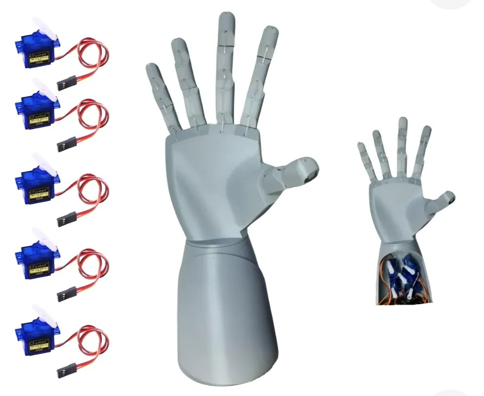
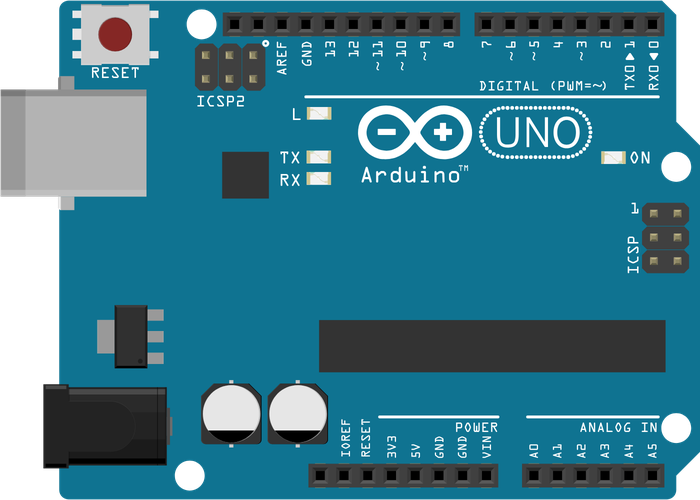
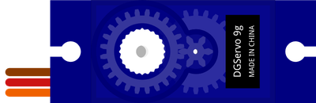
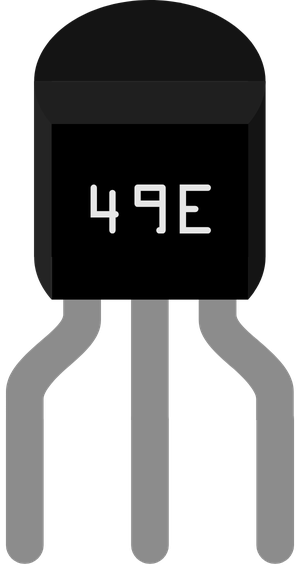
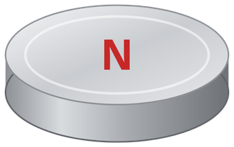
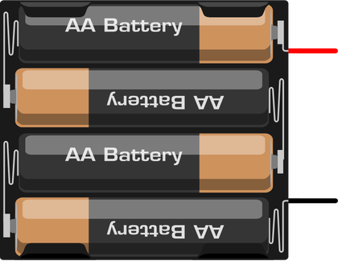
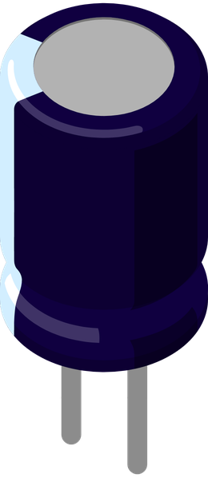
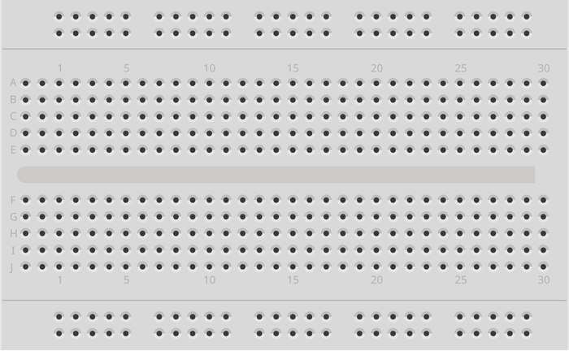
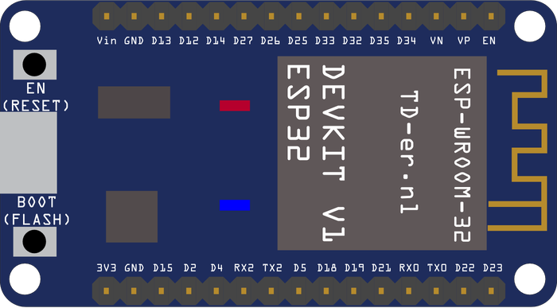

<title>Guia da Mão Robótica</title>
<meta name="claude:viewport-fit-sides" content="cover">
<link rel="preconnect" href="https://fonts.googleapis.com">
<link rel="preconnect" href="https://fonts.gstatic.com" crossorigin>
<link rel="stylesheet" href="https://fonts.googleapis.com/css2?family=Archivo:wdth,wght@62..125,500..900&family=Atkinson+Hyperlegible:ital,wght@0,400;0,700;1,400&family=JetBrains+Mono:wght@400;600&display=swap">
<style>
/* Layout: manual de bancada. Coluna de leitura estreita, diagramas e tabelas largos; cores dos fios (vermelho +, marrom GND, laranja sinal) viram linguagem visual do guia inteiro. */
:root {
  --bg: #EDF0F3;
  --surface: #FFFFFF;
  --surface-2: #F5F7F9;
  --ink: #121B24;
  --ink-2: #44525F;
  --muted: #687684;
  --line: #D4DAE0;
  --line-2: #A9B5C0;
  --accent: #2B55D6;
  --accent-soft: #E3E9FB;
  --accent-ink: #1E3FA3;
  --servo: #3A61DD;
  --on-color: #FFFFFF;
  --pcb: #1B6A72;
  --pcb-ink: #E6F3F4;
  --part: #262B31;
  --on-part: #E9EDF1;
  --metal: #A7AFB8;
  --magnet: #8D97A2;
  --glove: #E2E6EB;
  --glove-2: #C9D0D8;
  --w-pos: #D1372D;
  --w-gnd: #6F4A2E;
  --w-sig: #E8841A;
  --w-out: #168F5E;
  --w-3v3: #9844C6;
  --w-tx: #2B55D6;
  --ok: #217D4C;
  --ok-soft: #E0F2E7;
  --warn: #9C6205;
  --warn-soft: #FAEFD6;
  --bad: #B3302A;
  --bad-soft: #FAE3E1;
  --stage: #F5F7F9;
  --s1: #2a78d6;
  --s2: #eb6834;
  --s3: #1baf7a;
  --f-display: "Archivo", "Arial Narrow", "Helvetica Neue", Arial, sans-serif;
  --f-body: "Atkinson Hyperlegible", system-ui, -apple-system, "Segoe UI", Roboto, sans-serif;
  --f-mono: "JetBrains Mono", ui-monospace, "SFMono-Regular", Menlo, Consolas, monospace;
  --read: 44rem;
  --wide: 70rem;
}
@media (prefers-color-scheme: dark) {
  :root:not([data-theme="light"]) {
    --bg: #0D1318; --surface: #141C24; --surface-2: #1A242E; --ink: #E3E9EF; --ink-2: #A6B3C0; --muted: #7E8C99;
    --line: #26323D; --line-2: #3B4957; --accent: #7C9BFF; --accent-soft: #1A2646; --accent-ink: #AFC2FF;
    --servo: #4F74EA; --pcb: #1D5A61; --pcb-ink: #DDEFF1; --part: #0A0D10; --on-part: #DCE2E8; --metal: #8D96A0; --magnet: #7A8591;
    --glove: #25303B; --glove-2: #34414E;
    --w-pos: #EF6157; --w-gnd: #B98A66; --w-sig: #F49B3B; --w-out: #3DBF89; --w-3v3: #C47DEB; --w-tx: #7C9BFF;
    --ok: #5BCB8C; --ok-soft: #12301F; --warn: #E6AE48; --warn-soft: #33270E; --bad: #F07B71; --bad-soft: #3A1815;
    --s1: #3987e5; --s2: #d95926; --s3: #199e70;
    color-scheme: dark;
  }
}
:root[data-theme="dark"] {
  --bg: #0D1318; --surface: #141C24; --surface-2: #1A242E; --ink: #E3E9EF; --ink-2: #A6B3C0; --muted: #7E8C99;
  --line: #26323D; --line-2: #3B4957; --accent: #7C9BFF; --accent-soft: #1A2646; --accent-ink: #AFC2FF;
  --servo: #4F74EA; --pcb: #1D5A61; --pcb-ink: #DDEFF1; --part: #0A0D10; --on-part: #DCE2E8; --metal: #8D96A0; --magnet: #7A8591;
  --glove: #25303B; --glove-2: #34414E;
  --w-pos: #EF6157; --w-gnd: #B98A66; --w-sig: #F49B3B; --w-out: #3DBF89; --w-3v3: #C47DEB; --w-tx: #7C9BFF;
  --ok: #5BCB8C; --ok-soft: #12301F; --warn: #E6AE48; --warn-soft: #33270E; --bad: #F07B71; --bad-soft: #3A1815;
  --s1: #3987e5; --s2: #d95926; --s3: #199e70;
  color-scheme: dark;
}

*, *::before, *::after { box-sizing: border-box; }
html { scroll-behavior: smooth; scroll-padding-top: calc(env(safe-area-inset-top, 0px) + 64px); }
@media (prefers-reduced-motion: reduce) { html { scroll-behavior: auto; } }
body {
  background: var(--bg); color: var(--ink);
  font-family: var(--f-body); font-size: 17px; line-height: 1.6;
  -webkit-text-size-adjust: 100%;
}
body::before { content: ""; position: fixed; inset: 0 0 auto; height: env(safe-area-inset-top, 0px); z-index: 10; background: var(--surface); }
.wrap { max-width: var(--wide); margin: 0 auto; padding-left: max(16px, env(safe-area-inset-left, 0px)); padding-right: max(16px, env(safe-area-inset-right, 0px)); }
.read { max-width: var(--read); }
h1, h2, h3, h4 { font-family: var(--f-display); text-wrap: balance; margin: 0; line-height: 1.12; }
h1 { font-size: clamp(2.1rem, 6.2vw, 3.9rem); font-weight: 850; font-stretch: 112%; letter-spacing: -0.01em; }
h2 { font-size: clamp(1.55rem, 3.4vw, 2.15rem); font-weight: 800; font-stretch: 108%; }
h3 { font-size: 1.22rem; font-weight: 750; font-stretch: 104%; }
h4 { font-size: 1.02rem; font-weight: 700; }
p { margin: 0; }
a { color: var(--accent-ink); text-underline-offset: 3px; }
a:focus-visible, button:focus-visible, summary:focus-visible { outline: 3px solid var(--accent); outline-offset: 2px; border-radius: 4px; }
code, kbd, .mono { font-family: var(--f-mono); font-size: 0.86em; }
:not(pre) > code { background: var(--surface-2); border: 1px solid var(--line); padding: 0.05em 0.35em; border-radius: 5px; white-space: nowrap; }
strong { font-weight: 700; }
.eyebrow { font-family: var(--f-mono); font-size: 0.74rem; letter-spacing: 0.12em; text-transform: uppercase; color: var(--muted); font-weight: 600; }
.flow { display: flex; flex-direction: column; gap: 1rem; }
.flow-lg { display: flex; flex-direction: column; gap: 1.6rem; }
ul.list, ol.list { margin: 0; padding-left: 1.3rem; display: flex; flex-direction: column; gap: 0.45rem; }
.muted { color: var(--muted); }
.small { font-size: 0.9rem; }

/* capa */
.capa { background: var(--surface); border-bottom: 1px solid var(--line); }
.capa .wrap { padding-block: 2.4rem 2rem; display: grid; grid-template-columns: minmax(0, 1.25fr) minmax(0, 1fr); gap: 2rem; align-items: center; }
.capa .lede { font-size: 1.12rem; color: var(--ink-2); max-width: 38rem; }
.capa figure { margin: 0; }
.capa img { display: block; width: 100%; height: auto; border-radius: 14px; background: #fff; border: 1px solid var(--line); }
.capa figcaption { font-size: 0.82rem; color: var(--muted); margin-top: 0.4rem; }
.ficha { display: grid; grid-template-columns: repeat(2, minmax(0, 1fr)); gap: 0; border: 1px solid var(--line); border-radius: 12px; overflow: hidden; margin: 0; }
.ficha div { padding: 0.6rem 0.8rem; border-top: 1px solid var(--line); min-width: 0; }
.ficha div:nth-child(-n+2) { border-top: 0; }
.ficha div:nth-child(odd) { border-right: 1px solid var(--line); }
.ficha dt { font-family: var(--f-mono); font-size: 0.68rem; letter-spacing: 0.1em; text-transform: uppercase; color: var(--muted); }
.ficha dd { margin: 0.1rem 0 0; font-weight: 700; font-size: 0.96rem; }
@media (max-width: 820px) { .capa .wrap { grid-template-columns: minmax(0, 1fr); } }
@media (max-width: 420px) { .ficha { grid-template-columns: minmax(0, 1fr); } .ficha div:nth-child(odd) { border-right: 0; } .ficha div:nth-child(2) { border-top: 1px solid var(--line); } }

/* navegação */
nav.indice { position: sticky; top: env(safe-area-inset-top, 0px); z-index: 9; background: color-mix(in srgb, var(--surface) 94%, transparent); backdrop-filter: blur(8px); border-bottom: 1px solid var(--line); }
nav.indice .wrap { overflow-x: auto; scrollbar-width: none; }
nav.indice .wrap::-webkit-scrollbar { display: none; }
nav.indice ol { list-style: none; margin: 0; padding: 0.55rem 0; display: flex; gap: 0.35rem; white-space: nowrap; }
nav.indice a { display: block; text-decoration: none; color: var(--ink-2); font-size: 0.86rem; padding: 0.3rem 0.7rem; border-radius: 999px; border: 1px solid transparent; }
nav.indice a:hover { border-color: var(--line-2); color: var(--ink); }

/* seções */
main section { padding-block: 3rem 0.5rem; }
main section > .wrap { display: flex; flex-direction: column; gap: 1.4rem; }
.sec-head { display: flex; flex-direction: column; gap: 0.5rem; max-width: var(--read); }
.sec-head .num { font-family: var(--f-mono); font-size: 0.78rem; color: var(--accent-ink); font-weight: 600; letter-spacing: 0.08em; }
.sec-head p { color: var(--ink-2); font-size: 1.05rem; }
hr.sep { border: 0; border-top: 1px solid var(--line); margin: 3rem 0 0; }

/* veredito */
.decisoes { display: grid; grid-template-columns: repeat(auto-fit, minmax(min(100%, 15rem), 1fr)); gap: 0.8rem; }
.decisao { background: var(--surface); border: 1px solid var(--line); border-radius: 12px; padding: 1rem 1.1rem; display: flex; flex-direction: column; gap: 0.35rem; min-width: 0; }
.decisao .k { font-family: var(--f-mono); font-size: 0.7rem; text-transform: uppercase; letter-spacing: 0.1em; color: var(--muted); }
.decisao .v { font-family: var(--f-display); font-weight: 780; font-size: 1.12rem; font-stretch: 104%; line-height: 1.2; }
.decisao p { font-size: 0.93rem; color: var(--ink-2); }

/* críticas */
.criticas { display: flex; flex-direction: column; gap: 0; border-top: 1px solid var(--line); }
.critica { display: grid; grid-template-columns: 7.2rem minmax(0, 1fr); gap: 1rem; padding: 1.1rem 0; border-bottom: 1px solid var(--line); }
.critica h3 { margin-bottom: 0.35rem; }
.critica p + p { margin-top: 0.5rem; }
.critica .fix { color: var(--ink); }
.critica .fix strong { color: var(--accent-ink); }
@media (max-width: 560px) { .critica { grid-template-columns: minmax(0, 1fr); gap: 0.4rem; } }
.chip { display: inline-flex; align-items: center; gap: 0.35rem; font-family: var(--f-mono); font-size: 0.7rem; font-weight: 600; letter-spacing: 0.08em; text-transform: uppercase; padding: 0.22rem 0.55rem; border-radius: 6px; align-self: start; justify-self: start; white-space: nowrap; }
.chip::before { content: ""; width: 0.5rem; height: 0.5rem; border-radius: 50%; background: currentColor; }
.chip.grave { color: var(--bad); background: var(--bad-soft); }
.chip.medio { color: var(--warn); background: var(--warn-soft); }
.chip.ok { color: var(--ok); background: var(--ok-soft); }
.chip.info { color: var(--accent-ink); background: var(--accent-soft); }

/* caixas de aviso */
.aviso { border-radius: 12px; padding: 0.95rem 1.1rem; display: flex; flex-direction: column; gap: 0.45rem; max-width: var(--read); }
.aviso .rot { font-family: var(--f-mono); font-size: 0.72rem; font-weight: 600; letter-spacing: 0.1em; text-transform: uppercase; }
.aviso.perigo { background: var(--bad-soft); } .aviso.perigo .rot { color: var(--bad); }
.aviso.cuidado { background: var(--warn-soft); } .aviso.cuidado .rot { color: var(--warn); }
.aviso.dica { background: var(--accent-soft); } .aviso.dica .rot { color: var(--accent-ink); }
.aviso.bom { background: var(--ok-soft); } .aviso.bom .rot { color: var(--ok); }

/* figuras */
figure.dg { margin: 0; background: var(--surface); border: 1px solid var(--line); border-radius: 14px; overflow: hidden; }
figure.dg .scroll { overflow-x: auto; -webkit-overflow-scrolling: touch; }
figure.dg svg { display: block; width: 100%; min-width: 640px; height: auto; }
figure.dg.estreito svg { min-width: 520px; max-width: 760px; margin: 0 auto; }
figure.dg figcaption { padding: 0.75rem 1.1rem 0.9rem; border-top: 1px solid var(--line); font-size: 0.9rem; color: var(--ink-2); }
figure.dg figcaption strong { color: var(--ink); }
.dica-scroll { display: none; font-size: 0.78rem; color: var(--muted); padding: 0.4rem 1.1rem 0; font-family: var(--f-mono); }
@media (max-width: 700px) { .dica-scroll { display: block; } }

/* desenho svg */
svg text { font-family: var(--f-body); }
.d-box { fill: var(--surface-2); stroke: var(--line-2); stroke-width: 1.5; }
.d-t { fill: var(--ink); font-family: var(--f-display); font-weight: 800; font-size: 15px; letter-spacing: 0.04em; }
.d-s { fill: var(--ink-2); font-size: 13px; }
.d-l { fill: var(--ink-2); font-family: var(--f-mono); font-size: 11.5px; }
.d-lb { fill: var(--ink); font-family: var(--f-mono); font-size: 12px; font-weight: 600; }
.d-w { fill: none; stroke-width: 3.2; stroke-linecap: round; stroke-linejoin: round; }
.d-bus { fill: none; stroke-width: 5; stroke-linecap: round; }
.d-thin { fill: none; stroke: var(--ink-2); stroke-width: 1.4; }
.c-pos { stroke: var(--w-pos); } .c-gnd { stroke: var(--w-gnd); } .c-sig { stroke: var(--w-sig); } .c-out { stroke: var(--w-out); } .c-3v3 { stroke: var(--w-3v3); } .c-tx { stroke: var(--w-tx); } .c-ink { stroke: var(--ink-2); } .c-acc { stroke: var(--accent); }
.f-pos { fill: var(--w-pos); } .f-gnd { fill: var(--w-gnd); } .f-sig { fill: var(--w-sig); } .f-out { fill: var(--w-out); } .f-3v3 { fill: var(--w-3v3); } .f-tx { fill: var(--w-tx); } .f-acc { fill: var(--accent); } .f-ink { fill: var(--ink-2); }
.d-pcb { fill: var(--pcb); } .d-pcbt { fill: var(--pcb-ink); font-family: var(--f-mono); font-size: 10.5px; font-weight: 600; }
.d-part { fill: var(--part); } .d-partt { fill: var(--on-part); font-family: var(--f-mono); font-size: 10px; font-weight: 600; }
.d-metal { fill: var(--metal); }
.d-servo { fill: var(--servo); } .d-servot { fill: var(--on-color); font-family: var(--f-display); font-weight: 800; font-size: 14px; }
.d-servos { fill: var(--on-color); font-size: 10.5px; }
.d-mag { fill: var(--magnet); stroke: var(--ink-2); stroke-width: 1.2; }
.d-glove { fill: var(--glove); stroke: var(--line-2); stroke-width: 1.5; }
.d-glove2 { fill: var(--glove-2); }
.d-bad { fill: var(--bad-soft); stroke: var(--bad); stroke-width: 1.5; }
.d-badt { fill: var(--bad); font-family: var(--f-mono); font-weight: 600; font-size: 12px; letter-spacing: 0.1em; }
.d-x { stroke: var(--bad); stroke-width: 5; stroke-linecap: round; }
.d-dot-gnd { fill: var(--w-gnd); } .d-dot-pos { fill: var(--w-pos); } .d-dot-3v3 { fill: var(--w-3v3); }

/* legenda das cores dos fios */
.fios { display: flex; flex-wrap: wrap; gap: 0.5rem 1.1rem; font-size: 0.88rem; color: var(--ink-2); }
.fios span { display: inline-flex; align-items: center; gap: 0.45rem; }
.fios i { display: inline-block; width: 1.6rem; height: 4px; border-radius: 2px; }

/* tabelas */
.tabela { overflow-x: auto; border: 1px solid var(--line); border-radius: 12px; background: var(--surface); }
table { border-collapse: collapse; width: 100%; font-size: 0.93rem; }
th, td { text-align: left; vertical-align: top; padding: 0.62rem 0.8rem; border-bottom: 1px solid var(--line); }
tr:last-child td { border-bottom: 0; }
th { font-family: var(--f-mono); font-size: 0.7rem; letter-spacing: 0.1em; text-transform: uppercase; color: var(--muted); font-weight: 600; background: var(--surface-2); white-space: nowrap; }
td.num, th.num { text-align: right; font-variant-numeric: tabular-nums; white-space: nowrap; }
td .sub { display: block; color: var(--muted); font-size: 0.85rem; margin-top: 0.15rem; }
table.compra td:first-child { min-width: 12rem; }
table.compra td:nth-child(4) { min-width: 15rem; }
.tag-v { font-family: var(--f-mono); font-size: 0.68rem; font-weight: 600; padding: 0.12rem 0.4rem; border-radius: 5px; white-space: nowrap; }
.tag-v.ambas { background: var(--accent-soft); color: var(--accent-ink); }
.tag-v.v1 { background: var(--ok-soft); color: var(--ok); }
.tag-v.v2 { background: var(--warn-soft); color: var(--warn); }
.tag-v.opcional { background: var(--surface-2); color: var(--muted); border: 1px solid var(--line); }

/* duas colunas */
.duas { display: grid; grid-template-columns: repeat(2, minmax(0, 1fr)); gap: 1rem; }
@media (max-width: 760px) { .duas { grid-template-columns: minmax(0, 1fr); } }
.painel { background: var(--surface); border: 1px solid var(--line); border-radius: 12px; padding: 1rem 1.1rem; display: flex; flex-direction: column; gap: 0.55rem; min-width: 0; }

/* galeria de componentes */
.galeria { display: grid; grid-template-columns: repeat(4, minmax(0, 1fr)); gap: 0.8rem; }
@media (max-width: 760px) { .galeria { grid-template-columns: repeat(2, minmax(0, 1fr)); } }
.peca { background: var(--surface); border: 1px solid var(--line); border-radius: 12px; overflow: hidden; display: flex; flex-direction: column; min-width: 0; }
.peca .foto { background: var(--stage); height: 10.5rem; display: flex; align-items: center; justify-content: center; padding: 0.8rem; border-bottom: 1px solid var(--line); }
.peca .foto img { max-height: 8.9rem; max-width: 100%; width: auto; height: auto; object-fit: contain; }
.peca .txt { padding: 0.7rem 0.85rem 0.85rem; display: flex; flex-direction: column; gap: 0.2rem; }
.peca .txt strong { font-family: var(--f-display); font-size: 1rem; font-weight: 750; }
.peca .txt span { font-size: 0.86rem; color: var(--ink-2); }

/* etapas */
ol.etapas { list-style: none; margin: 0; padding: 0; display: flex; flex-direction: column; gap: 0; counter-reset: et; border-left: 2px solid var(--line); margin-left: 0.9rem; }
ol.etapas > li { counter-increment: et; position: relative; padding: 0 0 1.5rem 1.6rem; display: flex; flex-direction: column; gap: 0.35rem; }
ol.etapas > li::before { content: counter(et); position: absolute; left: -1rem; top: -0.1rem; width: 1.9rem; height: 1.9rem; border-radius: 50%; background: var(--surface); border: 2px solid var(--accent); color: var(--accent-ink); font-family: var(--f-mono); font-weight: 600; font-size: 0.85rem; display: grid; place-items: center; }
ol.etapas .pronto { font-size: 0.9rem; color: var(--ok); }
ol.etapas .pronto::before { content: "Pronto quando: "; font-weight: 700; }

/* código */
.codigo { border: 1px solid var(--line); border-radius: 12px; overflow: hidden; background: var(--surface); }
.codigo header { display: flex; flex-wrap: wrap; align-items: center; justify-content: space-between; gap: 0.5rem; padding: 0.6rem 0.8rem 0.6rem 1rem; background: var(--surface-2); border-bottom: 1px solid var(--line); }
.codigo header .nome { font-family: var(--f-mono); font-weight: 600; font-size: 0.88rem; }
.codigo header .placa { font-size: 0.82rem; color: var(--muted); }
.codigo button { font: 600 0.82rem var(--f-body); color: var(--accent-ink); background: var(--surface); border: 1px solid var(--line-2); border-radius: 8px; padding: 0.35rem 0.75rem; cursor: pointer; }
.codigo button:hover { border-color: var(--accent); }
.codigo pre { margin: 0; max-height: 34rem; overflow: auto; padding: 0.9rem 1rem; font-family: var(--f-mono); font-size: 0.8rem; line-height: 1.55; tab-size: 2; color: var(--ink); }
.codigo pre .cm { color: var(--muted); font-style: italic; }
.codigo pre .pp { color: var(--w-3v3); }
.codigo pre .kw { color: var(--accent-ink); font-weight: 600; }
.codigo pre .st { color: var(--w-out); }
.codigo .desc { padding: 0.6rem 1rem; font-size: 0.88rem; color: var(--ink-2); border-bottom: 1px solid var(--line); }

/* perguntas */
.qa { display: flex; flex-direction: column; gap: 0; border-top: 1px solid var(--line); max-width: var(--read); }
.qa details { border-bottom: 1px solid var(--line); padding: 0.85rem 0; }
.qa summary { cursor: pointer; font-weight: 700; list-style: none; display: flex; gap: 0.6rem; }
.qa summary::-webkit-details-marker { display: none; }
.qa summary::before { content: "+"; font-family: var(--f-mono); color: var(--accent-ink); width: 1rem; flex: none; }
.qa details[open] summary::before { content: "−"; }
.qa details p { margin-top: 0.5rem; padding-left: 1.6rem; color: var(--ink-2); }

/* gráfico */
.grafico { background: var(--surface); border: 1px solid var(--line); border-radius: 14px; padding: 1rem 1rem 0.6rem; display: flex; flex-direction: column; gap: 0.6rem; position: relative; }
.grafico .tit { font-family: var(--f-display); font-weight: 760; font-size: 1.05rem; }
.grafico .sub { font-size: 0.88rem; color: var(--ink-2); }
.grafico .legenda { display: flex; flex-wrap: wrap; gap: 0.4rem 1rem; font-size: 0.85rem; color: var(--ink-2); }
.grafico .legenda span { display: inline-flex; align-items: center; gap: 0.4rem; }
.grafico .legenda i { width: 1.1rem; height: 3px; border-radius: 2px; display: inline-block; }
.grafico .area { position: relative; overflow-x: auto; }
.grafico svg { display: block; width: 100%; min-width: 560px; height: auto; touch-action: pan-y; }
.g-grid { stroke: var(--line); stroke-width: 1; }
.g-axis { fill: var(--muted); font-family: var(--f-mono); font-size: 11px; }
.g-ref { stroke: var(--ink-2); stroke-width: 1; }
.g-reft { fill: var(--ink-2); font-family: var(--f-mono); font-size: 11px; }
.g-band { fill: var(--accent-soft); }
.g-bandt { fill: var(--accent-ink); font-family: var(--f-mono); font-size: 11px; font-weight: 600; }
.g-line { fill: none; stroke-width: 2; stroke-linejoin: round; stroke-linecap: round; }
.g-cross { stroke: var(--ink-2); stroke-width: 1; }
.g-dot { stroke: var(--surface); stroke-width: 2; }
.tooltip { position: absolute; pointer-events: none; background: var(--surface); border: 1px solid var(--line-2); border-radius: 8px; padding: 0.45rem 0.6rem; font-size: 0.8rem; box-shadow: 0 6px 18px rgba(0,0,0,.12); min-width: 9.5rem; }
.tooltip b { font-family: var(--f-mono); font-size: 0.78rem; }
.tooltip div { display: flex; align-items: center; gap: 0.4rem; justify-content: space-between; font-variant-numeric: tabular-nums; }
.tooltip i { width: 0.6rem; height: 0.6rem; border-radius: 50%; display: inline-block; }
.grafico details summary { cursor: pointer; font-size: 0.85rem; color: var(--accent-ink); padding: 0.3rem 0; }

footer.fim { margin-top: 3rem; border-top: 1px solid var(--line); background: var(--surface); }
footer.fim .wrap { padding-block: 2rem 2.6rem; display: flex; flex-direction: column; gap: 1rem; font-size: 0.88rem; color: var(--ink-2); }
footer.fim ul { margin: 0; padding-left: 1.2rem; display: flex; flex-direction: column; gap: 0.3rem; }
footer.fim a { word-break: break-word; }
@media print {
  nav.indice, body::before, .dica-scroll, .codigo button { display: none !important; }
  body { font-size: 11.5pt; }
  main section { padding-block: 1.2rem 0; break-inside: auto; }
  figure.dg, .grafico, .painel, .decisao, .aviso, .peca { break-inside: avoid; }
  figure.dg .scroll, .tabela, .grafico .area { overflow: visible; }
  figure.dg svg, .grafico svg { min-width: 0; }
  .codigo pre { max-height: none; overflow: visible; white-space: pre-wrap; word-break: break-word; font-size: 7.5pt; }
  .tabela table { font-size: 9pt; }
  .capa .wrap { grid-template-columns: minmax(0, 1.3fr) minmax(0, 1fr); }
  .capa img { max-height: 9cm; object-fit: contain; }
}
</style>

<svg width="0" height="0" style="position:absolute" aria-hidden="true" focusable="false">
  <defs>
    <marker id="ah-out" viewBox="0 0 10 10" refX="8" refY="5" markerWidth="5" markerHeight="5" orient="auto-start-reverse"><path d="M0,0 L10,5 L0,10 z" class="f-out"/></marker>
    <marker id="ah-sig" viewBox="0 0 10 10" refX="8" refY="5" markerWidth="5" markerHeight="5" orient="auto-start-reverse"><path d="M0,0 L10,5 L0,10 z" class="f-sig"/></marker>
    <marker id="ah-pos" viewBox="0 0 10 10" refX="8" refY="5" markerWidth="5" markerHeight="5" orient="auto-start-reverse"><path d="M0,0 L10,5 L0,10 z" class="f-pos"/></marker>
    <marker id="ah-tx" viewBox="0 0 10 10" refX="8" refY="5" markerWidth="5" markerHeight="5" orient="auto-start-reverse"><path d="M0,0 L10,5 L0,10 z" class="f-tx"/></marker>
    <marker id="ah-ink" viewBox="0 0 10 10" refX="8" refY="5" markerWidth="6" markerHeight="6" orient="auto-start-reverse"><path d="M0,0 L10,5 L0,10 z" class="f-ink"/></marker>
    <marker id="ah-acc" viewBox="0 0 10 10" refX="8" refY="5" markerWidth="5" markerHeight="5" orient="auto-start-reverse"><path d="M0,0 L10,5 L0,10 z" class="f-acc"/></marker>
  </defs>
</svg>

<header class="capa">
  <div class="wrap">
    <div class="flow">
      <span class="eyebrow">Guia de montagem · Arduino Uno · 5 servos · luva Hall</span>
      <h1>Mão Robótica com Luva de Sensores</h1>
      <p class="lede">Tudo para montar, ligar e programar a sua mão em duas versões: com fio, que é a garantida, e sem fio com ESP32, que é o upgrade. Também estão aqui as falhas do plano original e o que fazer com cada uma.</p>
      <dl class="ficha">
        <div><dt>Controlador</dt><dd>Arduino Uno R3 (regra)</dd></div>
        <div><dt>Atuadores</dt><dd>5 × servo SG90 (do kit)</dd></div>
        <div><dt>Sensores</dt><dd>5 × Hall SS49E + 5 ímãs</dd></div>
        <div><dt>Energia dos servos</dt><dd>4 × AA NiMH = 4,8 V</dd></div>
        <div><dt>Sem fio (opcional)</dt><dd>2 × ESP32 DevKit V1, ESP-NOW</dd></div>
        <div><dt>Revisão do guia</dt><dd>21 out 2026</dd></div>
      </dl>
    </div>
    <figure>
      
      <figcaption>O kit que você escolheu: mão e antebraço impressos em 3D e 5 servos SG90. Foto do anúncio.</figcaption>
    </figure>
  </div>
</header>

<nav class="indice" aria-label="Seções do guia">
  <div class="wrap">
    <ol>
      <li><a href="#veredito">Resumo</a></li>
      <li><a href="#fraquezas">Pontos fracos</a></li>
      <li><a href="#arquitetura">Como funciona</a></li>
      <li><a href="#compras">Compras</a></li>
      <li><a href="#energia">Energia</a></li>
      <li><a href="#hall">Sensores Hall</a></li>
      <li><a href="#luva">Luva</a></li>
      <li><a href="#v1">Versão 1 com fio</a></li>
      <li><a href="#v2">Versão 2 sem fio</a></li>
      <li><a href="#mecanica">Dedos</a></li>
      <li><a href="#ordem">Ordem de montagem</a></li>
      <li><a href="#problemas">Problemas</a></li>
      <li><a href="#banca">Banca</a></li>
    </ol>
  </div>
</nav>

<main>

<!-- ============ RESUMO ============ -->
<section id="veredito">
  <div class="wrap">
    <div class="sec-head">
      <span class="num">RESUMO</span>
      <h2>O que eu faria no seu lugar</h2>
      <p>Seis decisões. O resto do guia explica cada uma.</p>
    </div>
    <div class="decisoes">
      <div class="decisao"><span class="k">Ordem</span><span class="v">Faça primeiro a versão com fio</span><p>Luva ligada por cabo direto no Uno. Ela tem menos peças e menos chances de falhar, e é ela que salva a sua apresentação se o sem fio der problema.</p></div>
      <div class="decisao"><span class="k">Energia</span><span class="v">Servos nas pilhas, Uno na USB</span><p>Use 4 pilhas AA recarregáveis (4,8 V) só para os servos. O Uno só manda o sinal. O GND das pilhas tem que ser ligado no GND do Uno.</p></div>
      <div class="decisao"><span class="k">Sensor</span><span class="v">SS49E analógico</span><p>Custa praticamente o mesmo que o A3144, funciona em 3,3 V e 5 V e permite escolher o ponto de fechar no código. O A3144 só diz sim ou não.</p></div>
      <div class="decisao"><span class="k">Posição</span><span class="v">Um de cada lado do nó do dedo</span><p>Sensor nas costas da mão, logo antes do nó. Ímã na falange proximal, logo depois. O sinal acompanha o movimento inteiro e nenhum fio passa por articulação.</p></div>
      <div class="decisao"><span class="k">Sem fio</span><span class="v">2 ESP32 com ESP-NOW</span><p>Um ESP32 na luva e outro junto da mão. O segundo repassa os dados para o Uno por um fio. O Uno continua sendo o cérebro dos servos, então a regra é cumprida.</p></div>
      <div class="decisao"><span class="k">Dia da apresentação</span><span class="v">Leve o cabo da versão 1</span><p>Se o rádio falhar no meio da feira, troque o firmware e ligue a luva por fio em 5 minutos.</p></div>
    </div>
  </div>
</section>

<!-- ============ PONTOS FRACOS ============ -->
<section id="fraquezas">
  <div class="wrap">
    <div class="sec-head">
      <span class="num">CRÍTICA</span>
      <h2>Onde o seu plano está fraco</h2>
      <p>Você pediu para eu ser duro. Estes são os pontos que podem derrubar o projeto, do mais grave ao menos grave.</p>
    </div>
    <div class="criticas read">
      <div class="critica">
        <span class="chip grave">Grave</span>
        <div>
          <h3>O prazo é apertado: uns 20 dias até 10 de novembro</h3>
          <p>A entrega das peças leva de 3 a 7 dias, então sobram umas duas semanas de montagem. Para quem está começando, eu estimo de 4 a 6 semanas para o projeto completo. A versão com fio cabe nesse prazo. A sem fio só cabe se nada der errado, e em projeto de robótica alguma coisa sempre dá errado.</p>
          <p>O dia 15 de novembro de 2026 cai num domingo e é feriado. Confirme a data com o professor e planeje para o dia 10.</p>
          <p class="fix"><strong>O que fazer:</strong> compre tudo nesta semana, de vendedores com entrega rápida, e siga o <a href="#ordem">calendário</a>. A data de corte é <strong>4 de novembro</strong>: se a versão 1 não estiver funcionando até lá, esqueça o ESP32.</p>
        </div>
      </div>
      <div class="critica">
        <span class="chip grave">Grave</span>
        <div>
          <h3>“Só para ficar bonito” não é motivo para colocar o ESP32</h3>
          <p>A banca vai perguntar por que o projeto tem três placas se uma resolve. “Fica mais tecnológico” é uma resposta fraca. O ESP32 também adiciona duas placas, um rádio, uma segunda fonte de energia e um protocolo de comunicação. Cada um desses pode falhar no dia.</p>
          <p class="fix"><strong>O que fazer:</strong> tenha um motivo de engenharia. O sem fio deixa o operador longe da mão, como em robôs que trabalham em lugares perigosos, desarmam bombas ou fazem cirurgia à distância. E só comece o sem fio depois que a versão com fio estiver funcionando.</p>
        </div>
      </div>
      <div class="critica">
        <span class="chip medio">Médio</span>
        <div>
          <h3>Ímã que só se aproxima do sensor vira um botão liga/desliga</h3>
          <p>O campo de um ímã pequeno cai muito rápido com a distância. Ele só vira sinal útil a menos de 1 a 1,5 cm do sensor. Se o ímã ficasse na ponta do dedo e o sensor na palma, como no plano inicial, o sensor não perceberia nada em quase todos os 9 cm do movimento, e o dedo robótico fecharia de uma vez.</p>
          <p class="fix"><strong>O que fazer:</strong> use a posição da seção <a href="#luva">Luva</a>, com o sensor e o ímã a poucos milímetros um do outro, um de cada lado do nó do dedo. Ao dobrar, o ímã gira e se afasta aos poucos, e o sinal muda durante o movimento inteiro. Ela tem limitações próprias, que estão explicadas lá.</p>
        </div>
      </div>
      <div class="critica">
        <span class="chip grave">Grave</span>
        <div>
          <h3>Não havia plano de energia</h3>
          <p>Cinco SG90 travados podem puxar mais de 3 A. O pino 5V do Uno na USB entrega uns 500 mA. Ligando os servos nele, o Uno reinicia sem parar e parece defeito no código. Muita gente perde dias procurando um “bug” que na verdade é falta de energia.</p>
          <p class="fix"><strong>O que fazer:</strong> veja a seção <a href="#energia">Energia</a>. Use pilhas separadas, GND comum e um capacitor de 1000 µF.</p>
        </div>
      </div>
      <div class="critica">
        <span class="chip medio">Médio</span>
        <div>
          <h3>O Uno não tinha como receber o sinal do ESP32</h3>
          <p>O Uno não tem Wi-Fi nem Bluetooth. Do jeito que estava, a luva transmitia e ninguém recebia.</p>
          <p class="fix"><strong>O que fazer:</strong> use um segundo ESP32 ao lado da mão e ligue a saída TX dele no pino D0 do Uno.</p>
        </div>
      </div>
      <div class="critica">
        <span class="chip medio">Médio</span>
        <div>
          <h3>O ímã do dedo vizinho pode atrapalhar</h3>
          <p>Os nós dos dedos ficam a uns 2 cm um do outro. Com o dedo dobrado, o seu ímã se afasta do sensor para mais ou menos 1,5 cm, enquanto o ímã do vizinho continua a uns 2 cm. No fim do movimento, o vizinho pesa quase tanto quanto o seu. Isso faz um dedo “puxar” um pouco o outro.</p>
          <p class="fix"><strong>O que fazer:</strong> use ímã pequeno (5×2 mm), deixe cada sensor bem perto do próprio ímã e teste um dedo de cada vez no Serial Plotter antes de colar. Num punho normal todos os dedos dobram juntos, o que disfarça o efeito. Na demonstração de um dedo sozinho ele aparece mais.</p>
        </div>
      </div>
      <div class="critica">
        <span class="chip medio">Médio</span>
        <div>
          <h3>O SG90 é fraco e tem engrenagem de plástico</h3>
          <p>O SG90 serve para demonstração, mas não para segurar objetos pesados. Se o código mandar o servo além do que o dedo consegue ir, ele fica forçando, esquenta, gasta pilha e pode espanar a engrenagem.</p>
          <p class="fix"><strong>O que fazer:</strong> calibre os ângulos de cada dedo com o sketch <code>teste_servos</code> e tenha 1 ou 2 servos de reserva. O MG90S tem engrenagem de metal e quase o mesmo tamanho, mas pode exigir um ajuste no suporte. Em 4,8 V a força é igual à do SG90. O que você ganha é durabilidade.</p>
        </div>
      </div>
      <div class="critica">
        <span class="chip info">Atenção</span>
        <div>
          <h3>A mecânica vai dar mais trabalho que a eletrônica</h3>
          <p>Em mãos robóticas com tendão, os problemas reais são linha que estica, nó que escorrega, dedo que não volta e servo montado no ângulo errado. Reserve pelo menos uma semana só para isso.</p>
        </div>
      </div>
    </div>
  </div>
</section>

<!-- ============ ARQUITETURA ============ -->
<section id="arquitetura">
  <div class="wrap">
    <div class="sec-head">
      <span class="num">VISÃO GERAL</span>
      <h2>Como o sistema funciona</h2>
      <p>Nas duas versões o caminho é o mesmo: o sensor percebe o ímã, uma placa calcula o quanto cada dedo fechou e o Uno move o servo correspondente. A diferença é como a informação sai da luva.</p>
    </div>
    <div class="fios">
      <span><i style="background:var(--w-pos)"></i>+ positivo (5 V / 4,8 V)</span>
      <span><i style="background:var(--w-3v3)"></i>+3,3 V</span>
      <span><i style="background:var(--w-gnd)"></i>GND (negativo)</span>
      <span><i style="background:var(--w-sig)"></i>sinal dos servos</span>
      <span><i style="background:var(--w-out)"></i>saída dos sensores</span>
      <span><i style="background:var(--w-tx)"></i>dados seriais</span>
    </div>

    <figure class="dg">
      <p class="dica-scroll">arraste para os lados para ver o diagrama inteiro →</p>
      <div class="scroll">
      <svg viewBox="0 0 980 330" role="img" aria-labelledby="a1t">
        <title id="a1t">Versão 1: luva ligada por cabo ao Arduino Uno, que comanda os 5 servos; pilhas alimentam os servos com GND comum</title>
        <rect class="d-box" x="400" y="16" width="180" height="48" rx="24"/>
        <text class="d-l" x="490" y="45" text-anchor="middle">USB · alimenta só o Uno</text>
        <path class="d-w c-ink" d="M490,64 V108"/>
        <rect class="d-box" x="20" y="110" width="210" height="110" rx="10"/>
        <text class="d-t" x="40" y="146">LUVA</text>
        <text class="d-s" x="40" y="170">5 sensores Hall SS49E</text>
        <text class="d-s" x="40" y="190">ímãs nas pontas dos dedos</text>
        <rect class="d-box" x="385" y="110" width="210" height="110" rx="10"/>
        <text class="d-t" x="405" y="146">ARDUINO UNO</text>
        <text class="d-s" x="405" y="170">lê os 5 sensores</text>
        <text class="d-s" x="405" y="190">calcula e move os servos</text>
        <rect class="d-box" x="750" y="110" width="210" height="110" rx="10"/>
        <text class="d-t" x="770" y="146">MÃO 3D</text>
        <text class="d-s" x="770" y="170">5 servos SG90</text>
        <text class="d-s" x="770" y="190">puxam os tendões</text>
        <text class="d-lb" x="307" y="132" text-anchor="middle">cabo de 7 fios</text>
        <path class="d-w c-out" d="M232,148 H378" marker-end="url(#ah-out)"/>
        <path class="d-w c-pos" d="M232,166 H383"/>
        <path class="d-w c-gnd" d="M232,184 H383"/>
        <text class="d-l" x="307" y="207" text-anchor="middle">5 sinais + 5 V + GND</text>
        <text class="d-lb" x="672" y="152" text-anchor="middle">5 fios de sinal</text>
        <path class="d-w c-sig" d="M597,166 H742" marker-end="url(#ah-sig)"/>
        <rect class="d-box" x="750" y="262" width="210" height="54" rx="10"/>
        <text class="d-t" x="770" y="286">PILHAS 4×AA NiMH</text>
        <text class="d-s" x="770" y="305">4,8 V · só para os servos</text>
        <path class="d-w c-pos" d="M820,262 V228" marker-end="url(#ah-pos)"/>
        <path class="d-w c-gnd" d="M890,262 V222"/>
        <text class="d-l" x="812" y="248" text-anchor="end">+4,8 V</text>
        <text class="d-l" x="898" y="248">GND</text>
        <path class="d-w c-gnd" d="M750,300 H490 V222"/>
        <text class="d-lb" x="620" y="292" text-anchor="middle">GND comum (obrigatório)</text>
      </svg>
      </div>
      <figcaption><strong>Versão 1, com fio.</strong> O Uno lê os sensores pelas entradas analógicas e move os servos. As pilhas só alimentam os servos. O fio marrom embaixo liga o GND das pilhas ao GND do Uno. Sem ele, o sinal não tem referência e os servos tremem.</figcaption>
    </figure>

    <figure class="dg">
      <p class="dica-scroll">arraste para os lados para ver o diagrama inteiro →</p>
      <div class="scroll">
      <svg viewBox="0 0 980 350" role="img" aria-labelledby="a2t">
        <title id="a2t">Versão 2: ESP32 na luva envia por ESP-NOW para um ESP32 receptor, que repassa por fio serial ao Arduino Uno, que comanda os servos</title>
        <rect class="d-box" x="20" y="100" width="220" height="150" rx="10"/>
        <text class="d-t" x="40" y="134">LUVA</text>
        <text class="d-s" x="40" y="158">5 sensores Hall SS49E</text>
        <text class="d-s" x="40" y="178">ESP32 transmissor</text>
        <text class="d-s" x="40" y="198">power bank pequeno</text>
        <text class="d-l" x="40" y="228">lê e envia 50 vezes/s</text>
        <path class="d-thin c-acc" style="stroke-width:2.4" d="M256,158 A24,24 0 0 1 256,192"/>
        <path class="d-thin c-acc" style="stroke-width:2.4" d="M268,146 A40,40 0 0 1 268,204"/>
        <path class="d-thin c-acc" style="stroke-width:2.4" d="M380,158 A24,24 0 0 0 380,192"/>
        <path class="d-thin c-acc" style="stroke-width:2.4" d="M368,146 A40,40 0 0 0 368,204"/>
        <text class="d-lb" x="318" y="179" text-anchor="middle">ESP-NOW</text>
        <text class="d-l" x="318" y="244" text-anchor="middle">sem fio · 2,4 GHz</text>
        <rect class="d-box" x="395" y="125" width="170" height="100" rx="10"/>
        <text class="d-t" x="413" y="158">ESP32</text>
        <text class="d-s" x="413" y="180">receptor</text>
        <text class="d-s" x="413" y="200">repassa ao Uno</text>
        <text class="d-lb" x="587" y="112" text-anchor="middle">GPIO17 → D0</text>
        <path class="d-w c-tx" d="M567,160 H602" marker-end="url(#ah-tx)"/>
        <path class="d-w c-gnd" d="M567,196 H608"/>
        <rect class="d-box" x="610" y="125" width="150" height="100" rx="10"/>
        <text class="d-t" x="626" y="158">ARDUINO UNO</text>
        <text class="d-s" x="626" y="180">move os servos</text>
        <text class="d-lb" x="780" y="112" text-anchor="middle">5 sinais</text>
        <path class="d-w c-sig" d="M762,175 H792" marker-end="url(#ah-sig)"/>
        <rect class="d-box" x="800" y="125" width="160" height="100" rx="10"/>
        <text class="d-t" x="818" y="158">MÃO 3D</text>
        <text class="d-s" x="818" y="180">5 servos SG90</text>
        <rect class="d-box" x="800" y="278" width="160" height="56" rx="10"/>
        <text class="d-t" x="818" y="302">PILHAS 4×AA</text>
        <text class="d-s" x="818" y="321">4,8 V · servos</text>
        <path class="d-w c-pos" d="M850,278 V233" marker-end="url(#ah-pos)"/>
        <path class="d-w c-gnd" d="M910,278 V227"/>
        <path class="d-w c-gnd" d="M800,318 H480 V227"/>
        <path class="d-w c-gnd" d="M685,318 V227"/>
        <circle class="d-dot-gnd" cx="685" cy="318" r="4.5"/>
        <text class="d-lb" x="582" y="308" text-anchor="middle">GND comum entre tudo</text>
      </svg>
      </div>
      <figcaption><strong>Versão 2, sem fio.</strong> A luva calcula o quanto cada dedo fechou (0 a 100 %) e manda pelo ar. O ESP32 receptor só repassa esses números ao Uno por um fio serial. O Uno faz exatamente o mesmo trabalho da versão 1: converte para ângulo e move os servos.</figcaption>
    </figure>

    <div class="tabela">
      <table>
        <thead><tr><th></th><th>Versão 1 · com fio</th><th>Versão 2 · sem fio</th></tr></thead>
        <tbody>
          <tr><td><strong>Placas</strong></td><td>1 (Uno)</td><td>3 (Uno + 2 ESP32)</td></tr>
          <tr><td><strong>Custo extra</strong></td><td>só sensores, ímãs e pilhas</td><td>+ 2 ESP32 e um power bank (veja <a href="#compras">Compras</a>)</td></tr>
          <tr><td><strong>Dificuldade</strong></td><td>baixa / média</td><td>média / alta: duas IDEs de placa, rádio, serial</td></tr>
          <tr><td><strong>O que pode falhar</strong></td><td>fios, sensores, energia</td><td>tudo da versão 1 + rádio, bateria da luva, ligação serial</td></tr>
          <tr><td><strong>Impressiona a banca?</strong></td><td>sim, se funcionar liso</td><td>mais, <em>se</em> funcionar; menos que a versão 1 se travar</td></tr>
        </tbody>
      </table>
    </div>
  </div>
</section>

<!-- ============ COMPRAS ============ -->
<section id="compras">
  <div class="wrap">
    <div class="sec-head">
      <span class="num">COMPRAS</span>
      <h2>O kit e a lista de compras</h2>
      <p>Os preços são faixas aproximadas pesquisadas em outubro de 2026. Confira antes de comprar, porque eles mudam toda semana.</p>
    </div>
    <div class="duas">
  <div class="painel">
    <h3>O que dá para saber do anúncio</h3>
    <ul class="list">
      <li><strong>Preço:</strong> R$ 227 (6× R$ 37,83), com frete grátis aparecendo em algumas buscas. Nota 4,8 com só cerca de 10 avaliações.</li>
      <li>Existe um anúncio irmão, “Kit Completo Mão Robótica 3d Com Arduino”, por R$ 327. A diferença deve ser a placa. Se você ainda não tem um Uno, compare. Comprado à parte, um Uno compatível sai por R$ 35–79.</li>
      <li>Os SG90 azuis vendidos assim quase sempre são clones, mais frágeis que o TowerPro original.</li>
      <li>Uma das buscas mostrou a imagem do anúncio com código de anúncio argentino (MLA) em vez de brasileiro (MLB). Não consegui confirmar, mas confira se o envio é nacional para não esperar semanas nem pagar imposto de importação.</li>
    </ul>
    <p class="small muted">Não consegui abrir a página do anúncio daqui, então os itens acima vêm dos trechos que aparecem nas buscas.</p>
  </div>
  <div class="painel">
    <h3>Pergunte ao vendedor antes de comprar</h3>
    <ol class="list">
      <li>A mão vem montada ou em peças?</li>
      <li>Vem linha para os tendões? E elásticos ou molas para os dedos abrirem?</li>
      <li>Vem parafusos e os braços (horns) dos servos?</li>
      <li>Os servos são SG90 de 180° (de posição), e não de rotação contínua?</li>
      <li>Tem manual, vídeo ou arquivo de montagem?</li>
      <li>O envio é do Brasil e com nota fiscal?</li>
    </ol>
    <p class="small">Leia também as perguntas que outros compradores já fizeram no anúncio. Um projeto parecido do IFBA (mão 3D, Uno e 5 SG90) usou linha de nylon para fechar e elástico para abrir. Se o kit não trouxer, a lista abaixo inclui os dois.</p>
  </div>
</div>
    <div class="galeria">
  <div class="peca"><div class="foto"></div><div class="txt"><strong>Arduino Uno R3</strong><span>O cérebro dos servos. Obrigatório pela regra.</span></div></div>
  <div class="peca"><div class="foto"></div><div class="txt"><strong>Micro servo SG90</strong><span>Vem no kit. Fios: marrom GND, vermelho +, laranja sinal.</span></div></div>
  <div class="peca"><div class="foto"></div><div class="txt"><strong>Sensor Hall SS49E</strong><span>Um por dedo. Pernas VCC, GND e OUT.</span></div></div>
  <div class="peca"><div class="foto"></div><div class="txt"><strong>Ímã de neodímio</strong><span>5×2 ou 6×3 mm, colado na ponta de cada dedo da luva.</span></div></div>
  <div class="peca"><div class="foto"></div><div class="txt"><strong>Suporte 4 × AA</strong><span>Com pilhas NiMH, alimenta só os servos.</span></div></div>
  <div class="peca"><div class="foto"></div><div class="txt"><strong>Capacitor 1000 µF</strong><span>Segura a tensão quando os servos arrancam. A faixa clara é o (−).</span></div></div>
  <div class="peca"><div class="foto"></div><div class="txt"><strong>Protoboard</strong><span>Os trilhos + e − viram as linhas de energia dos servos.</span></div></div>
  <div class="peca"><div class="foto"></div><div class="txt"><strong>ESP32 DevKit V1</strong><span>Só na versão 2: um na luva, outro junto da mão.</span></div></div>
</div>
<p class="small muted">Ilustrações no estilo Fritzing. Os créditos estão no fim da página.</p>
    <h3>Lista de compras</h3>
<div class="tabela">
  <table class="compra">
    <thead><tr><th>Item</th><th>Qtd.</th><th class="num">Preço aprox.</th><th>Para quê / cuidado</th><th>Onde</th></tr></thead>
    <tbody>
      <tr><td colspan="5"><span class="tag-v ambas">AS DUAS VERSÕES</span></td></tr>
      <tr><td><strong>Sensor Hall linear SS49E / 49E</strong><span class="sub">TO-92, 3 pernas</span></td><td>kit de 10</td><td class="num">R$ 18–22</td><td>Um por dedo, com reservas. Confira que o anúncio diz <strong>linear</strong> (49E). 41F, 44E e 3144 são digitais.</td><td>ML, Eletrogate, EasyTronics</td></tr>
      <tr><td><strong>Ímãs de neodímio</strong><span class="sub">disco 5×2 mm ou 6×3 mm</span></td><td>lote de 50</td><td class="num">R$ 18–31</td><td>Um por dedo. Se o sinal ficar fraco, empilhe dois. Mantenha longe do celular e de cartões.</td><td>ML, Lorben</td></tr>
      <tr><td><strong>Luva fina</strong><span class="sub">algodão, helanca ou ciclismo</span></td><td>1 par</td><td class="num">R$ 5–40</td><td>A de algodão é mais fácil de costurar. A de ciclismo é mais firme e fica mais bonita.</td><td>Ferragens/EPI, Decathlon, ML</td></tr>
      <tr><td><strong>Suporte 4 × AA com chave</strong></td><td>1</td><td class="num">R$ 10–17</td><td>Já vem com chave liga/desliga.</td><td>Eletroparts, Fermarc, ML</td></tr>
      <tr><td><strong>Pilhas AA NiMH 2500 mAh</strong></td><td>4</td><td class="num">R$ 32–60</td><td>Use NiMH. Alcalinas novas passam do limite do SG90.</td><td>Amazon, Nagem, ML</td></tr>
      <tr><td><strong>Carregador NiMH</strong></td><td>1</td><td class="num">R$ 56–106</td><td>Só se você não tiver um. O combo carregador + 4 pilhas sai por R$ 106–118.</td><td>Elgin, Kalunga, Amazon</td></tr>
      <tr><td><strong>Capacitor eletrolítico 1000 µF 16 V</strong></td><td>2</td><td class="num">R$ 1–5</td><td>Um vai na linha dos servos e o outro é reserva. Respeite a polaridade.</td><td>Baú da Eletrônica, Eletrogate</td></tr>
      <tr><td><strong>Protoboard 830 pontos</strong></td><td>1</td><td class="num">R$ 11–16</td><td>Distribui o + e o GND dos servos.</td><td>Eletrogate, MakerHero</td></tr>
      <tr><td><strong>Jumpers macho-macho e macho-fêmea</strong></td><td>1 pacote de cada</td><td class="num">R$ 16–24</td><td>O conector do servo encaixa direto no jumper macho.</td><td>Eletrogate, MakerHero</td></tr>
      <tr><td><strong>Barra de pinos 1×40</strong></td><td>2–4</td><td class="num">R$ 2–5</td><td>Ponta do cabo da luva e conexão dos servos.</td><td>Baú da Eletrônica, Shopee</td></tr>
      <tr><td><strong>Cabo flat 26 AWG</strong></td><td>2 m (v1) · 1 m (v2)</td><td class="num">R$ 10–26</td><td>Cabo fino e flexível da luva. Um cabo de rede velho (8 vias) também serve.</td><td>Cinestec, Eletrodex, ML</td></tr>
      <tr><td><strong>Termo-retrátil sortido</strong></td><td>1 kit</td><td class="num">R$ 15–30</td><td>Isola as pernas dos sensores e as emendas.</td><td>Shopee, Magalu, ML</td></tr>
      <tr><td colspan="5"><span class="tag-v v2">SÓ A VERSÃO 2</span></td></tr>
      <tr><td><strong>ESP32 DevKit V1</strong><span class="sub">ESP-WROOM-32, 30 pinos</span></td><td>2</td><td class="num">R$ 66–125</td><td>Tem que ser o ESP32 <strong>clássico</strong> (WROOM-32). C3, S2 e S3 têm outros pinos. Compre os dois iguais.</td><td>ML, Usinainfo, Eletrogate</td></tr>
      <tr><td><strong>Cabo USB de dados</strong></td><td>1–2</td><td class="num">R$ 15–42</td><td>Muitos cabos de carregador são “só carga” e o PC não reconhece a placa.</td><td>KaBuM, Pichau ou o do celular</td></tr>
      <tr><td><strong>Power bank pequeno</strong></td><td>1</td><td class="num">R$ 0–170</td><td>O do seu celular serve. Teste se ele não desliga sozinho.</td><td>ML, Amazon</td></tr>
      <tr><td><strong>Jumpers fêmea-fêmea, velcro ou pulseira</strong></td><td>1</td><td class="num">R$ 10–30</td><td>Para prender o ESP32 e o power bank no pulso.</td><td>Armarinho, ML</td></tr>
      <tr><td colspan="5"><span class="tag-v opcional">OPCIONAIS E ALTERNATIVAS</span></td></tr>
      <tr><td><strong>Fonte 5 V 3 A (P4) + adaptador P4 com borne</strong></td><td>1</td><td class="num">R$ 26–47</td><td>Substitui pilhas, suporte e carregador se a apresentação for perto de tomada. Junte o GND da fonte com o GND do Uno.</td><td>AutoCore, Usinainfo</td></tr>
      <tr><td><strong>Linha para tendão</strong></td><td>1 carretel</td><td class="num">R$ 12–100</td><td>Só se o kit não trouxer. A multifilamento quase não estica. A monofilamento é barata e serve.</td><td>Loja de pesca, Magalu</td></tr>
      <tr><td><strong>Elásticos finos</strong></td><td>1 pacote</td><td class="num">R$ 5–15</td><td>Só se o kit não tiver retorno dos dedos.</td><td>Farmácia, armarinho</td></tr>
      <tr><td><strong>Servo reserva SG90 ou MG90S 180°</strong></td><td>1–2</td><td class="num">R$ 15–39</td><td>Muito MG90S anunciado é <strong>360°</strong> (rotação contínua) e não serve. Procure “180°” ou “de posição”.</td><td>ML, Usinainfo</td></tr>
      <tr><td><strong>Sensor A3144</strong> (no lugar do SS49E)</td><td>5–7</td><td class="num">R$ 1–4 cada</td><td>Só liga/desliga. Precisa de VCC ≥ 4,5 V.</td><td>EasyTronics, AutoCore</td></tr>
      <tr><td><strong>Resistores 10 kΩ</strong></td><td>5–10</td><td class="num">R$ 3–10</td><td>Só para o A3144 no ESP32. Com o SS49E não precisa de nenhum.</td><td>Baú da Eletrônica</td></tr>
      <tr><td><strong>Arduino Uno R3 + cabo USB</strong></td><td>1</td><td class="num">R$ 35–79</td><td>Se precisar comprar. A versão DIP (chip removível) é a mais parecida com o original.</td><td>Eletrogate, Usinainfo</td></tr>
    </tbody>
  </table>
</div>
<div class="decisoes">
  <div class="decisao"><span class="k">Versão 1 · sem o kit e sem o Uno</span><span class="v">≈ R$ 195–380</span><p>Com pilhas, suporte e carregador. Se você já tem carregador: R$ 140–275. Com fonte 5 V no lugar das pilhas: R$ 120–245.</p></div>
  <div class="decisao"><span class="k">Versão 2 · a mais</span><span class="v">≈ R$ 135–370</span><p>Dois ESP32, cabos e power bank. Reaproveitando o power bank e o cabo do celular: R$ 80–160.</p></div>
  <div class="decisao"><span class="k">Frete</span><span class="v">+ R$ 15–35 por loja</span><p>Compre os componentes numa loja só e pegue sensores e ímãs no ML com frete grátis. O AliExpress é mais barato, mas demora semanas e paga ICMS.</p></div>
</div>
  </div>
</section>

<!-- ============ ENERGIA ============ -->
<section id="energia">
  <div class="wrap">
    <div class="sec-head">
      <span class="num">ENERGIA</span>
      <h2>Como alimentar os 5 servos</h2>
      <p>Esta é a parte que você disse que não sabia fazer, e é a que mais queima projetos. O Arduino controla os 5 servos tranquilamente. O que ele não consegue é fornecer a corrente que eles puxam.</p>
    </div>
    <div class="tabela">
  <table>
    <thead><tr><th>O que puxa corrente</th><th class="num">Por servo</th><th class="num">5 servos</th><th>Comentário</th></tr></thead>
    <tbody>
      <tr><td>SG90 parado, segurando a posição</td><td class="num">5–10 mA</td><td class="num">≈ 50 mA</td><td>Quase nada.</td></tr>
      <tr><td>SG90 se movendo sem carga</td><td class="num">100–250 mA</td><td class="num">0,5–1,25 A</td><td>Já passa do que a USB do Uno entrega.</td></tr>
      <tr><td>SG90 travado (forçando o dedo)</td><td class="num">360–750 mA</td><td class="num">até ≈ 3,5 A</td><td>O pior caso. Use 0,7 A por servo para dimensionar.</td></tr>
      <tr><td colspan="4"><strong>O que o Uno entrega no pino 5V:</strong> uns 500 mA pela USB, porque há um fusível de 500 mA na placa e a porta do PC também limita. Pelo jack de 9 V, só uns 200–300 mA antes de o regulador esquentar.</td></tr>
    </tbody>
  </table>
</div>
<p class="read small muted">Os valores de corrente do SG90 vêm de medições publicadas e de lojas. A TowerPro não publica número oficial, e os clones variam.</p>
    <figure class="dg">
      <p class="dica-scroll">arraste para os lados para ver o diagrama inteiro →</p>
      <div class="scroll">
      <svg viewBox="0 0 980 470" role="img" aria-labelledby="et">
        <title id="et">Ligação de energia: pack de 4 pilhas AA com chave alimenta uma linha positiva e uma linha GND; capacitor de 1000 µF entre as linhas; cada servo liga nas duas linhas e o sinal laranja vai para o Arduino; o GND do Arduino também liga na linha GND</title>
        <rect x="20" y="50" width="244" height="130" rx="12" fill="none" class="c-ink" style="stroke-width:1.5"/>
        <g class="d-l">
          <rect class="d-box" x="32" y="72" width="50" height="96" rx="8"/><rect class="d-metal" x="50" y="64" width="14" height="8" rx="2"/>
          <rect class="d-box" x="90" y="72" width="50" height="96" rx="8"/><rect class="d-metal" x="108" y="64" width="14" height="8" rx="2"/>
          <rect class="d-box" x="148" y="72" width="50" height="96" rx="8"/><rect class="d-metal" x="166" y="64" width="14" height="8" rx="2"/>
          <rect class="d-box" x="206" y="72" width="50" height="96" rx="8"/><rect class="d-metal" x="224" y="64" width="14" height="8" rx="2"/>
          <text x="57" y="125" text-anchor="middle">1,2 V</text><text x="115" y="125" text-anchor="middle">1,2 V</text><text x="173" y="125" text-anchor="middle">1,2 V</text><text x="231" y="125" text-anchor="middle">1,2 V</text>
        </g>
        <text class="d-t" x="20" y="206">4 × AA NiMH</text>
        <text class="d-s" x="20" y="226">1,2 V × 4 = 4,8 V</text>
        <path class="d-w c-pos" d="M264,90 H300"/>
        <circle cx="300" cy="90" r="4.5" class="d-dot-pos"/>
        <path class="d-w c-pos" d="M300,90 L336,74"/>
        <circle cx="340" cy="90" r="4.5" class="d-dot-pos"/>
        <text class="d-l" x="320" y="62" text-anchor="middle">chave</text>
        <path class="d-bus c-pos" d="M340,90 H950"/>
        <path class="d-w c-gnd" d="M264,150 H340"/>
        <path class="d-bus c-gnd" d="M340,150 H950"/>
        <text class="d-lb" x="950" y="78" text-anchor="end">linha +4,8 V</text>
        <text class="d-lb" x="938" y="174" text-anchor="end">linha GND</text>
        <path class="d-w c-ink" style="stroke-width:2" d="M420,90 V112"/>
        <path class="d-thin" style="stroke-width:3" d="M404,113 H436"/>
        <path class="d-thin" style="stroke-width:3" d="M404,128 Q420,118 436,128"/>
        <path class="d-w c-ink" style="stroke-width:2" d="M420,124 V150"/>
        <text class="d-l" x="398" y="110" text-anchor="end">+</text>
        <text class="d-lb" x="444" y="114">1000 µF</text>
        <text class="d-l" x="444" y="130">16 V ou mais</text>

        <g>
          <path class="d-w c-pos" d="M508,210 V158 A8,8 0 0 1 508,142 V90"/><path class="d-w c-gnd" d="M532,210 V150"/>
          <path class="d-w c-pos" d="M598,210 V158 A8,8 0 0 1 598,142 V90"/><path class="d-w c-gnd" d="M622,210 V150"/>
          <path class="d-w c-pos" d="M688,210 V158 A8,8 0 0 1 688,142 V90"/><path class="d-w c-gnd" d="M712,210 V150"/>
          <path class="d-w c-pos" d="M778,210 V158 A8,8 0 0 1 778,142 V90"/><path class="d-w c-gnd" d="M802,210 V150"/>
          <path class="d-w c-pos" d="M868,210 V158 A8,8 0 0 1 868,142 V90"/><path class="d-w c-gnd" d="M892,210 V150"/>
          <circle class="d-dot-pos" cx="508" cy="90" r="4"/><circle class="d-dot-gnd" cx="532" cy="150" r="4"/>
          <circle class="d-dot-pos" cx="598" cy="90" r="4"/><circle class="d-dot-gnd" cx="622" cy="150" r="4"/>
          <circle class="d-dot-pos" cx="688" cy="90" r="4"/><circle class="d-dot-gnd" cx="712" cy="150" r="4"/>
          <circle class="d-dot-pos" cx="778" cy="90" r="4"/><circle class="d-dot-gnd" cx="802" cy="150" r="4"/>
          <circle class="d-dot-pos" cx="868" cy="90" r="4"/><circle class="d-dot-gnd" cx="892" cy="150" r="4"/>
          <rect class="d-servo" x="488" y="210" width="64" height="56" rx="6"/><text class="d-servot" x="520" y="236" text-anchor="middle">S1</text><text class="d-servos" x="520" y="254" text-anchor="middle">polegar</text>
          <rect class="d-servo" x="578" y="210" width="64" height="56" rx="6"/><text class="d-servot" x="610" y="236" text-anchor="middle">S2</text><text class="d-servos" x="610" y="254" text-anchor="middle">indicador</text>
          <rect class="d-servo" x="668" y="210" width="64" height="56" rx="6"/><text class="d-servot" x="700" y="236" text-anchor="middle">S3</text><text class="d-servos" x="700" y="254" text-anchor="middle">médio</text>
          <rect class="d-servo" x="758" y="210" width="64" height="56" rx="6"/><text class="d-servot" x="790" y="236" text-anchor="middle">S4</text><text class="d-servos" x="790" y="254" text-anchor="middle">anelar</text>
          <rect class="d-servo" x="848" y="210" width="64" height="56" rx="6"/><text class="d-servot" x="880" y="236" text-anchor="middle">S5</text><text class="d-servos" x="880" y="254" text-anchor="middle">mínimo</text>
          <path class="d-w c-sig" d="M520,266 V370"/><path class="d-w c-sig" d="M610,266 V370"/><path class="d-w c-sig" d="M700,266 V370"/><path class="d-w c-sig" d="M790,266 V370"/><path class="d-w c-sig" d="M880,266 V370"/>
        </g>
        <path class="d-w c-gnd" d="M950,150 V330 H925 V370"/>
        <rect class="d-pcb" x="470" y="370" width="480" height="72" rx="10"/>
        <g class="d-pcbt" text-anchor="middle">
          <text x="520" y="392">D3</text><text x="610" y="392">D5</text><text x="700" y="392">D6</text><text x="790" y="392">D9</text><text x="880" y="392">D10</text><text x="925" y="392">GND</text>
        </g>
        <text class="d-pcbt" x="490" y="428" style="font-size:12px">ARDUINO UNO · alimentado pela USB</text>
        <text class="d-l" x="960" y="300" text-anchor="end" transform="rotate(-90 960 300)">GND comum</text>

        <rect class="d-bad" x="20" y="262" width="400" height="180" rx="10"/>
        <text class="d-badt" x="40" y="290">NÃO FAÇA</text>
        <rect class="d-pcb" x="40" y="306" width="110" height="50" rx="6"/>
        <text class="d-pcbt" x="95" y="336" text-anchor="middle">Uno 5V</text>
        <path class="d-w c-pos" d="M150,331 H262"/>
        <rect class="d-servo" x="262" y="308" width="64" height="46" rx="6"/>
        <text class="d-servot" x="294" y="336" text-anchor="middle">×5</text>
        <path class="d-x" d="M194,317 L218,345 M218,317 L194,345"/>
        <text class="d-s" x="40" y="384">Servos no pino 5V do Arduino: o Uno</text>
        <text class="d-s" x="40" y="403">reinicia, os servos tremem e o regulador</text>
        <text class="d-s" x="40" y="422">ou o fusível da USB podem queimar.</text>
      </svg>
      </div>
      <figcaption><strong>Como ligar.</strong> As pilhas formam duas linhas, + e GND, que podem ser duas fileiras da protoboard ou uma barra de pinos. Cada servo pega + e GND dessas linhas, e só o fio laranja vai ao Arduino. O GND do Arduino também entra na linha GND. Onde um fio vermelho “pula” por cima do marrom, os dois não se tocam.</figcaption>
    </figure>

    <div class="duas">
      <div class="painel">
        <h3>Passo a passo</h3>
        <ol class="list">
          <li>Coloque 4 pilhas NiMH carregadas no suporte com chave.</li>
          <li>Ligue o vermelho do suporte numa fileira da protoboard (linha +) e o preto na outra (linha GND).</li>
          <li>Coloque o capacitor entre as duas fileiras. A perna do lado da faixa clara (−) vai na linha GND.</li>
          <li>Ligue o vermelho de cada servo na linha + e o marrom na linha GND.</li>
          <li>Ligue o laranja de cada servo no pino do Uno: D3, D5, D6, D9, D10.</li>
          <li>Ligue um jumper de qualquer pino GND do Uno até a linha GND.</li>
          <li>Ligue o Uno na USB e só então ligue a chave das pilhas.</li>
        </ol>
      </div>
      <div class="painel">
        <h3>Os erros que queimam peça</h3>
        <ul class="list">
          <li><strong>Esquecer o GND comum.</strong> Os servos ficam doidos ou não se mexem.</li>
          <li><strong>Pilha alcalina nova</strong> passa de 6 V com 4 em série, acima do limite do SG90. Use NiMH (4,8 V).</li>
          <li><strong>Bateria de 9 V</strong> (a quadradinha) é fraca demais para servos e acaba em minutos. Não use nem para o Uno.</li>
          <li><strong>Capacitor ao contrário</strong> esquenta e pode estourar. Confira a faixa (−).</li>
          <li><strong>Inverter o + e o GND do pack</strong> queima servos na hora. Confira com multímetro antes de ligar os servos.</li>
        </ul>
      </div>
    </div>
    <h3>Outras fontes de energia, comparadas</h3>
<div class="tabela">
  <table>
    <thead><tr><th>Opção</th><th>Tensão</th><th>Veredito</th><th>Por quê</th></tr></thead>
    <tbody>
      <tr><td><strong>4 × AA NiMH</strong></td><td class="num">4,8 V</td><td><span class="chip ok">Use esta</span></td><td>Tensão dentro da faixa do SG90, aguenta os picos e é recarregável. Não precisa de regulador.</td></tr>
      <tr><td><strong>Fonte 5 V 3 A na tomada</strong></td><td class="num">5,0 V</td><td><span class="chip ok">Boa na bancada</span></td><td>Barata e nunca acaba. Só serve se houver tomada perto da mesa da apresentação.</td></tr>
      <tr><td><strong>4 × AA alcalina</strong></td><td class="num">até ~6,4 V</td><td><span class="chip medio">Evite</span></td><td>Novas passam do máximo do SG90. Depois caem rápido com a corrente dos servos.</td></tr>
      <tr><td><strong>Power bank USB</strong></td><td class="num">5,0 V</td><td><span class="chip medio">Só para teste</span></td><td>Muitos cortam a saída no pico de corrente ou quando o consumo cai, e a mão “desliga” sozinha.</td></tr>
      <tr><td><strong>LiPo 2S + regulador UBEC 5 V</strong></td><td class="num">7,4 → 5 V</td><td><span class="chip medio">Avançado</span></td><td>Mais forte e leve, mas precisa de carregador balanceado e pode pegar fogo se for mal usada. Não vale o risco aqui.</td></tr>
      <tr><td><strong>Bateria 9 V</strong></td><td class="num">9 V</td><td><span class="chip grave">Não use</span></td><td>Tensão alta demais para servo e capacidade minúscula. Acaba em minutos.</td></tr>
    </tbody>
  </table>
</div>
  </div>
</section>

<!-- ============ HALL ============ -->
<section id="hall">
  <div class="wrap">
    <div class="sec-head">
      <span class="num">SENSORES</span>
      <h2>Qual sensor Hall usar, e por quê</h2>
      <p>Um sensor Hall mede o campo magnético. Perto de um ímã, o sinal muda. Existem dois tipos comuns, e a escolha muda o código e a ligação.</p>
    </div>
    <div class="tabela">
  <table>
    <thead><tr><th></th><th>SS49E (49E) · analógico linear</th><th>A3144 (3144) · digital</th></tr></thead>
    <tbody>
      <tr><td><strong>O que entrega</strong></td><td>Uma tensão que varia com o campo. Sem ímã fica em ~metade do VCC e sobe ou desce conforme o polo.</td><td>Só dois estados: ligado (saída em 0 V) ou desligado.</td></tr>
      <tr><td><strong>Alimentação</strong></td><td>2,7 a 6,5 V no original (clones: 3,0 V ou até 4,5 V mínimo). Funciona no Uno (5 V) e no ESP32 (3,3 V).</td><td>4,5 a 24 V. Não funciona direito em 3,3 V. No ESP32, alimente pelo VIN (5 V).</td></tr>
      <tr><td><strong>Saída</strong></td><td>Liga direto no pino analógico.</td><td>Coletor aberto: precisa de resistor pull-up.</td></tr>
      <tr><td><strong>Polo do ímã</strong></td><td>Qualquer um. O código calibra.</td><td>Só o polo sul, virado para a face com a escrita.</td></tr>
      <tr><td><strong>No código</strong></td><td>Acompanha o movimento inteiro, se o ímã e o sensor ficarem um de cada lado do nó do dedo.</td><td>Aberto ou fechado. Aciona entre 70 e 350 G, conforme a peça, e você não escolhe.</td></tr>
      <tr><td><strong>Preço</strong></td><td>R$ 18–22 o kit de 10</td><td>R$ 1–4 cada</td></tr>
      <tr><td><strong>Veredito</strong></td><td><span class="chip ok">Recomendado</span></td><td><span class="chip medio">Só se já tiver</span></td></tr>
    </tbody>
  </table>
</div>
    <figure class="dg estreito">
      <div class="scroll">
      <svg viewBox="0 0 720 330" role="img" aria-labelledby="pt">
        <title id="pt">Pinagem dos sensores SS49E e A3144 vistos de frente, pela face com a escrita: pino 1 VCC, pino 2 GND, pino 3 saída</title>
        <text class="d-l" x="360" y="24" text-anchor="middle">vista de frente: face com a escrita virada para você</text>
        <g>
          <path class="d-part" d="M90,46 H170 L180,60 V132 H80 V60 Z"/>
          <text class="d-partt" x="130" y="98" text-anchor="middle" style="font-size:15px">49E</text>
          <path class="d-w" style="stroke:var(--metal);stroke-width:5" d="M100,132 V206 M130,132 V206 M160,132 V206"/>
          <path class="d-w c-pos" d="M100,206 V236"/><path class="d-w c-gnd" d="M130,206 V236"/><path class="d-w c-out" d="M160,206 V236"/>
          <g text-anchor="middle"><text class="d-lb" x="100" y="256">1</text><text class="d-lb" x="130" y="256">2</text><text class="d-lb" x="160" y="256">3</text>
          <text class="d-l" x="100" y="274">VCC</text><text class="d-l" x="130" y="274">GND</text><text class="d-l" x="160" y="274">OUT</text></g>
          <text class="d-t" x="30" y="306">SS49E · analógico</text>
          <text class="d-s" x="30" y="324">VCC em 3,3 V ou 5 V. OUT vai direto no pino analógico.</text>
        </g>
        <g>
          <path class="d-part" d="M430,46 H510 L520,60 V132 H420 V60 Z"/>
          <text class="d-partt" x="470" y="98" text-anchor="middle" style="font-size:15px">3144</text>
          <path class="d-w" style="stroke:var(--metal);stroke-width:5" d="M440,132 V206 M470,132 V206 M500,132 V206"/>
          <path class="d-w c-pos" d="M440,206 V236"/><path class="d-w c-gnd" d="M470,206 V236"/><path class="d-w c-out" d="M500,206 V236"/>
          <path class="d-w c-out" d="M500,180 H540"/>
          <circle class="f-out" cx="500" cy="180" r="4"/>
          <rect x="540" y="172" width="54" height="16" rx="3" fill="none" class="c-ink" style="stroke-width:2"/>
          <text class="d-l" x="567" y="166" text-anchor="middle">10 kΩ</text>
          <path class="d-w c-3v3" d="M594,180 H628"/>
          <text class="d-l" x="634" y="184">3,3 V/5 V</text>
          <g text-anchor="middle"><text class="d-lb" x="440" y="256">1</text><text class="d-lb" x="470" y="256">2</text><text class="d-lb" x="500" y="256">3</text>
          <text class="d-l" x="440" y="274">VCC</text><text class="d-l" x="470" y="274">GND</text><text class="d-l" x="500" y="274">OUT</text></g>
          <text class="d-t" x="390" y="306">A3144 · digital</text>
          <text class="d-s" x="390" y="324">VCC em 5 V. OUT precisa de pull-up.</text>
        </g>
      </svg>
      </div>
      <figcaption><strong>Pinagem.</strong> Os dois têm a mesma ordem de pinos olhando pela face com a escrita. O A3144 tem saída “coletor aberto”: ele só puxa o fio para o GND, então precisa de um resistor (pull-up) que puxe para cima. No Uno basta o <code>INPUT_PULLUP</code> interno. No ESP32 os pinos 34 a 39 não têm pull-up interno, então o resistor externo é obrigatório.</figcaption>
    </figure>

    <div class="grafico" id="grafico-campo">
      <div class="tit">Campo do ímã × distância até o sensor</div>
      <div class="sub">Campo no eixo de ímãs de neodímio N35 (cálculo pela fórmula do cilindro magnetizado). Passe o dedo ou o mouse para ver os valores.</div>
      <div class="legenda" id="leg-campo"></div>
      <div class="area" id="area-campo"></div>
      <details>
        <summary>Ver os números em tabela</summary>
        <div class="tabela" id="tab-campo"></div>
      </details>
    </div>
    <div class="duas">
  <div class="painel">
    <h3>O que o gráfico mostra</h3>
    <p>Encostado, o ímã passa de 3.500 gauss. A 1 cm, sobram uns 100 G. A 2 cm, quase nada. O SS49E satura perto de ±1.000 G (no mínimo ±650 G), então na prática a faixa útil vai de uns <strong>3 mm a 13 mm</strong> com o ímã 6×3 mm.</p>
    <p>Repare que o elemento sensor fica cerca de 0,5 mm dentro do corpo do sensor. Mesmo “encostado”, a distância nunca é zero.</p>
  </div>
  <div class="painel">
    <h3>Na prática, para a sua luva</h3>
    <ul class="list">
      <li>Na posição do nó do dedo, deixe o ímã a <strong>4–8 mm</strong> do sensor com o dedo esticado. Ao dobrar, ele vai para ~15 mm, e o sinal percorre quase toda a faixa útil.</li>
      <li>No Uno, cada passo do ADC vale uns 3,5 G. No ESP32 vale ~1 G, mas o ruído é de 10 a 20 passos. Por isso o código faz média das leituras.</li>
      <li>Use o <strong>Serial Plotter</strong> da Arduino IDE para ver a curva de cada dedo antes de colar os sensores de vez.</li>
      <li>Se o sinal ficar fraco, troque por um ímã maior ou empilhe dois de 5×2.</li>
    </ul>
  </div>
</div>
<div class="aviso cuidado">
  <span class="rot">Clones do 49E</span>
  <p>O SS49E original da Honeywell funciona a partir de 2,7 V. Alguns clones vendidos como “49E” pedem no mínimo 4,5 V. Se você for fazer a versão sem fio, <strong>teste um sensor ligado em 3,3 V antes de montar a luva</strong>. Sem ímã, a saída tem que ficar perto de 1,65 V e mudar quando o ímã se aproxima.</p>
</div>
  </div>
</section>

<!-- ============ LUVA ============ -->
<section id="luva">
  <div class="wrap">
    <div class="sec-head">
      <span class="num">LUVA</span>
      <h2>Onde colocar sensores e ímãs</h2>
      <p>Você quer que a mão robótica acompanhe o dedo do começo ao fim, e não só no final. Para isso, o ímã e o sensor têm que ficar a poucos milímetros um do outro o tempo todo, um de cada lado de <strong>uma</strong> articulação. A melhor articulação é a da base do dedo (MCF, o “nó”). Ela dobra uns 85–90° quando você fecha a mão.</p>
    </div>
    <figure class="dg">
      <p class="dica-scroll">arraste para os lados para ver o diagrama inteiro →</p>
      <div class="scroll">
      <svg viewBox="0 0 960 600" role="img" aria-labelledby="lt">
        <title id="lt">Costas da mão direita com um sensor Hall logo antes de cada nó dos dedos e um ímã logo depois, na falange proximal; vista lateral do dedo esticado e dobrado</title>
        <text class="d-l" x="20" y="24">mão direita · costas da mão viradas para você</text>
        <g>
          <rect class="d-glove" x="126" y="64" width="52" height="196" rx="26"/>
          <rect class="d-glove" x="186" y="42" width="54" height="218" rx="27"/>
          <rect class="d-glove" x="248" y="64" width="52" height="196" rx="26"/>
          <rect class="d-glove" x="308" y="112" width="46" height="150" rx="23"/>
          <g transform="translate(120,420) rotate(-38) translate(-26,-150)">
            <rect class="d-glove" x="0" y="0" width="52" height="150" rx="26"/>
            <circle class="d-mag" cx="26" cy="74" r="8"/>
          </g>
          <rect class="d-glove" x="110" y="232" width="252" height="222" rx="46"/>
          <rect class="d-glove d-glove2" x="150" y="446" width="172" height="70" rx="10"/>
          <circle class="d-mag" cx="152" cy="212" r="8"/>
          <circle class="d-mag" cx="213" cy="212" r="8"/>
          <circle class="d-mag" cx="274" cy="212" r="8"/>
          <circle class="d-mag" cx="331" cy="226" r="7"/>
          <path class="d-thin" style="stroke-dasharray:none;opacity:.5" d="M126,244 Q236,236 356,250"/>
          <text class="d-l" x="372" y="250">linha dos nós</text>
          <path class="d-thin" d="M152,266 C152,380 224,420 230,470"/>
          <path class="d-thin" d="M213,266 C213,380 232,430 234,470"/>
          <path class="d-thin" d="M274,266 C274,380 242,430 238,470"/>
          <path class="d-thin" d="M331,272 C331,380 250,430 242,470"/>
          <path class="d-thin" d="M126,398 C150,430 200,450 226,470"/>
          <rect class="d-part" x="144" y="254" width="16" height="12" rx="2"/>
          <rect class="d-part" x="205" y="254" width="16" height="12" rx="2"/>
          <rect class="d-part" x="266" y="254" width="16" height="12" rx="2"/>
          <rect class="d-part" x="323" y="260" width="16" height="12" rx="2"/>
          <rect class="d-part" x="118" y="386" width="16" height="12" rx="2"/>
          <rect class="d-part" x="206" y="466" width="60" height="22" rx="4"/>
          <text class="d-partt" x="236" y="481" text-anchor="middle">7 vias</text>
          <text class="d-l" x="236" y="536" text-anchor="middle">punho: conector + fios presos</text>
          <path class="d-thin" d="M70,548 L122,400"/>
          <text class="d-l" x="20" y="562">polegar: sensor no</text>
          <text class="d-l" x="20" y="578">osso da base dele</text>
        </g>
        <g transform="translate(20,0)">
          <circle class="d-mag" cx="420" cy="470" r="8"/>
          <text class="d-s" x="436" y="475">ímã (falange proximal, logo depois do nó)</text>
          <rect class="d-part" x="412" y="494" width="16" height="12" rx="2"/>
          <text class="d-s" x="436" y="505">sensor Hall (costas da mão, logo antes do nó)</text>
          <path class="d-thin" d="M410,530 H430"/>
          <text class="d-s" x="436" y="535">fio fino, sem passar por articulação</text>
          <text class="d-l" x="410" y="562">desenho fora de escala</text>
        </g>

        <line x1="520" y1="40" x2="520" y2="440" class="g-grid"/>
        <text class="d-l" x="552" y="44">vista de lado · dedo ESTICADO</text>
        <rect class="d-glove" x="552" y="104" width="170" height="46" rx="16"/>
        <path d="M722,127 H900" style="stroke:var(--glove-2);stroke-width:34;stroke-linecap:round;fill:none"/>
        <rect class="d-part" x="700" y="84" width="10" height="20" rx="2"/>
        <rect class="d-mag" x="734" y="86" width="7" height="18" rx="2"/>
        <path class="d-thin" d="M710,76 H734" marker-end="url(#ah-ink)"/>
        <text class="d-lb" x="722" y="70" text-anchor="middle">~6 mm</text>
        <text class="d-l" x="560" y="96">sensor</text>
        <text class="d-l" x="748" y="100">ímã</text>
        <text class="d-lb" x="552" y="184">frente a frente, perto → sinal forte</text>

        <text class="d-l" x="552" y="232">vista de lado · dedo DOBRADO (~90°)</text>
        <rect class="d-glove" x="552" y="262" width="170" height="46" rx="16"/>
        <path d="M722,285 V380 H660" style="stroke:var(--glove-2);stroke-width:34;stroke-linecap:round;stroke-linejoin:round;fill:none"/>
        <rect class="d-part" x="700" y="242" width="10" height="20" rx="2"/>
        <rect class="d-mag" x="740" y="306" width="18" height="7" rx="2"/>
        <path class="d-thin" d="M712,262 L742,304" marker-end="url(#ah-ink)"/>
        <text class="d-lb" x="790" y="290">~15 mm</text>
        <text class="d-lb" x="552" y="412">o ímã girou e se afastou → sinal fraco</text>
        <text class="d-s" x="552" y="434">No meio do caminho, sinal intermediário.</text>
      </svg>
      </div>
      <figcaption><strong>Um par por dedo, atravessando o nó.</strong> O sensor fica nas costas da mão, que não dobra, então o fio dele nunca passa por uma articulação. O ímã fica na falange proximal e não tem fio. Com o dedo esticado, os dois se olham de frente a uns 6 mm. Ao dobrar, o ímã gira junto com o dedo e se afasta, e o sinal cai de forma contínua até o punho fechado. Uma luva publicada em 2026 (arXiv) usa o mesmo princípio de um par por articulação.</figcaption>
    </figure>

    <div class="tabela">
      <table>
        <thead><tr><th>Dedo</th><th>Sensor (fixo, com fio)</th><th>Ímã (móvel, sem fio)</th><th>Dobra da articulação</th></tr></thead>
        <tbody>
          <tr><td>Indicador, médio, anelar, mínimo</td><td>Costas da mão, em cima do osso do metacarpo, logo antes do nó. Face da escrita virada para o dedo.</td><td>Costas da falange proximal, logo depois do nó. Face plana virada para o sensor.</td><td class="num">~85–90°</td></tr>
          <tr><td>Polegar</td><td>Costas do osso da base do polegar (1º metacarpo), antes da articulação do meio do polegar.</td><td>Costas da falange proximal do polegar.</td><td class="num">~50–60°</td></tr>
        </tbody>
      </table>
    </div>

    <div class="aviso dica">
      <span class="rot">Por que não o sensor no osso distal e o ímã no proximal?</span>
      <p>Porque volta o problema do botão liga/desliga. Com o dedo esticado, a ponta fica a uns 5–6 cm da falange proximal, longe demais para o sensor. O sinal só aparece no fim da dobra. E o osso distal é o que mais se mexe, então o fio do sensor passaria por cima de duas articulações e quebraria na solda. O mesmo vale para o sensor na ponta e o ímã na palma: a regra é ímã na parte que se mexe, sensor na parte fixa, os dois perto um do outro.</p>
    </div>

    <div class="aviso cuidado">
      <span class="rot">Limitações desta posição</span>
      <ul class="list">
        <li><strong>Ela mede a dobra do nó.</strong> Num punho normal o nó dobra ~90° e funciona. Se você dobrar só as pontas dos dedos (“garra”) com o nó reto, o sensor quase não vê.</li>
        <li><strong>A curva não é reta:</strong> o sinal muda mais rápido no começo da dobra que no fim. A calibração de aberto e fechado já resolve boa parte. Se o meio do movimento ficar estranho, dá para acrescentar um terceiro ponto de calibração (meio dobrado).</li>
        <li><strong>A luva precisa ser justa</strong> (lycra ou ciclismo). Se ela escorregar sobre o nó, a distância muda e a leitura varia sem o dedo mexer.</li>
        <li><strong>O ímã do vizinho atrapalha um pouco</strong> no fim da dobra. Use ímã 5×2 mm e teste dedo por dedo.</li>
      </ul>
    </div>

    <div class="duas">
      <div class="painel">
        <h3>Teste antes de colar qualquer coisa (30 min)</h3>
        <ol class="list">
          <li>Prenda com fita um sensor e um ímã no <strong>indicador</strong>, nas posições da tabela.</li>
          <li>Rode o <code>mao_com_fio</code> e abra <em>Ferramentas → Serial Plotter</em>.</li>
          <li>Dobre o dedo devagar, de esticado até o punho fechado.</li>
          <li>A curva tem que ser <strong>lisa do começo ao fim</strong>, sem ficar reta (achatada) em nenhuma ponta.</li>
          <li>Ajuste a distância entre 4 e 8 mm e teste o ímã virado dos dois lados. Fique com a combinação de maior variação.</li>
          <li>Repita para cada dedo e marque as posições com caneta.</li>
        </ol>
        <p class="small">Achatada no começo quer dizer que o sensor saturou: afaste o ímã. Achatada no fim quer dizer que o ímã foi longe demais: aproxime.</p>
      </div>
      <div class="painel">
        <h3>Como montar a luva</h3>
        <ol class="list">
          <li>Use luva fina e <strong>justa</strong>. Luva frouxa escorrega e muda a leitura.</li>
          <li>Dobre as pernas do sensor para ele ficar “em pé”, com a face da escrita virada para o dedo. Isole cada perna com termo-retrátil.</li>
          <li>Cole o sensor nas costas da mão com cola quente sobre um pedacinho de feltro, ou costure.</li>
          <li>Cole o ímã em pé na falange proximal, de frente para o sensor. Todos os ímãs com o <strong>mesmo polo</strong> virado para o sensor.</li>
          <li>Junte os 5 VCC num fio e os 5 GND noutro. Saem 7 fios: VCC, GND e 5 sinais.</li>
          <li>Leve os fios pelas costas da mão até o punho e prenda com costura, para um puxão não arrancar as soldas.</li>
        </ol>
      </div>
    </div>
    <div class="painel read">
      <h3>Como descobrir o polo do ímã</h3>
      <p>Com o SS49E ligado e o código rodando, aproxime o ímã. Se o valor <strong>sobe</strong>, aquela face é o sul. Se <strong>desce</strong>, é o norte. Marque com caneta. O código calibra sozinho e aceita qualquer polo. O importante é que cada ímã fique sempre na mesma posição.</p>
      <p>Esta posição precisa do <strong>SS49E</strong>. O A3144 só diz “perto” ou “longe” e não acompanha o movimento.</p>
    </div>
  </div>
</section>

<!-- ============ VERSÃO 1 ============ -->
<section id="v1">
  <div class="wrap">
    <div class="sec-head">
      <span class="num">VERSÃO 1</span>
      <h2>Ligação completa com fio</h2>
      <p>Esta é a versão que você precisa ter funcionando primeiro. Os sensores ligam direto nas entradas analógicas do Uno.</p>
    </div>
    <figure class="dg">
      <p class="dica-scroll">arraste para os lados para ver o diagrama inteiro →</p>
      <div class="scroll">
      <svg viewBox="0 0 1000 690" role="img" aria-labelledby="v1t">
        <title id="v1t">Ligação da versão 1: pilhas e capacitor alimentam os servos, sinais nos pinos D3 D5 D6 D9 D10 do Uno; sensores Hall ligados em 5V, GND e A0 a A4</title>
        <path class="d-bus c-pos" d="M330,36 H905"/>
        <path class="d-bus c-gnd" d="M330,66 H905"/>
        <rect class="d-box" x="910" y="18" width="78" height="66" rx="8"/>
        <text class="d-t" x="949" y="46" text-anchor="middle" style="font-size:13px">4×AA</text>
        <text class="d-l" x="949" y="66" text-anchor="middle">4,8 V</text>
        <text class="d-l" x="336" y="28">+4,8 V</text>
        <text class="d-l" x="348" y="84">GND</text>
        <path class="d-w c-ink" style="stroke-width:2" d="M860,36 V46"/>
        <path class="d-thin" style="stroke-width:3" d="M848,47 H872"/>
        <path class="d-thin" style="stroke-width:3" d="M848,57 Q860,50 872,57"/>
        <path class="d-w c-ink" style="stroke-width:2" d="M860,55 V66"/>
        <text class="d-l" x="860" y="100" text-anchor="middle">1000 µF</text>

        <g>
          <path class="d-w c-gnd" d="M388,100 V66"/><path class="d-w c-pos" d="M412,100 V74 A8,8 0 0 1 412,58 V36"/>
          <path class="d-w c-gnd" d="M478,100 V66"/><path class="d-w c-pos" d="M502,100 V74 A8,8 0 0 1 502,58 V36"/>
          <path class="d-w c-gnd" d="M568,100 V66"/><path class="d-w c-pos" d="M592,100 V74 A8,8 0 0 1 592,58 V36"/>
          <path class="d-w c-gnd" d="M668,100 V66"/><path class="d-w c-pos" d="M692,100 V74 A8,8 0 0 1 692,58 V36"/>
          <path class="d-w c-gnd" d="M768,100 V66"/><path class="d-w c-pos" d="M792,100 V74 A8,8 0 0 1 792,58 V36"/>
          <circle class="d-dot-gnd" cx="388" cy="66" r="4"/><circle class="d-dot-pos" cx="412" cy="36" r="4"/>
          <circle class="d-dot-gnd" cx="478" cy="66" r="4"/><circle class="d-dot-pos" cx="502" cy="36" r="4"/>
          <circle class="d-dot-gnd" cx="568" cy="66" r="4"/><circle class="d-dot-pos" cx="592" cy="36" r="4"/>
          <circle class="d-dot-gnd" cx="668" cy="66" r="4"/><circle class="d-dot-pos" cx="692" cy="36" r="4"/>
          <circle class="d-dot-gnd" cx="768" cy="66" r="4"/><circle class="d-dot-pos" cx="792" cy="36" r="4"/>
          <rect class="d-servo" x="366" y="100" width="68" height="46" rx="6"/><text class="d-servot" x="400" y="120" text-anchor="middle">S5</text><text class="d-servos" x="400" y="137" text-anchor="middle">mínimo</text>
          <rect class="d-servo" x="456" y="100" width="68" height="46" rx="6"/><text class="d-servot" x="490" y="120" text-anchor="middle">S4</text><text class="d-servos" x="490" y="137" text-anchor="middle">anelar</text>
          <rect class="d-servo" x="546" y="100" width="68" height="46" rx="6"/><text class="d-servot" x="580" y="120" text-anchor="middle">S3</text><text class="d-servos" x="580" y="137" text-anchor="middle">médio</text>
          <rect class="d-servo" x="646" y="100" width="68" height="46" rx="6"/><text class="d-servot" x="680" y="120" text-anchor="middle">S2</text><text class="d-servos" x="680" y="137" text-anchor="middle">indicador</text>
          <rect class="d-servo" x="746" y="100" width="68" height="46" rx="6"/><text class="d-servot" x="780" y="120" text-anchor="middle">S1</text><text class="d-servos" x="780" y="137" text-anchor="middle">polegar</text>
        </g>
        <path class="d-w c-sig" d="M472,226 V196 H400 V146"/>
        <path class="d-w c-sig" d="M494,226 V186 H490 V146"/>
        <path class="d-w c-sig" d="M570,226 V176 H580 V146"/>
        <path class="d-w c-sig" d="M592,226 V186 H680 V146"/>
        <path class="d-w c-sig" d="M636,226 V196 H780 V146"/>
        <path class="d-w c-gnd" d="M384,226 V206 H340 V66"/>
        <circle class="d-dot-gnd" cx="340" cy="66" r="4"/>

        <rect class="d-pcb" x="300" y="220" width="440" height="290" rx="14"/>
        <rect class="d-metal" x="282" y="250" width="50" height="54" rx="4"/>
        <text class="d-l" x="276" y="282" text-anchor="end">USB</text>
        <rect class="d-part" x="288" y="420" width="40" height="52" rx="4"/>
        <rect class="d-part" x="308" y="226" width="218" height="16" rx="2"/>
        <rect class="d-part" x="538" y="226" width="176" height="16" rx="2"/>
        <g class="d-metal">
          <rect x="314" y="230" width="8" height="8"/><rect x="336" y="230" width="8" height="8"/><rect x="358" y="230" width="8" height="8"/><rect x="380" y="230" width="8" height="8"/><rect x="402" y="230" width="8" height="8"/><rect x="424" y="230" width="8" height="8"/><rect x="446" y="230" width="8" height="8"/><rect x="468" y="230" width="8" height="8"/><rect x="490" y="230" width="8" height="8"/><rect x="512" y="230" width="8" height="8"/>
          <rect x="544" y="230" width="8" height="8"/><rect x="566" y="230" width="8" height="8"/><rect x="588" y="230" width="8" height="8"/><rect x="610" y="230" width="8" height="8"/><rect x="632" y="230" width="8" height="8"/><rect x="654" y="230" width="8" height="8"/><rect x="676" y="230" width="8" height="8"/><rect x="698" y="230" width="8" height="8"/>
        </g>
        <g class="d-pcbt" text-anchor="middle" style="font-size:9.5px">
          <text x="384" y="258">GND</text><text x="472" y="258">10</text><text x="494" y="258">9</text><text x="570" y="258">6</text><text x="592" y="258">5</text><text x="636" y="258">3</text><text x="702" y="258">0</text>
          <text x="406" y="272">13</text><text x="680" y="272">1</text>
        </g>
        <text class="d-pcbt" x="610" y="290" text-anchor="middle">DIGITAL (PWM ~)</text>
        <text class="d-pcbt" x="360" y="340" style="font-family:var(--f-display);font-size:18px;font-weight:800">ARDUINO UNO R3</text>
        <text class="d-pcbt" x="360" y="358">vista de cima</text>
        <rect class="d-part" x="470" y="380" width="190" height="40" rx="3"/>
        <text class="d-partt" x="565" y="404" text-anchor="middle">ATmega328P</text>
        <rect class="d-part" x="398" y="490" width="152" height="16" rx="2"/>
        <rect class="d-part" x="580" y="490" width="132" height="16" rx="2"/>
        <g class="d-metal">
          <rect x="404" y="494" width="8" height="8"/><rect x="426" y="494" width="8" height="8"/><rect x="448" y="494" width="8" height="8"/><rect x="470" y="494" width="8" height="8"/><rect x="492" y="494" width="8" height="8"/><rect x="514" y="494" width="8" height="8"/><rect x="536" y="494" width="8" height="8"/>
          <rect x="586" y="494" width="8" height="8"/><rect x="608" y="494" width="8" height="8"/><rect x="630" y="494" width="8" height="8"/><rect x="652" y="494" width="8" height="8"/><rect x="674" y="494" width="8" height="8"/><rect x="696" y="494" width="8" height="8"/>
        </g>
        <g class="d-pcbt" text-anchor="middle" style="font-size:9.5px">
          <text x="452" y="482">3V3</text><text x="474" y="468">5V</text><text x="496" y="482">GND</text><text x="518" y="468">GND</text><text x="540" y="482">VIN</text>
          <text x="590" y="482">A0</text><text x="612" y="468">A1</text><text x="634" y="482">A2</text><text x="656" y="468">A3</text><text x="678" y="482">A4</text><text x="700" y="468">A5</text>
        </g>

        <path class="d-w c-out" d="M560,580 V560 H590 V506"/>
        <path class="d-w c-out" d="M640,580 V550 H612 V506"/>
        <path class="d-w c-out" d="M720,580 V540 H634 V506"/>
        <path class="d-w c-out" d="M800,580 V530 H656 V506"/>
        <path class="d-w c-out" d="M880,580 V520 H678 V506"/>
        <path class="d-w c-gnd" d="M496,506 V630 H892"/>
        <path class="d-w c-pos" d="M474,506 V650 H868"/>
        <g>
          <path class="d-w c-pos" d="M548,612 V622 A8,8 0 0 1 548,638 V650"/><path class="d-w c-gnd" d="M572,612 V630"/>
          <path class="d-w c-pos" d="M628,612 V622 A8,8 0 0 1 628,638 V650"/><path class="d-w c-gnd" d="M652,612 V630"/>
          <path class="d-w c-pos" d="M708,612 V622 A8,8 0 0 1 708,638 V650"/><path class="d-w c-gnd" d="M732,612 V630"/>
          <path class="d-w c-pos" d="M788,612 V622 A8,8 0 0 1 788,638 V650"/><path class="d-w c-gnd" d="M812,612 V630"/>
          <path class="d-w c-pos" d="M868,612 V622 A8,8 0 0 1 868,638 V650"/><path class="d-w c-gnd" d="M892,612 V630"/>
          <circle class="d-dot-pos" cx="548" cy="650" r="4"/><circle class="d-dot-gnd" cx="572" cy="630" r="4"/>
          <circle class="d-dot-pos" cx="628" cy="650" r="4"/><circle class="d-dot-gnd" cx="652" cy="630" r="4"/>
          <circle class="d-dot-pos" cx="708" cy="650" r="4"/><circle class="d-dot-gnd" cx="732" cy="630" r="4"/>
          <circle class="d-dot-pos" cx="788" cy="650" r="4"/><circle class="d-dot-gnd" cx="812" cy="630" r="4"/>
          <circle class="d-dot-pos" cx="868" cy="650" r="4"/><circle class="d-dot-gnd" cx="892" cy="630" r="4"/>
          <rect class="d-part" x="536" y="580" width="48" height="32" rx="5"/><text class="d-partt" x="560" y="600" text-anchor="middle">H1</text>
          <rect class="d-part" x="616" y="580" width="48" height="32" rx="5"/><text class="d-partt" x="640" y="600" text-anchor="middle">H2</text>
          <rect class="d-part" x="696" y="580" width="48" height="32" rx="5"/><text class="d-partt" x="720" y="600" text-anchor="middle">H3</text>
          <rect class="d-part" x="776" y="580" width="48" height="32" rx="5"/><text class="d-partt" x="800" y="600" text-anchor="middle">H4</text>
          <rect class="d-part" x="856" y="580" width="48" height="32" rx="5"/><text class="d-partt" x="880" y="600" text-anchor="middle">H5</text>
        </g>
        <g class="d-l" text-anchor="middle">
          <text x="560" y="676">polegar</text><text x="640" y="676">indicador</text><text x="720" y="676">médio</text><text x="800" y="676">anelar</text><text x="880" y="676">mínimo</text>
        </g>
        <text class="d-lb" x="300" y="600">LUVA</text>
        <text class="d-l" x="300" y="618">sensores Hall SS49E</text>
        <text class="d-l" x="300" y="634">(desenho elétrico:</text>
        <text class="d-l" x="300" y="650">OUT em cima, VCC e</text>
        <text class="d-l" x="300" y="666">GND embaixo)</text>
        <text class="d-lb" x="20" y="120">MÃO</text>
        <text class="d-l" x="20" y="138">servos no</text>
        <text class="d-l" x="20" y="154">antebraço</text>
      </svg>
      </div>
      <figcaption><strong>Versão 1 completa.</strong> Em cima ficam os servos alimentados pelas pilhas. No meio está o Uno, com os sinais laranja nos pinos 3, 5, 6, 9 e 10. Embaixo estão os sensores da luva, alimentados pelo 5V do Uno, com as saídas verdes em A0 a A4. Os sensores puxam pouquíssima corrente, então podem ficar no 5V do Uno sem problema. Os servos não podem.</figcaption>
    </figure>

    <div class="tabela">
      <table>
        <thead><tr><th>Dedo</th><th>Sensor (saída)</th><th>Servo (sinal laranja)</th><th>Servo vermelho / marrom</th></tr></thead>
        <tbody>
          <tr><td>Polegar</td><td>H1 → <code>A0</code></td><td>S1 → <code>D3</code></td><td>linha +4,8 V / linha GND</td></tr>
          <tr><td>Indicador</td><td>H2 → <code>A1</code></td><td>S2 → <code>D5</code></td><td>linha +4,8 V / linha GND</td></tr>
          <tr><td>Médio</td><td>H3 → <code>A2</code></td><td>S3 → <code>D6</code></td><td>linha +4,8 V / linha GND</td></tr>
          <tr><td>Anelar</td><td>H4 → <code>A3</code></td><td>S4 → <code>D9</code></td><td>linha +4,8 V / linha GND</td></tr>
          <tr><td>Mínimo</td><td>H5 → <code>A4</code></td><td>S5 → <code>D10</code></td><td>linha +4,8 V / linha GND</td></tr>
          <tr><td colspan="4"><strong>Sensores:</strong> todos os VCC no <code>5V</code> do Uno, todos os GND no <code>GND</code> do Uno. <strong>GND comum:</strong> um jumper do <code>GND</code> do Uno até a linha GND das pilhas.</td></tr>
        </tbody>
      </table>
    </div>

    <div class="sec-head" style="margin-top:1rem">
      <h3>O código da versão 1</h3>
      <p>Grave os sketches na ordem abaixo. Abra o Monitor Serial em <strong>115200</strong> para ver as mensagens.</p>
    </div>
    <div class="duas">
  <div class="painel">
    <h3>O que o código faz, 50 vezes por segundo</h3>
    <ol class="list">
      <li><strong>Lê</strong> os 5 sensores. Cada leitura é a média de 4 leituras, para tirar ruído.</li>
      <li><strong>Converte</strong> em fechamento de 0 a 100 %, usando os valores de mão aberta e de punho fechado que ele mediu ao ligar.</li>
      <li><strong>Suaviza</strong> com uma média móvel (<code>ALFA</code>), para o dedo não tremer.</li>
      <li><strong>Converte em ângulo</strong> entre <code>ANG_ABERTO</code> e <code>ANG_FECHADO</code> daquele dedo.</li>
      <li><strong>Move o servo aos poucos</strong>, no máximo <code>PASSO_MAX</code> graus por ciclo. Isso deixa o movimento suave e evita pico de corrente.</li>
    </ol>
  </div>
  <div class="painel">
    <h3>Calibração ao ligar (SS49E)</h3>
    <ol class="list">
      <li>LED do pino 13 piscando <strong>devagar</strong>: deixe a mão aberta por uns 3 s.</li>
      <li>LED piscando <strong>rápido</strong>: feche o punho por uns 3 s.</li>
      <li>LED apagado: pronto. O Monitor Serial mostra se cada dedo ficou “OK”.</li>
    </ol>
    <p>Se um dedo aparecer com “POUCA DIFERENCA”, o ímã está longe demais do sensor. Esse dedo fica parado até você corrigir. Para calibrar de novo, aperte o RESET do Uno.</p>
  </div>
</div>
<div class="tabela">
  <table>
    <thead><tr><th>Ajuste no código</th><th>Padrão</th><th>Quando mexer</th></tr></thead>
    <tbody>
      <tr><td><code>USAR_A3144</code></td><td class="num">0</td><td>Mude para 1 se você usar o A3144 no lugar do SS49E.</td></tr>
      <tr><td><code>ANG_ABERTO</code> / <code>ANG_FECHADO</code></td><td class="num">20 / 160</td><td><strong>Sempre.</strong> Troque pelos ângulos que você anotar no <code>teste_servos</code>, um por dedo.</td></tr>
      <tr><td><code>PASSO_MAX</code></td><td class="num">6°</td><td>Diminua se o Uno reiniciar quando todos os dedos mexem juntos. Aumente se quiser o dedo mais rápido.</td></tr>
      <tr><td><code>ALFA</code></td><td class="num">0,3</td><td>Diminua (0,15) se o dedo tremer. Aumente (0,5) se ele parecer atrasado.</td></tr>
      <tr><td><code>ZONA_MORTA</code></td><td class="num">2°</td><td>Aumente para 3 ou 4 se o servo ficar “zumbindo” parado.</td></tr>
      <tr><td><code>DIFERENCA_MINIMA</code></td><td class="num">30</td><td>Diminua só se um dedo funcionar, mas a calibração rejeitar.</td></tr>
    </tbody>
  </table>
</div>
    <div class="codigo"><header><div><div class="nome">teste_servos/teste_servos.ino</div><div class="placa">Arduino Uno · 189 linhas</div></div><button type="button">Copiar código</button></header><p class="desc">Passo 1. Move um servo por vez pelo Monitor Serial para você descobrir os ângulos de aberto e fechado de cada dedo.</p><pre><code><span class="cm">/*
  ==========================================================================
  TESTE DOS SERVOS  -  ferramenta de calibracao (Arduino Uno)
  ==========================================================================
  Para que serve:
    Descobrir, dedo por dedo, qual angulo deixa o dedo ABERTO (esticado)
    e qual angulo deixa o dedo FECHADO (dobrado). Esses numeros vao para
    as tabelas ANG_ABERTO e ANG_FECHADO dos programas "mao_com_fio" e
    "mao_sem_fio".

  Como usar:
    1. Grave este programa no Uno.
    2. Abra o Monitor Serial (lupa no canto da IDE) em 115200 baud.
    3. Digite comandos e aperte Enter:
         2 90    -&gt; move o servo 2 (indicador) para 90 graus
         a       -&gt; leva todos os dedos para ANG_ABERTO (repouso)
         f       -&gt; leva todos os dedos para ANG_FECHADO
         ?       -&gt; mostra a ajuda de novo
    4. Va mudando o angulo aos poucos (de 5 em 5 graus). Quando o dedo
       ficar bem esticado, anote: esse e o ANG_ABERTO. Quando ficar bem
       dobrado SEM o servo forcar (sem zumbido alto), anote: ANG_FECHADO.

  Numeracao dos servos (igual em todos os programas):
    1 = polegar  -&gt; pino D3
    2 = indicador-&gt; pino D5
    3 = medio    -&gt; pino D6
    4 = anelar   -&gt; pino D9
    5 = minimo   -&gt; pino D10

  Ligacao: fio laranja/amarelo do servo = sinal (pino acima),
           vermelho = + do pack de pilhas (4,8 V), marrom = GND.
           O GND do pack TEM que estar ligado no GND do Uno.

  Dica de montagem: grave este programa ANTES de prender o "chifre"
  (a pecinha branca) no servo. Ao ligar, todos vao para 90 graus; prenda
  o chifre com o servo nessa posicao (meio do curso).
  ==========================================================================
*/</span>

<span class="pp">#include &lt;Servo.h&gt;</span>

<span class="cm">// ---------------- Tabelas iguais as dos outros programas ----------------</span>
<span class="cm">// Ordem: polegar, indicador, medio, anelar, minimo</span>
<span class="kw">const</span> <span class="kw">uint8_t</span> PINO_SERVO[5]  = { 3, 5, 6, 9, 10 };
<span class="kw">const</span> <span class="kw">char</span>*   NOME_DEDO[5]   = { <span class="st">"polegar"</span>, <span class="st">"indicador"</span>, <span class="st">"medio"</span>, <span class="st">"anelar"</span>, <span class="st">"minimo"</span> };

<span class="cm">// Troque estes numeros pelos que voce anotar no teste.</span>
<span class="kw">int</span> ANG_ABERTO[5]  = { 20, 20, 20, 20, 20 };     <span class="cm">// dedo esticado</span>
<span class="kw">int</span> ANG_FECHADO[5] = { 160, 160, 160, 160, 160 }; <span class="cm">// dedo dobrado</span>

<span class="kw">const</span> <span class="kw">int</span> ANG_INICIAL = 90;        <span class="cm">// posicao ao ligar (meio do curso)</span>
<span class="kw">const</span> <span class="kw">int</span> ATRASO_ENTRE_SERVOS = 300; <span class="cm">// ms entre um servo e o proximo</span>

Servo servo[5];
<span class="kw">int</span> angAtual[5];

<span class="kw">char</span> linha[24];        <span class="cm">// texto digitado</span>
<span class="kw">uint8_t</span> tamLinha = 0;
<span class="kw">unsigned</span> <span class="kw">long</span> ultimoCaractere = 0;

<span class="cm">// Move os 5 servos, UM DE CADA VEZ, para os angulos da tabela.</span>
<span class="cm">// Mover todos juntos puxa muita corrente de uma vez e pode reiniciar o Uno.</span>
<span class="kw">void</span> moverTodos(<span class="kw">const</span> <span class="kw">int</span> angulos[5]) {
  <span class="kw">for</span> (<span class="kw">uint8_t</span> i = 0; i &lt; 5; i++) {
    servo[i].write(angulos[i]);
    angAtual[i] = angulos[i];
    delay(ATRASO_ENTRE_SERVOS);
  }
}

<span class="kw">void</span> mostrarAjuda() {
  Serial.println();
  Serial.println(F(<span class="st">"=== TESTE DOS SERVOS - Mao Robotica ==="</span>));
  Serial.println(F(<span class="st">"Comandos (digite e aperte Enter):"</span>));
  Serial.println(F(<span class="st">"  N ANGULO  -&gt; ex.: 2 90  (servo 1 a 5, angulo 0 a 180)"</span>));
  Serial.println(F(<span class="st">"  a         -&gt; todos para ANG_ABERTO (repouso)"</span>));
  Serial.println(F(<span class="st">"  f         -&gt; todos para ANG_FECHADO (use depois de ajustar a tabela)"</span>));
  Serial.println(F(<span class="st">"  ?         -&gt; esta ajuda"</span>));
  Serial.println(F(<span class="st">"Servos: 1=polegar(D3) 2=indicador(D5) 3=medio(D6) 4=anelar(D9) 5=minimo(D10)"</span>));
  Serial.println(F(<span class="st">"Va de 5 em 5 graus. Se o servo zumbir forte, volte um pouco!"</span>));
  Serial.println();
}

<span class="kw">void</span> mostrarAngulos() {
  Serial.print(F(<span class="st">"Angulos agora: "</span>));
  <span class="kw">for</span> (<span class="kw">uint8_t</span> i = 0; i &lt; 5; i++) {
    Serial.print(NOME_DEDO[i]);
    Serial.print(<span class="st">'='</span>);
    Serial.print(angAtual[i]);
    Serial.print(i &lt; 4 ? F(<span class="st">"  "</span>) : F(<span class="st">"\n"</span>));
  }
}

<span class="cm">// Interpreta o que foi digitado</span>
<span class="kw">void</span> executarComando(<span class="kw">char</span>* txt) {
  <span class="cm">// pula espacos no comeco</span>
  <span class="kw">while</span> (*txt == <span class="st">' '</span>) txt++;
  <span class="kw">if</span> (*txt == <span class="st">'\0'</span>) <span class="kw">return</span>;

  <span class="kw">if</span> (*txt == <span class="st">'?'</span> || *txt == <span class="st">'h'</span> || *txt == <span class="st">'H'</span>) {
    mostrarAjuda();
    <span class="kw">return</span>;
  }
  <span class="kw">if</span> (*txt == <span class="st">'a'</span> || *txt == <span class="st">'A'</span>) {
    Serial.println(F(<span class="st">"Abrindo todos (ANG_ABERTO)..."</span>));
    moverTodos(ANG_ABERTO);
    mostrarAngulos();
    <span class="kw">return</span>;
  }
  <span class="kw">if</span> (*txt == <span class="st">'f'</span> || *txt == <span class="st">'F'</span>) {
    Serial.println(F(<span class="st">"Fechando todos (ANG_FECHADO)..."</span>));
    moverTodos(ANG_FECHADO);
    mostrarAngulos();
    <span class="kw">return</span>;
  }

  <span class="cm">// Formato "N ANGULO"</span>
  <span class="kw">char</span>* resto;
  <span class="kw">long</span> n = strtol(txt, &amp;resto, 10);
  <span class="kw">if</span> (resto == txt) {
    Serial.println(F(<span class="st">"Nao entendi. Digite ? para ajuda."</span>));
    <span class="kw">return</span>;
  }
  <span class="kw">char</span>* fim;
  <span class="kw">long</span> ang = strtol(resto, &amp;fim, 10);
  <span class="kw">if</span> (fim == resto) {
    Serial.println(F(<span class="st">"Falta o angulo. Exemplo: 2 90"</span>));
    <span class="kw">return</span>;
  }
  <span class="kw">if</span> (n &lt; 1 || n &gt; 5) {
    Serial.println(F(<span class="st">"Servo invalido: use 1 a 5."</span>));
    <span class="kw">return</span>;
  }
  <span class="kw">if</span> (ang &lt; 0 || ang &gt; 180) {
    Serial.println(F(<span class="st">"Angulo invalido: use 0 a 180."</span>));
    <span class="kw">return</span>;
  }

  <span class="kw">uint8_t</span> i = n - 1;
  servo[i].write((<span class="kw">int</span>)ang);
  angAtual[i] = ang;
  Serial.print(F(<span class="st">"Servo "</span>));
  Serial.print(n);
  Serial.print(F(<span class="st">" ("</span>));
  Serial.print(NOME_DEDO[i]);
  Serial.print(F(<span class="st">") -&gt; "</span>));
  Serial.print(ang);
  Serial.println(F(<span class="st">" graus"</span>));
  mostrarAngulos();
}

<span class="kw">void</span> setup() {
  Serial.begin(115200);

  <span class="cm">// Liga os servos um por um, ja em 90 graus, com uma pausa entre eles.</span>
  <span class="cm">// (write antes de attach = o primeiro pulso ja sai no angulo certo)</span>
  <span class="kw">for</span> (<span class="kw">uint8_t</span> i = 0; i &lt; 5; i++) {
    servo[i].write(ANG_INICIAL);
    servo[i].attach(PINO_SERVO[i]);
    angAtual[i] = ANG_INICIAL;
    delay(ATRASO_ENTRE_SERVOS);
  }

  mostrarAjuda();
  mostrarAngulos();
}

<span class="kw">void</span> loop() {
  <span class="cm">// Junta as letras digitadas ate chegar o Enter.</span>
  <span class="kw">while</span> (Serial.available() &gt; 0) {
    <span class="kw">char</span> c = Serial.read();
    ultimoCaractere = millis();
    <span class="kw">if</span> (c == <span class="st">'\n'</span> || c == <span class="st">'\r'</span>) {
      linha[tamLinha] = <span class="st">'\0'</span>;
      executarComando(linha);
      tamLinha = 0;
    } <span class="kw">else</span> <span class="kw">if</span> (tamLinha &lt; <span class="kw">sizeof</span>(linha) - 1) {
      linha[tamLinha++] = c;
    }
  }

  <span class="cm">// Se o Monitor estiver em "Nenhum final de linha", nao chega Enter.</span>
  <span class="cm">// Entao, depois de 200 ms sem letras novas, executa assim mesmo.</span>
  <span class="kw">if</span> (tamLinha &gt; 0 &amp;&amp; millis() - ultimoCaractere &gt; 200) {
    linha[tamLinha] = <span class="st">'\0'</span>;
    executarComando(linha);
    tamLinha = 0;
  }
}
</code></pre></div>
    <div class="aviso dica">
  <span class="rot">Como achar os ângulos de cada dedo</span>
  <ol class="list">
    <li>Grave o <code>teste_servos</code> <strong>antes</strong> de prender o braço do servo. Todos vão para 90°. Prenda o braço nessa posição.</li>
    <li>Com a mão montada, digite no Monitor Serial <code>2 80</code>, <code>2 70</code>, <code>2 60</code>… até o indicador ficar bem esticado. Anote: esse é o <code>ANG_ABERTO</code> dele.</li>
    <li>Agora suba: <code>2 100</code>, <code>2 110</code>… até o dedo ficar bem dobrado <strong>sem o servo zumbir forte</strong>. Volte 5° e anote: esse é o <code>ANG_FECHADO</code>.</li>
    <li>Repita para os 5 dedos e copie os números para <code>mao_com_fio</code> e <code>mao_sem_fio</code>, na mesma ordem: polegar, indicador, médio, anelar, mínimo.</li>
  </ol>
  <p>Num dedo, o “aberto” pode ser um número maior que o “fechado”, dependendo do lado em que a linha foi presa. Isso é normal e o código aceita.</p>
</div>
    <div class="codigo"><header><div><div class="nome">mao_com_fio/mao_com_fio.ino</div><div class="placa">Arduino Uno · versão 1 · 233 linhas</div></div><button type="button">Copiar código</button></header><p class="desc">Passo 2. Lê os 5 sensores em A0 a A4, calibra no início e move os servos.</p><pre><code><span class="cm">/*
  ==========================================================================
  MAO ROBOTICA - VERSAO 1 (COM FIO)  -  Arduino Uno
  ==========================================================================
  O que faz:
    Le 5 sensores Hall da luva (um por dedo). Cada sensor fica nas costas
    da mao, logo antes do no do dedo, e o ima fica na falange logo depois.
    Quando o dedo dobra, o ima gira e se afasta, e o dedo da mao robotica
    fecha na mesma proporcao. A calibracao funciona com o sinal subindo ou
    descendo, entao nao importa o lado do ima.

  Ligacoes:
    Sensores Hall (SS49E):  VCC -&gt; 5V do Uno | GND -&gt; GND | OUT -&gt; pino abaixo
      polegar = A0, indicador = A1, medio = A2, anelar = A3, minimo = A4
    Servos SG90 (sinal):    polegar = D3, indicador = D5, medio = D6,
                            anelar = D9, minimo = D10
    Alimentacao dos servos: pack 4 pilhas AA recarregaveis (4,8 V).
                            + do pack -&gt; fio vermelho dos servos
                            - do pack -&gt; fio marrom dos servos E GND do Uno
    O Uno fica ligado na USB do computador.
    ATENCAO: os sensores usam o 5V do UNO (nao o pack). Nunca ligue o +
    do pack no pino 5V do Uno: so o GND (-) e compartilhado.

  Ao ligar (CALIBRACAO, so no modo SS49E):
    1) LED do pino 13 piscando DEVAGAR: deixe a mao ABERTA (~3 s)
    2) LED piscando RAPIDO: feche o PUNHO (~3 s)
    3) LED apagado: pronto, pode usar!
    Para calibrar de novo, aperte o botao RESET do Uno.

  Abra o Monitor Serial em 115200 para ver as mensagens e os numeros.
  ==========================================================================
*/</span>

<span class="pp">#include &lt;Servo.h&gt;</span>

<span class="cm">// ---------------- Tipo de sensor ----------------</span>
<span class="cm">// 0 = SS49E (analogico, recomendado)   1 = A3144 (digital, liga/desliga)</span>
<span class="cm">// A3144: VCC -&gt; 5V, GND -&gt; GND, OUT -&gt; A0..A4. Usa o pull-up interno.</span>
<span class="cm">// Ele so liga com o polo SUL do ima virado para a face com escrita.</span>
<span class="pp">#define USAR_A3144 0</span>

<span class="cm">// ---------------- Pinos (ordem: polegar, indicador, medio, anelar, minimo)</span>
<span class="kw">const</span> <span class="kw">uint8_t</span> PINO_SENSOR[5] = { A0, A1, A2, A3, A4 };
<span class="kw">const</span> <span class="kw">uint8_t</span> PINO_SERVO[5]  = { 3, 5, 6, 9, 10 };
<span class="kw">const</span> <span class="kw">char</span>*   NOME_DEDO[5]   = { <span class="st">"polegar"</span>, <span class="st">"indicador"</span>, <span class="st">"medio"</span>, <span class="st">"anelar"</span>, <span class="st">"minimo"</span> };
<span class="kw">const</span> <span class="kw">uint8_t</span> PINO_LED = 13;

<span class="cm">// ---------------- Calibracao dos servos ----------------</span>
<span class="cm">// Use o programa "teste_servos" para descobrir estes numeros.</span>
<span class="cm">// Sempre entre 0 e 180. ABERTO pode ser MAIOR que FECHADO (servo montado</span>
<span class="cm">// ao contrario), o programa aceita os dois jeitos.</span>
<span class="cm">// Copie os MESMOS numeros para o "mao_sem_fio" se for usar a versao 2.</span>
<span class="kw">int</span> ANG_ABERTO[5]  = { 20, 20, 20, 20, 20 };     <span class="cm">// dedo esticado</span>
<span class="kw">int</span> ANG_FECHADO[5] = { 160, 160, 160, 160, 160 }; <span class="cm">// dedo dobrado</span>

<span class="cm">// ---------------- Ajustes finos ----------------</span>
<span class="kw">const</span> <span class="kw">unsigned</span> <span class="kw">long</span> PERIODO_MS = 20;  <span class="cm">// 50 vezes por segundo</span>
<span class="kw">const</span> <span class="kw">int</span>   ZONA_MORTA = 2;           <span class="cm">// graus: mudancas menores sao ignoradas (evita tremedeira)</span>
<span class="kw">const</span> <span class="kw">int</span>   PASSO_MAX  = 6;           <span class="cm">// graus por ciclo: limita a velocidade (e o pico de corrente)</span>
<span class="kw">const</span> <span class="kw">float</span> ALFA = 0.3;               <span class="cm">// filtro: perto de 0 = mais suave/lento, 1 = sem filtro</span>
<span class="kw">const</span> <span class="kw">unsigned</span> <span class="kw">long</span> TEMPO_CALIBRACAO_MS = 3000; <span class="cm">// tempo de cada etapa (use 2000 ou mais: o 1o segundo e ignorado)</span>
<span class="kw">const</span> <span class="kw">int</span>   DIFERENCA_MINIMA = 30;    <span class="cm">// leitura minima de diferenca entre aberto e fechado (nunca 0)</span>
<span class="kw">const</span> <span class="kw">float</span> LIMIAR_FECHAR = 70;       <span class="cm">// so modo A3144: fecha quando o filtro passa de 70 %</span>
<span class="kw">const</span> <span class="kw">float</span> LIMIAR_ABRIR  = 30;       <span class="cm">// so modo A3144: abre quando cai abaixo de 30 % (histerese)</span>

<span class="cm">// ---------------- Variaveis ----------------</span>
Servo servo[5];
<span class="kw">int</span>   angAtual[5];      <span class="cm">// angulo que o servo esta agora</span>
<span class="kw">int</span>   alvo[5];          <span class="cm">// angulo para onde ele quer ir</span>
<span class="kw">int</span>   leituraCrua[5];   <span class="cm">// ultimo valor lido do sensor</span>
<span class="kw">int</span>   valorAberto[5];   <span class="cm">// leitura com a mao aberta (calibracao)</span>
<span class="kw">int</span>   valorFechado[5];  <span class="cm">// leitura com o punho fechado (calibracao)</span>
<span class="kw">bool</span>  sensorOk[5];      <span class="cm">// false = sensor quase nao mudou na calibracao</span>
<span class="kw">float</span> pctFiltrado[5];   <span class="cm">// fechamento filtrado, 0 a 100 %</span>
<span class="kw">bool</span>  dedoFechado[5];   <span class="cm">// so modo A3144</span>
<span class="kw">int</span>   pctFinal[5];      <span class="cm">// fechamento usado nos servos, 0 a 100 %</span>

<span class="kw">unsigned</span> <span class="kw">long</span> proximoCiclo = 0;
<span class="kw">unsigned</span> <span class="kw">long</span> proximoPrint = 0;

<span class="cm">// Le um sensor. SS49E: media de 4 leituras (0..1023). A3144: 1 = ima perto.</span>
<span class="kw">int</span> lerSensor(<span class="kw">uint8_t</span> i) {
<span class="pp">#if USAR_A3144</span>
  <span class="kw">return</span> (digitalRead(PINO_SENSOR[i]) == <span class="kw">LOW</span>) ? 1 : 0;  <span class="cm">// A3144 puxa para LOW com ima</span>
<span class="pp">#else</span>
  <span class="kw">int</span> soma = 0;
  <span class="kw">for</span> (<span class="kw">uint8_t</span> k = 0; k &lt; 4; k++) soma += analogRead(PINO_SENSOR[i]);
  <span class="kw">return</span> soma / 4;
<span class="pp">#endif</span>
}

<span class="cm">// Mede a media dos 5 sensores durante TEMPO_CALIBRACAO_MS, piscando o LED.</span>
<span class="cm">// O primeiro 1 segundo e ignorado (tempo para voce posicionar a mao).</span>
<span class="kw">void</span> medirMedia(<span class="kw">int</span> resultado[5], <span class="kw">unsigned</span> <span class="kw">long</span> meioPiscar) {
  <span class="kw">long</span> soma[5] = { 0, 0, 0, 0, 0 };
  <span class="kw">long</span> n = 0;
  <span class="kw">unsigned</span> <span class="kw">long</span> inicio = millis();
  <span class="kw">unsigned</span> <span class="kw">long</span> ultimoPisca = inicio;
  <span class="kw">bool</span> led = <span class="kw">false</span>;
  <span class="kw">while</span> (millis() - inicio &lt; TEMPO_CALIBRACAO_MS) {
    <span class="kw">if</span> (millis() - ultimoPisca &gt;= meioPiscar) {
      ultimoPisca = millis();
      led = !led;
      digitalWrite(PINO_LED, led);
    }
    <span class="kw">if</span> (millis() - inicio &gt; 1000) {
      <span class="kw">for</span> (<span class="kw">uint8_t</span> i = 0; i &lt; 5; i++) soma[i] += lerSensor(i);
      n++;
    }
    delay(5);
  }
  <span class="kw">if</span> (n == 0) n = 1;  <span class="cm">// protecao: TEMPO_CALIBRACAO_MS curto demais (1 s ou menos)</span>
  <span class="kw">for</span> (<span class="kw">uint8_t</span> i = 0; i &lt; 5; i++) resultado[i] = soma[i] / n;
  digitalWrite(PINO_LED, <span class="kw">LOW</span>);
}

<span class="kw">void</span> calibrarSensores() {
  Serial.println(F(<span class="st">"CALIBRACAO 1/2: deixe a mao ABERTA (LED piscando devagar)..."</span>));
  medirMedia(valorAberto, 400);
  Serial.println(F(<span class="st">"CALIBRACAO 2/2: FECHE o punho (LED piscando rapido)..."</span>));
  medirMedia(valorFechado, 80);

  Serial.println(F(<span class="st">"Resultado:"</span>));
  <span class="kw">for</span> (<span class="kw">uint8_t</span> i = 0; i &lt; 5; i++) {
    <span class="kw">int</span> diferenca = abs(valorFechado[i] - valorAberto[i]);
    sensorOk[i] = (diferenca &gt;= DIFERENCA_MINIMA &amp;&amp; diferenca &gt; 0);  <span class="cm">// &gt; 0: evita dividir por zero</span>
    Serial.print(F(<span class="st">"  "</span>));
    Serial.print(NOME_DEDO[i]);
    Serial.print(F(<span class="st">": aberto="</span>));
    Serial.print(valorAberto[i]);
    Serial.print(F(<span class="st">" fechado="</span>));
    Serial.print(valorFechado[i]);
    <span class="kw">if</span> (sensorOk[i]) {
      Serial.println(F(<span class="st">"  OK"</span>));
    } <span class="kw">else</span> {
      Serial.println(F(<span class="st">"  POUCA DIFERENCA! Aproxime o ima do sensor. Este dedo vai ficar parado."</span>));
    }
  }
}

<span class="cm">// Converte a leitura do sensor em fechamento de 0 a 100 %.</span>
<span class="cm">// Funciona com o ima de qualquer lado (a leitura pode subir ou descer).</span>
<span class="kw">int</span> paraPorcento(<span class="kw">uint8_t</span> i, <span class="kw">int</span> leitura) {
  <span class="kw">if</span> (!sensorOk[i]) <span class="kw">return</span> 0;
  <span class="kw">long</span> p = (<span class="kw">long</span>)(leitura - valorAberto[i]) * 100L / (valorFechado[i] - valorAberto[i]);
  <span class="kw">return</span> constrain(p, 0, 100);
}

<span class="cm">// Leva o servo i na direcao do fechamento pct (0..100 %),</span>
<span class="cm">// com zona morta e limite de velocidade.</span>
<span class="kw">void</span> atualizarServo(<span class="kw">uint8_t</span> i, <span class="kw">int</span> pct) {
  <span class="kw">int</span> alvoNovo = map(pct, 0, 100, ANG_ABERTO[i], ANG_FECHADO[i]);
  <span class="kw">bool</span> extremo = (pct == 0 || pct == 100);      <span class="cm">// nos extremos vai ate o fim</span>
  <span class="kw">if</span> (abs(alvoNovo - alvo[i]) &gt; ZONA_MORTA || extremo) {
    alvo[i] = alvoNovo;
  }
  <span class="kw">int</span> falta = alvo[i] - angAtual[i];
  <span class="kw">if</span> (falta != 0) {
    angAtual[i] += constrain(falta, -PASSO_MAX, PASSO_MAX);
    servo[i].write(angAtual[i]);
  }
}

<span class="kw">void</span> imprimirDepuracao() {
  Serial.print(F(<span class="st">"cru:"</span>));
  <span class="kw">for</span> (<span class="kw">uint8_t</span> i = 0; i &lt; 5; i++) { Serial.print(<span class="st">' '</span>); Serial.print(leituraCrua[i]); }
  Serial.print(F(<span class="st">" | %:"</span>));
  <span class="kw">for</span> (<span class="kw">uint8_t</span> i = 0; i &lt; 5; i++) { Serial.print(<span class="st">' '</span>); Serial.print(pctFinal[i]); }
  Serial.print(F(<span class="st">" | ang:"</span>));
  <span class="kw">for</span> (<span class="kw">uint8_t</span> i = 0; i &lt; 5; i++) { Serial.print(<span class="st">' '</span>); Serial.print(angAtual[i]); }
  Serial.println();
}

<span class="kw">void</span> setup() {
  Serial.begin(115200);
  pinMode(PINO_LED, <span class="kw">OUTPUT</span>);
  Serial.println(F(<span class="st">"\n=== Mao Robotica - Versao 1 (com fio) ==="</span>));

  <span class="cm">// Liga os servos UM DE CADA VEZ, ja na posicao aberta.</span>
  <span class="kw">for</span> (<span class="kw">uint8_t</span> i = 0; i &lt; 5; i++) {
    servo[i].write(ANG_ABERTO[i]);
    servo[i].attach(PINO_SERVO[i]);
    angAtual[i] = ANG_ABERTO[i];
    alvo[i] = ANG_ABERTO[i];
    pctFiltrado[i] = 0;
    pctFinal[i] = 0;
    dedoFechado[i] = <span class="kw">false</span>;
    delay(300);
  }

<span class="pp">#if USAR_A3144</span>
  <span class="kw">for</span> (<span class="kw">uint8_t</span> i = 0; i &lt; 5; i++) pinMode(PINO_SENSOR[i], <span class="kw">INPUT_PULLUP</span>);
  Serial.println(F(<span class="st">"Sensor: A3144 (digital). Sem calibracao."</span>));
<span class="pp">#else</span>
  Serial.println(F(<span class="st">"Sensor: SS49E (analogico)."</span>));
  calibrarSensores();
<span class="pp">#endif</span>

  Serial.println(F(<span class="st">"Pronto! Mexa os dedos da luva."</span>));
  proximoCiclo = millis();
}

<span class="kw">void</span> loop() {
  <span class="cm">// Tudo acontece a cada PERIODO_MS (20 ms = 50 vezes por segundo)</span>
  <span class="kw">if</span> ((<span class="kw">long</span>)(millis() - proximoCiclo) &lt; 0) <span class="kw">return</span>;
  proximoCiclo += PERIODO_MS;

  <span class="kw">for</span> (<span class="kw">uint8_t</span> i = 0; i &lt; 5; i++) {
    leituraCrua[i] = lerSensor(i);

<span class="pp">#if USAR_A3144</span>
    <span class="cm">// Liga/desliga: filtra e usa dois limites (histerese) para nao "piscar"</span>
    <span class="kw">float</span> bruto = leituraCrua[i] ? 100.0 : 0.0;
    pctFiltrado[i] += ALFA * (bruto - pctFiltrado[i]);
    <span class="kw">if</span> (!dedoFechado[i] &amp;&amp; pctFiltrado[i] &gt; LIMIAR_FECHAR) dedoFechado[i] = <span class="kw">true</span>;
    <span class="kw">if</span> (dedoFechado[i] &amp;&amp; pctFiltrado[i] &lt; LIMIAR_ABRIR)   dedoFechado[i] = <span class="kw">false</span>;
    pctFinal[i] = dedoFechado[i] ? 100 : 0;
<span class="pp">#else</span>
    <span class="cm">// Analogico: converte para % e suaviza (media movel exponencial)</span>
    <span class="kw">int</span> bruto = paraPorcento(i, leituraCrua[i]);
    pctFiltrado[i] += ALFA * (bruto - pctFiltrado[i]);
    pctFinal[i] = (<span class="kw">int</span>)(pctFiltrado[i] + 0.5);
<span class="pp">#endif</span>

    atualizarServo(i, pctFinal[i]);
  }

  <span class="cm">// Mostra os numeros 5 vezes por segundo</span>
  <span class="kw">if</span> ((<span class="kw">long</span>)(millis() - proximoPrint) &gt;= 0) {
    proximoPrint = millis() + 200;
    imprimirDepuracao();
  }
}
</code></pre></div>
  </div>
</section>

<!-- ============ VERSÃO 2 ============ -->
<section id="v2">
  <div class="wrap">
    <div class="sec-head">
      <span class="num">VERSÃO 2</span>
      <h2>Sem fio com dois ESP32</h2>
      <p>Comece aqui só quando a versão 1 estiver funcionando. A parte dos servos e das pilhas não muda nada. Muda só como os dados chegam ao Uno.</p>
    </div>
    <div class="duas">
  <div class="painel">
    <h3>Qual ESP32 comprar</h3>
    <p>Dois <strong>ESP32 DevKit V1</strong> com módulo <strong>ESP-WROOM-32</strong> (30 pinos), iguais entre si. É o mais comum no Brasil e é para ele que os pinos do guia foram escritos.</p>
    <ul class="list">
      <li>Não compre ESP32-C3, S2 ou S3 para este guia. O ESP-NOW até funciona neles, mas os números dos pinos são outros.</li>
      <li>A versão de 38 pinos também serve. Ligue pelos nomes impressos na placa (D32, D34…), não pela posição.</li>
      <li>Veja se a placa tem o chip USB CP2102 ou CH340, porque você vai precisar do driver correspondente.</li>
    </ul>
  </div>
  <div class="painel">
    <h3>Preparar a Arduino IDE</h3>
    <ol class="list">
      <li>Em <em>Arquivo → Preferências → URLs adicionais</em>, cole:<br><code style="white-space:normal;word-break:break-all">https://espressif.github.io/arduino-esp32/package_esp32_index.json</code></li>
      <li>Em <em>Ferramentas → Placa → Gerenciador de placas</em>, instale <strong>esp32 by Espressif Systems</strong>. O código funciona nas versões 2.x e 3.x.</li>
      <li>Escolha a placa <strong>DOIT ESP32 DEVKIT V1</strong>, ou <em>ESP32 Dev Module</em>.</li>
      <li>Se ficar parado em “Connecting...”, segure o botão <strong>BOOT</strong> até começar a gravar.</li>
      <li>Não conecte nenhum dos dois ESP32 a uma rede Wi-Fi. Isso muda o canal do rádio e o ESP-NOW para de funcionar.</li>
    </ol>
  </div>
</div>
    <figure class="dg">
      <p class="dica-scroll">arraste para os lados para ver o diagrama inteiro →</p>
      <div class="scroll">
      <svg viewBox="0 0 1000 570" role="img" aria-labelledby="v2t">
        <title id="v2t">Ligação da versão 2: na luva, cinco sensores Hall no ESP32 nos pinos VP, D34, D35, D32 e D33 com 3,3 V e GND; ao lado da mão, o TX2 do ESP32 receptor vai ao D0 do Uno e os GND são ligados</title>
        <text class="d-lb" x="20" y="24">NA LUVA · ESP32 transmissor</text>
        <rect class="d-part" x="170" y="40" width="150" height="444" rx="10"/>
        <rect class="d-metal" x="188" y="58" width="114" height="116" rx="4"/>
        <text class="d-partt" x="245" y="112" text-anchor="middle" style="fill:var(--part)">ESP-WROOM-32</text>
        <rect class="d-metal" x="225" y="472" width="40" height="26" rx="3"/>
        <g class="d-metal">
          <circle cx="180" cy="200" r="4.5"/><circle cx="180" cy="218" r="4.5"/><circle cx="180" cy="236" r="4.5"/><circle cx="180" cy="254" r="4.5"/><circle cx="180" cy="272" r="4.5"/><circle cx="180" cy="290" r="4.5"/><circle cx="180" cy="308" r="4.5"/><circle cx="180" cy="326" r="4.5"/><circle cx="180" cy="344" r="4.5"/><circle cx="180" cy="362" r="4.5"/><circle cx="180" cy="380" r="4.5"/><circle cx="180" cy="398" r="4.5"/><circle cx="180" cy="416" r="4.5"/><circle cx="180" cy="434" r="4.5"/><circle cx="180" cy="452" r="4.5"/>
          <circle cx="310" cy="200" r="4.5"/><circle cx="310" cy="218" r="4.5"/><circle cx="310" cy="236" r="4.5"/><circle cx="310" cy="254" r="4.5"/><circle cx="310" cy="272" r="4.5"/><circle cx="310" cy="290" r="4.5"/><circle cx="310" cy="308" r="4.5"/><circle cx="310" cy="326" r="4.5"/><circle cx="310" cy="344" r="4.5"/><circle cx="310" cy="362" r="4.5"/><circle cx="310" cy="380" r="4.5"/><circle cx="310" cy="398" r="4.5"/><circle cx="310" cy="416" r="4.5"/><circle cx="310" cy="434" r="4.5"/><circle cx="310" cy="452" r="4.5"/>
        </g>
        <g class="d-partt">
          <text x="192" y="204">EN</text><text x="192" y="222">VP</text><text x="192" y="240">VN</text><text x="192" y="258">D34</text><text x="192" y="276">D35</text><text x="192" y="294">D32</text><text x="192" y="312">D33</text><text x="192" y="330">D25</text><text x="192" y="348">D26</text><text x="192" y="366">D27</text><text x="192" y="384">D14</text><text x="192" y="402">D12</text><text x="192" y="420">D13</text><text x="192" y="438">GND</text><text x="192" y="456">VIN</text>
        </g>
        <g class="d-partt" text-anchor="end">
          <text x="298" y="204">D23</text><text x="298" y="222">D22</text><text x="298" y="240">TX0</text><text x="298" y="258">RX0</text><text x="298" y="276">D21</text><text x="298" y="294">D19</text><text x="298" y="312">D18</text><text x="298" y="330">D5</text><text x="298" y="348">TX2</text><text x="298" y="366">RX2</text><text x="298" y="384">D4</text><text x="298" y="402">D2</text><text x="298" y="420">D15</text><text x="298" y="438">GND</text><text x="298" y="456">3V3</text>
        </g>
        <text class="d-l" x="245" y="190" text-anchor="middle" style="fill:var(--on-part)">DevKit V1 · 30 pinos</text>

        <path class="d-w c-out" d="M88,150 H150 V218 H175"/>
        <path class="d-w c-out" d="M88,210 H135 V254 H175"/>
        <path class="d-w c-out" d="M88,270 H120 V272 H175"/>
        <path class="d-w c-out" d="M88,330 H135 V290 H175"/>
        <path class="d-w c-out" d="M88,390 H150 V308 H175"/>
        <g>
          <rect class="d-part" x="40" y="136" width="48" height="28" rx="5"/><text class="d-partt" x="64" y="154" text-anchor="middle">H1</text>
          <rect class="d-part" x="40" y="196" width="48" height="28" rx="5"/><text class="d-partt" x="64" y="214" text-anchor="middle">H2</text>
          <rect class="d-part" x="40" y="256" width="48" height="28" rx="5"/><text class="d-partt" x="64" y="274" text-anchor="middle">H3</text>
          <rect class="d-part" x="40" y="316" width="48" height="28" rx="5"/><text class="d-partt" x="64" y="334" text-anchor="middle">H4</text>
          <rect class="d-part" x="40" y="376" width="48" height="28" rx="5"/><text class="d-partt" x="64" y="394" text-anchor="middle">H5</text>
        </g>
        <g class="d-l" text-anchor="middle">
          <text x="64" y="132">polegar</text><text x="64" y="192">indicador</text><text x="64" y="252">médio</text><text x="64" y="312">anelar</text><text x="64" y="372">mínimo</text>
        </g>
        <g>
          <path class="d-w c-3v3" d="M40,143 H26"/><path class="d-w c-gnd" d="M40,157 H34 A8,8 0 0 1 18,157 H12"/>
          <path class="d-w c-3v3" d="M40,203 H26"/><path class="d-w c-gnd" d="M40,217 H34 A8,8 0 0 1 18,217 H12"/>
          <path class="d-w c-3v3" d="M40,263 H26"/><path class="d-w c-gnd" d="M40,277 H34 A8,8 0 0 1 18,277 H12"/>
          <path class="d-w c-3v3" d="M40,323 H26"/><path class="d-w c-gnd" d="M40,337 H34 A8,8 0 0 1 18,337 H12"/>
          <path class="d-w c-3v3" d="M40,383 H26"/><path class="d-w c-gnd" d="M40,397 H34 A8,8 0 0 1 18,397 H12"/>
          <path class="d-w c-3v3" d="M26,143 V520 H335 V452 H315"/>
          <path class="d-w c-gnd" d="M12,157 V536 H352 V434 H315"/>
          <circle class="d-dot-3v3" cx="26" cy="203" r="3.5"/><circle class="d-dot-3v3" cx="26" cy="263" r="3.5"/><circle class="d-dot-3v3" cx="26" cy="323" r="3.5"/><circle class="d-dot-3v3" cx="26" cy="383" r="3.5"/>
          <circle class="d-dot-gnd" cx="12" cy="217" r="3.5"/><circle class="d-dot-gnd" cx="12" cy="277" r="3.5"/><circle class="d-dot-gnd" cx="12" cy="337" r="3.5"/><circle class="d-dot-gnd" cx="12" cy="397" r="3.5"/>
        </g>
        <text class="d-lb" x="160" y="482" text-anchor="end">USB: power bank</text>
        <text class="d-l" x="160" y="498" text-anchor="end">(no pulso)</text>
        <path class="d-thin" d="M225,486 H166"/>

        <line x1="470" y1="30" x2="470" y2="556" class="g-grid"/>
        <text class="d-lb" x="500" y="24">JUNTO DA MÃO · ESP32 receptor + Uno</text>
        <rect class="d-part" x="500" y="60" width="170" height="210" rx="10"/>
        <rect class="d-metal" x="518" y="76" width="110" height="80" rx="4"/>
        <text class="d-partt" x="573" y="120" text-anchor="middle" style="fill:var(--part)">ESP32</text>
        <circle class="d-metal" cx="660" cy="180" r="4.5"/><text class="d-partt" x="648" y="184" text-anchor="end">TX2 (GPIO17)</text>
        <circle class="d-metal" cx="660" cy="214" r="4.5"/><text class="d-partt" x="648" y="218" text-anchor="end">GND</text>
        <text class="d-partt" x="518" y="236">LED (GPIO2)</text>
        <text class="d-partt" x="518" y="252">aceso = link ok</text>
        <rect class="d-metal" x="565" y="262" width="40" height="22" rx="3"/>
        <text class="d-l" x="585" y="302" text-anchor="middle">USB: carregador 5 V</text>
        <path class="d-w c-tx" d="M660,180 H772" marker-end="url(#ah-tx)"/>
        <path class="d-w c-gnd" d="M660,214 H780"/>
        <text class="d-lb" x="720" y="170" text-anchor="middle">dados</text>
        <rect class="d-pcb" x="780" y="60" width="200" height="250" rx="12"/>
        <circle class="d-metal" cx="790" cy="180" r="4.5"/><text class="d-pcbt" x="802" y="184">D0 (RX)</text>
        <circle class="d-metal" cx="790" cy="214" r="4.5"/><text class="d-pcbt" x="802" y="218">GND</text>
        <text class="d-pcbt" x="800" y="96" style="font-family:var(--f-display);font-size:16px;font-weight:800">ARDUINO UNO</text>
        <text class="d-pcbt" x="800" y="256">D3 D5 D6 D9 D10 → servos</text>
        <text class="d-pcbt" x="800" y="274">pilhas e GND comum:</text>
        <text class="d-pcbt" x="800" y="290">igual à versão 1</text>
        <rect class="d-bad" x="500" y="340" width="480" height="66" rx="10"/>
        <text class="d-badt" x="518" y="364">ANTES DE GRAVAR O UNO</text>
        <text class="d-s" x="518" y="390">Solte o fio do D0. Ele é o mesmo pino que a USB usa para gravar.</text>
        <rect class="d-box" x="500" y="422" width="480" height="132" rx="10"/>
        <text class="d-lb" x="518" y="446">Não precisa de divisor de tensão</text>
        <text class="d-s" x="518" y="470">O fio só vai do ESP32 (3,3 V) para o Uno. O Uno precisa</text>
        <text class="d-s" x="518" y="490">de 3,0 V para ler nível alto: funciona, com pouca folga.</text>
        <text class="d-s" x="518" y="510">Fio direto: sem resistor e sem divisor nesse fio.</text>
        <text class="d-s" x="518" y="538">Nunca ligue o TX do Uno (5 V) direto num pino do ESP32.</text>
      </svg>
      </div>
      <figcaption><strong>Versão 2.</strong> À esquerda, a luva: sensores em 3,3 V (fio roxo) e saídas nos pinos VP, D34, D35, D32 e D33, que são todos do ADC1. O ADC2 não funciona quando o rádio está ligado. À direita, o receptor manda os dados pelo TX2 até o D0 do Uno. A ordem dos pinos pode mudar em placas de 38 pinos, então confie no nome impresso na placa e não na posição do desenho.</figcaption>
    </figure>
    <div class="duas">
  <div class="painel">
    <h3>Como gravar e testar, nesta ordem</h3>
    <ol class="list">
      <li>Grave <code>receptor_esp32</code> no ESP32 que fica junto da mão. Abra o Monitor Serial dele em 115200.</li>
      <li>Grave <code>luva_esp32</code> no ESP32 da luva. Siga a calibração pelo LED azul: primeiro mão aberta, depois punho fechado.</li>
      <li>O LED do receptor acende quando os pacotes chegam. Desligue a luva: em menos de meio segundo ele apaga.</li>
      <li>Com o <strong>D0 desconectado</strong>, grave <code>mao_sem_fio</code> no Uno. Use os mesmos ângulos que você calibrou na versão 1.</li>
      <li>Ligue TX2 (GPIO17) do receptor no D0 do Uno e um GND do receptor num GND do Uno.</li>
      <li>Mexa os dedos. Depois desligue a luva e confira que a mão abre sozinha. Esse é o failsafe.</li>
    </ol>
  </div>
  <div class="painel">
    <h3>O que trafega entre as placas</h3>
    <p><strong>Pelo ar</strong> (luva → receptor), 50 vezes por segundo, 8 bytes:</p>
    <div class="tabela"><table><thead><tr><th>byte</th><th>conteúdo</th></tr></thead><tbody>
      <tr><td class="num">0–1</td><td><code>'M' 'R'</code>, a assinatura do projeto</td></tr>
      <tr><td class="num">2</td><td>número de sequência</td></tr>
      <tr><td class="num">3–7</td><td>fechamento de cada dedo, 0 a 100 %</td></tr>
    </tbody></table></div>
    <p><strong>Pelo fio</strong> (receptor → Uno), 7 bytes:</p>
    <div class="tabela"><table><thead><tr><th>byte</th><th>conteúdo</th></tr></thead><tbody>
      <tr><td class="num">0</td><td><code>0xFF</code>, o início do quadro</td></tr>
      <tr><td class="num">1–5</td><td>polegar, indicador, médio, anelar, mínimo (0–100)</td></tr>
      <tr><td class="num">6</td><td>XOR dos 5 valores, para conferir</td></tr>
    </tbody></table></div>
    <p class="small">Todos os valores são menores que 128, então o <code>0xFF</code> nunca aparece no meio dos dados. Se o Uno perder um byte, ele espera o próximo <code>0xFF</code> e se acerta sozinho.</p>
  </div>
</div>
    <div class="codigo"><header><div><div class="nome">luva_esp32/luva_esp32.ino</div><div class="placa">ESP32 DevKit V1 da luva · versão 2 · 244 linhas</div></div><button type="button">Copiar código</button></header><p class="desc">Lê os sensores, calibra e envia o fechamento de cada dedo (0 a 100 %) por ESP-NOW.</p><pre><code><span class="cm">/*
  ==========================================================================
  MAO ROBOTICA - VERSAO 2 (SEM FIO) - LUVA  -  ESP32 DevKit V1 (transmissor)
  ==========================================================================
  O que faz:
    Le os 5 sensores Hall da luva, calcula quanto cada dedo esta fechado
    (0 a 100 %) e manda pelo ar (ESP-NOW) cerca de 50 vezes por segundo
    para o outro ESP32, que fica junto da mao robotica.

  Ligacoes (SS49E):  VCC -&gt; 3V3 do ESP32 | GND -&gt; GND | OUT -&gt; pino abaixo
      polegar = GPIO36 (no DevKit aparece como "VP"), indicador = GPIO34,
      medio   = GPIO35, anelar = GPIO32, minimo = GPIO33
    (nessa ordem eles ficam em sequencia na fileira de pinos: VP, D34, D35,
     D32, D33; o VN, entre VP e D34, fica sem uso)
    Esses pinos sao do ADC1, que funciona junto com o Wi-Fi.
    (Os pinos do ADC2 NAO funcionam enquanto o Wi-Fi/ESP-NOW esta ligado.)
    !!! Na luva o SS49E vai no 3V3, NUNCA no 5V/VIN: com 5 V a saida dele
        passa de 3,3 V e pode queimar o pino do ESP32. Pelo mesmo motivo,
        NAO use modulos KY-024/KY-003 alimentados com 5 V aqui. !!!

  Este codigo e para o ESP32 "classico" (DevKit V1, modulo ESP-WROOM-32).
  ESP32-S3/C3/C6 tem outros numeros de pino.

  Ao ligar (CALIBRACAO, so no modo SS49E):
    1) LED azul (GPIO2) piscando DEVAGAR: mao ABERTA (~3 s)
    2) LED piscando RAPIDO: punho FECHADO (~3 s)
    3) Depois o LED pisca curtinho de vez em quando = enviando.
    Para calibrar de novo, aperte o botao EN (reset) do ESP32.

  Placa na IDE: "ESP32 Dev Module" (ou "DOIT ESP32 DEVKIT V1").
  Monitor Serial: 115200.
  ==========================================================================
*/</span>

<span class="pp">#include &lt;WiFi.h&gt;</span>
<span class="pp">#include &lt;esp_now.h&gt;</span>
<span class="pp">#include &lt;esp_wifi.h&gt;</span>

<span class="cm">// ---------------- Tipo de sensor ----------------</span>
<span class="cm">// 0 = SS49E (analogico, recomendado)   1 = A3144 (digital)</span>
<span class="cm">// ATENCAO A3144: precisa de VCC &gt;= 4,5 V -&gt; ligue o VCC dele no pino VIN</span>
<span class="cm">// (5 V da USB). So funciona com o ESP32 alimentado pela USB/power bank;</span>
<span class="cm">// com bateria ligada no 3V3 o VIN fica sem 5 V e o A3144 nao liga.</span>
<span class="cm">// A saida dele e "coletor aberto": coloque um resistor de</span>
<span class="cm">// 10 k entre cada saida e o 3V3. NAO ligue o resistor no 5 V!</span>
<span class="cm">// (Os GPIO34, 35 e 36 nao tem pull-up interno, por isso o resistor.)</span>
<span class="cm">// Use o A3144 avulso: o modulo KY-003 ja tem resistor para o 5 V.</span>
<span class="pp">#define USAR_A3144 0</span>

<span class="cm">// ---------------- Pinos (ordem: polegar, indicador, medio, anelar, minimo)</span>
<span class="kw">const</span> <span class="kw">uint8_t</span> PINO_SENSOR[5] = { 36, 34, 35, 32, 33 };
<span class="kw">const</span> <span class="kw">char</span>*   NOME_DEDO[5]   = { <span class="st">"polegar"</span>, <span class="st">"indicador"</span>, <span class="st">"medio"</span>, <span class="st">"anelar"</span>, <span class="st">"minimo"</span> };
<span class="kw">const</span> <span class="kw">uint8_t</span> PINO_LED = 2;          <span class="cm">// LED azul da placa</span>

<span class="cm">// ---------------- Ajustes ----------------</span>
<span class="kw">const</span> <span class="kw">uint8_t</span> CANAL_WIFI = 1;        <span class="cm">// os dois ESP32 precisam usar o MESMO canal</span>
<span class="kw">const</span> <span class="kw">unsigned</span> <span class="kw">long</span> PERIODO_MS = 20; <span class="cm">// 50 envios por segundo</span>
<span class="kw">const</span> <span class="kw">uint8_t</span> LEITURAS_MEDIA = 8;    <span class="cm">// quantas leituras do ADC para fazer a media</span>
<span class="kw">const</span> <span class="kw">float</span> ALFA = 0.3;              <span class="cm">// filtro: perto de 0 = mais suave, 1 = sem filtro</span>
<span class="kw">const</span> <span class="kw">unsigned</span> <span class="kw">long</span> TEMPO_CALIBRACAO_MS = 3000; <span class="cm">// use 2000 ou mais (o 1o segundo e ignorado)</span>
<span class="kw">const</span> <span class="kw">int</span>   DIFERENCA_MINIMA = 120;  <span class="cm">// em leituras do ADC (0..4095); nunca 0</span>
<span class="kw">const</span> <span class="kw">float</span> LIMIAR_FECHAR = 70;      <span class="cm">// so A3144 (histerese)</span>
<span class="kw">const</span> <span class="kw">float</span> LIMIAR_ABRIR  = 30;

<span class="cm">// ---------------- Pacote enviado (IGUAL no receptor!) ----------------</span>
<span class="cm">// Outra mao robotica com este programa por perto? Troque MAGIC_2 (ex.: 'X')</span>
<span class="cm">// aqui E no receptor_esp32, senao uma luva mexe a mao da outra.</span>
<span class="kw">const</span> <span class="kw">uint8_t</span> MAGIC_1 = <span class="st">'M'</span>;
<span class="kw">const</span> <span class="kw">uint8_t</span> MAGIC_2 = <span class="st">'R'</span>;
<span class="kw">typedef</span> <span class="kw">struct</span> __attribute__((packed)) {
  <span class="kw">uint8_t</span> magic[2];   <span class="cm">// 'M','R' = "Mao Robotica" (para reconhecer o pacote)</span>
  <span class="kw">uint8_t</span> seq;        <span class="cm">// numero do pacote (vai de 0 a 255 e volta)</span>
  <span class="kw">uint8_t</span> pct[5];     <span class="cm">// fechamento de cada dedo, 0..100 %</span>
} PacoteMao;

<span class="kw">uint8_t</span> ENDERECO_TODOS[6] = { 0xFF, 0xFF, 0xFF, 0xFF, 0xFF, 0xFF }; <span class="cm">// broadcast</span>

PacoteMao pacote;
<span class="kw">int</span>   leituraCrua[5];
<span class="kw">int</span>   valorAberto[5];
<span class="kw">int</span>   valorFechado[5];
<span class="kw">bool</span>  sensorOk[5];
<span class="kw">float</span> pctFiltrado[5];
<span class="kw">bool</span>  dedoFechado[5];
<span class="kw">unsigned</span> <span class="kw">long</span> proximoEnvio = 0;
<span class="kw">unsigned</span> <span class="kw">long</span> proximoPrint = 0;
<span class="kw">unsigned</span> <span class="kw">long</span> errosEnvio = 0;

<span class="kw">int</span> lerSensor(<span class="kw">uint8_t</span> i) {
<span class="pp">#if USAR_A3144</span>
  <span class="kw">return</span> (digitalRead(PINO_SENSOR[i]) == <span class="kw">LOW</span>) ? 1 : 0;   <span class="cm">// LOW = ima perto</span>
<span class="pp">#else</span>
  <span class="kw">long</span> soma = 0;
  <span class="kw">for</span> (<span class="kw">uint8_t</span> k = 0; k &lt; LEITURAS_MEDIA; k++) soma += analogRead(PINO_SENSOR[i]);
  <span class="kw">return</span> soma / LEITURAS_MEDIA;                          <span class="cm">// 0..4095</span>
<span class="pp">#endif</span>
}

<span class="cm">// Media dos sensores durante TEMPO_CALIBRACAO_MS, piscando o LED.</span>
<span class="cm">// O primeiro 1 segundo e ignorado (tempo para posicionar a mao).</span>
<span class="kw">void</span> medirMedia(<span class="kw">int</span> resultado[5], <span class="kw">unsigned</span> <span class="kw">long</span> meioPiscar) {
  <span class="kw">long</span> soma[5] = { 0, 0, 0, 0, 0 };
  <span class="kw">long</span> n = 0;
  <span class="kw">unsigned</span> <span class="kw">long</span> inicio = millis();
  <span class="kw">unsigned</span> <span class="kw">long</span> ultimoPisca = inicio;
  <span class="kw">bool</span> led = <span class="kw">false</span>;
  <span class="kw">while</span> (millis() - inicio &lt; TEMPO_CALIBRACAO_MS) {
    <span class="kw">if</span> (millis() - ultimoPisca &gt;= meioPiscar) {
      ultimoPisca = millis();
      led = !led;
      digitalWrite(PINO_LED, led);
    }
    <span class="kw">if</span> (millis() - inicio &gt; 1000) {
      <span class="kw">for</span> (<span class="kw">uint8_t</span> i = 0; i &lt; 5; i++) soma[i] += lerSensor(i);
      n++;
    }
    delay(5);
  }
  <span class="kw">if</span> (n == 0) n = 1;  <span class="cm">// protecao: TEMPO_CALIBRACAO_MS curto demais (no ESP32, dividir por 0 trava a placa)</span>
  <span class="kw">for</span> (<span class="kw">uint8_t</span> i = 0; i &lt; 5; i++) resultado[i] = soma[i] / n;
  digitalWrite(PINO_LED, <span class="kw">LOW</span>);
}

<span class="kw">void</span> calibrarSensores() {
  Serial.println(<span class="st">"CALIBRACAO 1/2: deixe a mao ABERTA (LED piscando devagar)..."</span>);
  medirMedia(valorAberto, 400);
  Serial.println(<span class="st">"CALIBRACAO 2/2: FECHE o punho (LED piscando rapido)..."</span>);
  medirMedia(valorFechado, 80);

  Serial.println(<span class="st">"Resultado:"</span>);
  <span class="kw">for</span> (<span class="kw">uint8_t</span> i = 0; i &lt; 5; i++) {
    <span class="kw">int</span> diferenca = abs(valorFechado[i] - valorAberto[i]);
    sensorOk[i] = (diferenca &gt;= DIFERENCA_MINIMA &amp;&amp; diferenca &gt; 0);  <span class="cm">// &gt; 0: evita dividir por zero</span>
    Serial.printf(<span class="st">"  %-9s aberto=%4d fechado=%4d  %s\n"</span>, NOME_DEDO[i],
                  valorAberto[i], valorFechado[i],
                  sensorOk[i] ? <span class="st">"OK"</span> : <span class="st">"POUCA DIFERENCA! Aproxime o ima. Dedo vai ficar parado."</span>);
  }
}

<span class="cm">// Leitura -&gt; 0..100 %. Funciona com o ima de qualquer lado.</span>
<span class="kw">int</span> paraPorcento(<span class="kw">uint8_t</span> i, <span class="kw">int</span> leitura) {
  <span class="kw">if</span> (!sensorOk[i]) <span class="kw">return</span> 0;
  <span class="kw">long</span> p = (<span class="kw">long</span>)(leitura - valorAberto[i]) * 100L / (valorFechado[i] - valorAberto[i]);
  <span class="kw">return</span> constrain(p, 0, 100);
}

<span class="kw">void</span> setup() {
  Serial.begin(115200);
  delay(300);
  pinMode(PINO_LED, <span class="kw">OUTPUT</span>);
  Serial.println(<span class="st">"\n=== Mao Robotica - Luva (ESP32 transmissor) ==="</span>);

  <span class="cm">// ---- Liga o Wi-Fi so para o ESP-NOW (nao conecta em roteador) ----</span>
  <span class="cm">// Fica ANTES da calibracao: com o radio ligado o consumo muda e as</span>
  <span class="cm">// leituras do ADC mudam um pouco; calibrar nas mesmas condicoes do uso.</span>
  WiFi.mode(WIFI_STA);
  WiFi.disconnect();
  <span class="kw">if</span> (esp_wifi_set_channel(CANAL_WIFI, WIFI_SECOND_CHAN_NONE) != ESP_OK) {
    Serial.println(<span class="st">"ERRO: nao consegui mudar o canal do Wi-Fi!"</span>);
  }
  <span class="kw">uint8_t</span> canal = 0;
  wifi_second_chan_t canal2;
  esp_wifi_get_channel(&amp;canal, &amp;canal2);
  Serial.printf(<span class="st">"Canal Wi-Fi: %u (tem que ser igual ao do receptor)\n"</span>, canal);

  <span class="kw">uint8_t</span> mac[6];
  esp_wifi_get_mac(WIFI_IF_STA, mac);
  Serial.printf(<span class="st">"MAC desta luva: %02X:%02X:%02X:%02X:%02X:%02X\n"</span>,
                mac[0], mac[1], mac[2], mac[3], mac[4], mac[5]);

  <span class="kw">if</span> (esp_now_init() != ESP_OK) {
    Serial.println(<span class="st">"ERRO: nao consegui iniciar o ESP-NOW. Reiniciando..."</span>);
    delay(2000);
    ESP.restart();
  }

  <span class="cm">// Cadastra o endereco "broadcast" (todo mundo) como destino</span>
  esp_now_peer_info_t destino = {};
  memcpy(destino.peer_addr, ENDERECO_TODOS, 6);
  destino.channel = 0;              <span class="cm">// 0 = usa o canal atual</span>
  destino.ifidx = WIFI_IF_STA;
  destino.encrypt = <span class="kw">false</span>;
  <span class="kw">if</span> (esp_now_add_peer(&amp;destino) != ESP_OK) {
    Serial.println(<span class="st">"ERRO: nao consegui adicionar o destino broadcast."</span>);
  }

  pacote.magic[0] = MAGIC_1;
  pacote.magic[1] = MAGIC_2;
  pacote.seq = 0;
  <span class="kw">for</span> (<span class="kw">uint8_t</span> i = 0; i &lt; 5; i++) {
    pacote.pct[i] = 0;
    pctFiltrado[i] = 0;
    dedoFechado[i] = <span class="kw">false</span>;
  }

<span class="pp">#if USAR_A3144</span>
  <span class="kw">for</span> (<span class="kw">uint8_t</span> i = 0; i &lt; 5; i++) pinMode(PINO_SENSOR[i], <span class="kw">INPUT</span>);  <span class="cm">// pull-up externo 10k no 3V3</span>
  Serial.println(<span class="st">"Sensor: A3144 (digital). Sem calibracao."</span>);
<span class="pp">#else</span>
  analogReadResolution(12);           <span class="cm">// 0..4095</span>
  analogSetAttenuation(ADC_11db);     <span class="cm">// le de 0 ate ~3,1 V</span>
  Serial.println(<span class="st">"Sensor: SS49E (analogico)."</span>);
  calibrarSensores();
<span class="pp">#endif</span>

  Serial.println(<span class="st">"Pronto! Enviando..."</span>);
  proximoEnvio = millis();
}

<span class="kw">void</span> loop() {
  <span class="kw">if</span> ((<span class="kw">long</span>)(millis() - proximoEnvio) &lt; 0) <span class="kw">return</span>;
  proximoEnvio += PERIODO_MS;

  <span class="kw">for</span> (<span class="kw">uint8_t</span> i = 0; i &lt; 5; i++) {
    leituraCrua[i] = lerSensor(i);
<span class="pp">#if USAR_A3144</span>
    <span class="kw">float</span> bruto = leituraCrua[i] ? 100.0 : 0.0;
    pctFiltrado[i] += ALFA * (bruto - pctFiltrado[i]);
    <span class="kw">if</span> (!dedoFechado[i] &amp;&amp; pctFiltrado[i] &gt; LIMIAR_FECHAR) dedoFechado[i] = <span class="kw">true</span>;
    <span class="kw">if</span> (dedoFechado[i] &amp;&amp; pctFiltrado[i] &lt; LIMIAR_ABRIR)   dedoFechado[i] = <span class="kw">false</span>;
    pacote.pct[i] = dedoFechado[i] ? 100 : 0;
<span class="pp">#else</span>
    <span class="kw">int</span> bruto = paraPorcento(i, leituraCrua[i]);
    pctFiltrado[i] += ALFA * (bruto - pctFiltrado[i]);
    pacote.pct[i] = (<span class="kw">uint8_t</span>)(pctFiltrado[i] + 0.5);
<span class="pp">#endif</span>
  }

  pacote.seq++;
  esp_err_t r = esp_now_send(ENDERECO_TODOS, (<span class="kw">uint8_t</span>*)&amp;pacote, <span class="kw">sizeof</span>(pacote));
  <span class="kw">if</span> (r != ESP_OK) errosEnvio++;

  <span class="cm">// LED: pisca curtinho a cada 16 pacotes (~3 vezes por segundo) = transmitindo</span>
  digitalWrite(PINO_LED, (pacote.seq &amp; 0x0F) == 0);

  <span class="cm">// Depuracao 5 vezes por segundo</span>
  <span class="kw">if</span> ((<span class="kw">long</span>)(millis() - proximoPrint) &gt;= 0) {
    proximoPrint = millis() + 200;
    Serial.printf(<span class="st">"cru: %4d %4d %4d %4d %4d | %%: %3d %3d %3d %3d %3d | seq %3u | erros %lu\n"</span>,
                  leituraCrua[0], leituraCrua[1], leituraCrua[2], leituraCrua[3], leituraCrua[4],
                  pacote.pct[0], pacote.pct[1], pacote.pct[2], pacote.pct[3], pacote.pct[4],
                  pacote.seq, errosEnvio);
  }
}
</code></pre></div>
    <div class="codigo"><header><div><div class="nome">receptor_esp32/receptor_esp32.ino</div><div class="placa">ESP32 DevKit V1 junto da mão · versão 2 · 167 linhas</div></div><button type="button">Copiar código</button></header><p class="desc">Recebe o ESP-NOW e repassa um quadro de 7 bytes ao Uno pelo TX2 (GPIO17).</p><pre><code><span class="cm">/*
  ==========================================================================
  MAO ROBOTICA - VERSAO 2 (SEM FIO) - RECEPTOR  -  ESP32 DevKit V1
  ==========================================================================
  O que faz:
    Fica junto da mao robotica. Recebe pelo ar (ESP-NOW) os pacotes da
    luva e repassa para o Arduino Uno por um fio (serial), 50 vezes por
    segundo. Quem mexe os servos continua sendo o Uno.

  Ligacoes:
    ESP32 TX2 (GPIO17)  -&gt;  pino D0 (RX) do Uno (fio direto, SEM resistor
                            e SEM divisor de tensao)
    ESP32 GND           -&gt;  GND do Uno          (OBRIGATORIO!)
    Alimente este ESP32 pela USB (ou 5 V no pino VIN, mas nunca USB e VIN
    ao mesmo tempo). NAO alimente pelo pack de pilhas dos servos: quando os
    servos puxam corrente a tensao cai e o ESP32 reinicia.
    So existe um fio de dados: o ESP32 fala e o Uno so escuta.
    (3,3 V do ESP32 e suficiente para o Uno entender como "1".)
    NUNCA ligue o D1 (TX) do Uno aqui: 5 V queimam o ESP32.

  Este codigo e para o ESP32 "classico" (DevKit V1, modulo ESP-WROOM-32).
  ESP32-S3/C3/C6 tem outros pinos. Em placas WROVER (com PSRAM) o GPIO16 e
  o GPIO17 sao usados pela memoria: troque PINO_TX_UNO para 25, por exemplo.

  Quadro enviado ao Uno (7 bytes):
    0xFF, p0, p1, p2, p3, p4, xor(p0..p4)
    p0..p4 = fechamento 0..100 % (polegar, indicador, medio, anelar, minimo)
    Como p sempre e menor que 128, o 0xFF so aparece no comeco do quadro.

  LED azul (GPIO2): aceso = recebendo da luva | apagado = sem sinal.
  Se a luva parar de mandar por 300 ms, este ESP32 para de mandar para o
  Uno, e o Uno abre a mao sozinho (seguranca).

  Placa na IDE: "ESP32 Dev Module" (ou "DOIT ESP32 DEVKIT V1").
  ==========================================================================
*/</span>

<span class="pp">#include &lt;WiFi.h&gt;</span>
<span class="pp">#include &lt;esp_now.h&gt;</span>
<span class="pp">#include &lt;esp_wifi.h&gt;</span>
<span class="pp">#include &lt;esp_arduino_version.h&gt;</span>

<span class="kw">const</span> <span class="kw">uint8_t</span> CANAL_WIFI = 1;          <span class="cm">// MESMO canal da luva</span>
<span class="kw">const</span> <span class="kw">uint8_t</span> PINO_LED = 2;
<span class="kw">const</span> <span class="kw">int</span>     PINO_TX_UNO = 17;        <span class="cm">// TX2 -&gt; D0 do Uno</span>
<span class="kw">const</span> <span class="kw">int</span>     PINO_RX_NAO_USADO = 16;  <span class="cm">// RX2 (nao precisa ligar nada)</span>
<span class="kw">const</span> <span class="kw">unsigned</span> <span class="kw">long</span> PERIODO_MS = 20;   <span class="cm">// 50 quadros por segundo</span>
<span class="kw">const</span> <span class="kw">unsigned</span> <span class="kw">long</span> TEMPO_SEM_SINAL_MS = 300;

<span class="cm">// ---------------- Pacote recebido (IGUAL na luva!) ----------------</span>
<span class="cm">// Se houver OUTRA mao robotica com este mesmo programa por perto (feira de</span>
<span class="cm">// ciencias), uma luva vai mexer a mao da outra! Para evitar, troque a letra</span>
<span class="cm">// de MAGIC_2 (ex.: 'X') AQUI e na luva_esp32 (e, se quiser, o canal).</span>
<span class="kw">const</span> <span class="kw">uint8_t</span> MAGIC_1 = <span class="st">'M'</span>;
<span class="kw">const</span> <span class="kw">uint8_t</span> MAGIC_2 = <span class="st">'R'</span>;
<span class="kw">typedef</span> <span class="kw">struct</span> __attribute__((packed)) {
  <span class="kw">uint8_t</span> magic[2];   <span class="cm">// 'M','R'</span>
  <span class="kw">uint8_t</span> seq;
  <span class="kw">uint8_t</span> pct[5];
} PacoteMao;

<span class="cm">// Dados compartilhados entre a funcao de recepcao (roda na tarefa do</span>
<span class="cm">// Wi-Fi) e o loop(). A "trava" (spinlock) impede ler no meio de uma copia.</span>
portMUX_TYPE trava = portMUX_INITIALIZER_UNLOCKED;
PacoteMao ultimoPacote;
<span class="kw">unsigned</span> <span class="kw">long</span> momentoUltimoPacote = 0;
<span class="kw">bool</span> jaRecebeu = <span class="kw">false</span>;
<span class="kw">unsigned</span> <span class="kw">long</span> pacotesRecebidos = 0;

<span class="kw">unsigned</span> <span class="kw">long</span> proximoEnvio = 0;
<span class="kw">unsigned</span> <span class="kw">long</span> proximoPrint = 0;

<span class="cm">// Chamada automaticamente quando chega um pacote ESP-NOW.</span>
<span class="cm">// Tem que ser RAPIDA: so confere e copia. Nada de delay ou Serial aqui.</span>
<span class="cm">// O formato mudou no core 3.x do ESP32, por isso o #if.</span>
<span class="pp">#if ESP_ARDUINO_VERSION_MAJOR &gt;= 3</span>
<span class="kw">void</span> aoReceber(<span class="kw">const</span> esp_now_recv_info_t* info, <span class="kw">const</span> <span class="kw">uint8_t</span>* dados, <span class="kw">int</span> tamanho) {
<span class="pp">#else</span>
<span class="kw">void</span> aoReceber(<span class="kw">const</span> <span class="kw">uint8_t</span>* mac, <span class="kw">const</span> <span class="kw">uint8_t</span>* dados, <span class="kw">int</span> tamanho) {
<span class="pp">#endif</span>
  <span class="kw">if</span> (tamanho != <span class="kw">sizeof</span>(PacoteMao)) <span class="kw">return</span>;          <span class="cm">// tamanho errado: ignora</span>
  <span class="kw">if</span> (dados[0] != MAGIC_1 || dados[1] != MAGIC_2) <span class="kw">return</span>; <span class="cm">// nao e da nossa luva</span>
  portENTER_CRITICAL(&amp;trava);
  memcpy(&amp;ultimoPacote, dados, <span class="kw">sizeof</span>(PacoteMao));
  momentoUltimoPacote = millis();
  jaRecebeu = <span class="kw">true</span>;
  pacotesRecebidos++;
  portEXIT_CRITICAL(&amp;trava);
}

<span class="kw">void</span> setup() {
  Serial.begin(115200);                                          <span class="cm">// USB (depuracao)</span>
  <span class="cm">// Para o Uno. Deixe os pinos escritos aqui: no core 3.x o Serial2 sem</span>
  <span class="cm">// pinos usa outros GPIO. 115200 tem que ser IGUAL ao Serial.begin do Uno.</span>
  Serial2.begin(115200, SERIAL_8N1, PINO_RX_NAO_USADO, PINO_TX_UNO);
  pinMode(PINO_LED, <span class="kw">OUTPUT</span>);
  delay(300);
  Serial.println(<span class="st">"\n=== Mao Robotica - Receptor (ESP32) ==="</span>);

  WiFi.mode(WIFI_STA);
  WiFi.disconnect();
  <span class="kw">if</span> (esp_wifi_set_channel(CANAL_WIFI, WIFI_SECOND_CHAN_NONE) != ESP_OK) {
    Serial.println(<span class="st">"ERRO: nao consegui mudar o canal do Wi-Fi!"</span>);
  }
  <span class="kw">uint8_t</span> canal = 0;
  wifi_second_chan_t canal2;
  esp_wifi_get_channel(&amp;canal, &amp;canal2);
  Serial.printf(<span class="st">"Canal Wi-Fi: %u (tem que ser igual ao da luva)\n"</span>, canal);

  <span class="kw">uint8_t</span> mac[6];
  esp_wifi_get_mac(WIFI_IF_STA, mac);
  Serial.printf(<span class="st">"MAC deste receptor: %02X:%02X:%02X:%02X:%02X:%02X\n"</span>,
                mac[0], mac[1], mac[2], mac[3], mac[4], mac[5]);

  <span class="kw">if</span> (esp_now_init() != ESP_OK) {
    Serial.println(<span class="st">"ERRO: nao consegui iniciar o ESP-NOW. Reiniciando..."</span>);
    delay(2000);
    ESP.restart();
  }
  esp_now_register_recv_cb(aoReceber);

  Serial.println(<span class="st">"Esperando a luva..."</span>);
  proximoEnvio = millis();
}

<span class="kw">void</span> loop() {
  <span class="kw">if</span> ((<span class="kw">long</span>)(millis() - proximoEnvio) &lt; 0) <span class="kw">return</span>;
  proximoEnvio += PERIODO_MS;

  <span class="cm">// Copia os dados com a trava fechada (rapidinho)</span>
  PacoteMao p;
  <span class="kw">unsigned</span> <span class="kw">long</span> momento;
  <span class="kw">bool</span> recebeu;
  portENTER_CRITICAL(&amp;trava);
  p = ultimoPacote;
  momento = momentoUltimoPacote;
  recebeu = jaRecebeu;
  <span class="kw">unsigned</span> <span class="kw">long</span> total = pacotesRecebidos;
  portEXIT_CRITICAL(&amp;trava);

  <span class="kw">bool</span> linkOk = recebeu &amp;&amp; (millis() - momento &lt; TEMPO_SEM_SINAL_MS);
  digitalWrite(PINO_LED, linkOk ? <span class="kw">HIGH</span> : <span class="kw">LOW</span>);

  <span class="kw">if</span> (linkOk) {
    <span class="kw">uint8_t</span> quadro[7];
    <span class="kw">uint8_t</span> x = 0;
    quadro[0] = 0xFF;                      <span class="cm">// cabecalho</span>
    <span class="kw">for</span> (<span class="kw">uint8_t</span> i = 0; i &lt; 5; i++) {
      <span class="kw">uint8_t</span> v = p.pct[i] &gt; 100 ? 100 : p.pct[i];
      quadro[1 + i] = v;
      x ^= v;                              <span class="cm">// "ou exclusivo" para conferir</span>
    }
    quadro[6] = x;
    Serial2.write(quadro, <span class="kw">sizeof</span>(quadro));
  }
  <span class="cm">// Sem sinal: nao manda nada. O Uno percebe e abre a mao.</span>

  <span class="kw">if</span> ((<span class="kw">long</span>)(millis() - proximoPrint) &gt;= 0) {
    proximoPrint = millis() + 500;
    <span class="kw">if</span> (linkOk) {
      Serial.printf(<span class="st">"OK  seq %3u | %%: %3u %3u %3u %3u %3u | pacotes %lu\n"</span>,
                    p.seq, p.pct[0], p.pct[1], p.pct[2], p.pct[3], p.pct[4], total);
    } <span class="kw">else</span> {
      Serial.println(<span class="st">"SEM SINAL da luva (nao estou mandando nada ao Uno)"</span>);
    }
  }
}
</code></pre></div>
    <div class="codigo"><header><div><div class="nome">mao_sem_fio/mao_sem_fio.ino</div><div class="placa">Arduino Uno · versão 2 · 180 linhas</div></div><button type="button">Copiar código</button></header><p class="desc">Lê os quadros no D0, confere o XOR e move os servos. Abre a mão se os dados pararem por 500 ms.</p><pre><code><span class="cm">/*
  ==========================================================================
  MAO ROBOTICA - VERSAO 2 (SEM FIO) - MAO  -  Arduino Uno
  ==========================================================================
  !!! ATENCAO: DESCONECTE O FIO DO PINO D0 ANTES DE GRAVAR ESTE PROGRAMA !!!
  (O D0 e o mesmo pino que a USB usa para gravar. Com o ESP32 ligado nele,
   a gravacao falha. Grave, depois ligue o fio de novo.)

  O que faz:
    Recebe do ESP32 receptor (pelo pino D0) quanto cada dedo da luva esta
    fechado (0 a 100 %) e move os servos da mao robotica.
    Se ficar 500 ms sem receber nada certo, ABRE a mao (seguranca).

  Ligacoes:
    ESP32 receptor GPIO17 (TX2) -&gt; D0 (RX) do Uno  (fio direto, SEM resistor
                                   e SEM divisor de tensao nesse fio)
    ESP32 GND                   -&gt; GND do Uno (OBRIGATORIO)
    NUNCA ligue o D1 (TX) do Uno no ESP32: os 5 V do Uno queimam o ESP32.
    Nao deixe o fio no D0 com o ESP32 desligado (ligue os dois juntos).
    Servos SG90 (sinal):  polegar = D3, indicador = D5, medio = D6,
                          anelar = D9, minimo = D10
    Pack 4 pilhas AA (4,8 V): + -&gt; vermelho dos servos,
                              - -&gt; marrom dos servos E GND do Uno.

  Quadro esperado (7 bytes, 115200 baud):
    0xFF, p0, p1, p2, p3, p4, xor(p0..p4)    (p = 0..100)

  LED do pino 13: aceso = chegando dados bons | apagado = sem sinal.
  O Monitor Serial (115200) mostra o que chegou. NAO digite nada nele
  enquanto o ESP32 estiver ligado no D0.
  ==========================================================================
*/</span>

<span class="pp">#include &lt;Servo.h&gt;</span>

<span class="cm">// ---------------- Pinos (ordem: polegar, indicador, medio, anelar, minimo)</span>
<span class="kw">const</span> <span class="kw">uint8_t</span> PINO_SERVO[5] = { 3, 5, 6, 9, 10 };
<span class="kw">const</span> <span class="kw">uint8_t</span> PINO_LED = 13;

<span class="cm">// ---------------- Calibracao dos servos (mesmos numeros da versao 1) -----</span>
<span class="cm">// Copie do "teste_servos"/"mao_com_fio". Sempre entre 0 e 180.</span>
<span class="kw">int</span> ANG_ABERTO[5]  = { 20, 20, 20, 20, 20 };     <span class="cm">// dedo esticado</span>
<span class="kw">int</span> ANG_FECHADO[5] = { 160, 160, 160, 160, 160 }; <span class="cm">// dedo dobrado</span>

<span class="cm">// ---------------- Ajustes finos ----------------</span>
<span class="kw">const</span> <span class="kw">unsigned</span> <span class="kw">long</span> PERIODO_MS = 20;        <span class="cm">// 50 vezes por segundo</span>
<span class="kw">const</span> <span class="kw">int</span>   ZONA_MORTA = 2;                 <span class="cm">// graus</span>
<span class="kw">const</span> <span class="kw">int</span>   PASSO_MAX  = 6;                 <span class="cm">// graus por ciclo (limite de velocidade)</span>
<span class="kw">const</span> <span class="kw">unsigned</span> <span class="kw">long</span> TEMPO_FAILSAFE_MS = 500; <span class="cm">// sem dados por 500 ms -&gt; abre a mao</span>

<span class="cm">// ---------------- Variaveis ----------------</span>
Servo servo[5];
<span class="kw">int</span> angAtual[5];
<span class="kw">int</span> alvo[5];
<span class="kw">int</span> pctRecebido[5];             <span class="cm">// ultimo quadro valido</span>
<span class="kw">unsigned</span> <span class="kw">long</span> momentoUltimoQuadro = 0;
<span class="kw">bool</span> jaRecebeu = <span class="kw">false</span>;
<span class="kw">unsigned</span> <span class="kw">long</span> quadrosBons = 0;
<span class="kw">unsigned</span> <span class="kw">long</span> quadrosRuins = 0;

<span class="cm">// Maquina de estados do leitor de quadros</span>
<span class="kw">uint8_t</span> estado = 0;             <span class="cm">// 0 = esperando 0xFF, 1 = lendo dedos, 2 = lendo xor</span>
<span class="kw">uint8_t</span> bufferDedos[5];
<span class="kw">uint8_t</span> posicao = 0;

<span class="kw">unsigned</span> <span class="kw">long</span> proximoCiclo = 0;
<span class="kw">unsigned</span> <span class="kw">long</span> proximoPrint = 0;

<span class="cm">// Le os bytes que chegaram e monta o quadro. Retorna true se fechou um quadro bom.</span>
<span class="kw">bool</span> lerQuadros() {
  <span class="kw">bool</span> chegouQuadro = <span class="kw">false</span>;
  <span class="kw">while</span> (Serial.available() &gt; 0) {
    <span class="kw">uint8_t</span> b = Serial.read();

    <span class="kw">if</span> (b == 0xFF) {            <span class="cm">// 0xFF sempre e comeco de quadro</span>
      <span class="kw">if</span> (estado != 0) quadrosRuins++;   <span class="cm">// quadro anterior ficou pela metade</span>
      estado = 1;
      posicao = 0;
      <span class="kw">continue</span>;
    }

    <span class="kw">if</span> (estado == 1) {          <span class="cm">// lendo os 5 dedos</span>
      <span class="kw">if</span> (b &gt; 100) {            <span class="cm">// valor impossivel: descarta</span>
        quadrosRuins++;
        estado = 0;
        <span class="kw">continue</span>;
      }
      bufferDedos[posicao++] = b;
      <span class="kw">if</span> (posicao == 5) estado = 2;
    } <span class="kw">else</span> <span class="kw">if</span> (estado == 2) {   <span class="cm">// byte de conferencia (xor)</span>
      <span class="kw">uint8_t</span> x = 0;
      <span class="kw">for</span> (<span class="kw">uint8_t</span> i = 0; i &lt; 5; i++) x ^= bufferDedos[i];
      <span class="kw">if</span> (x == b) {
        <span class="kw">for</span> (<span class="kw">uint8_t</span> i = 0; i &lt; 5; i++) pctRecebido[i] = bufferDedos[i];
        momentoUltimoQuadro = millis();
        jaRecebeu = <span class="kw">true</span>;
        quadrosBons++;
        chegouQuadro = <span class="kw">true</span>;
      } <span class="kw">else</span> {
        quadrosRuins++;
      }
      estado = 0;
    }
    <span class="cm">// estado 0 e byte diferente de 0xFF: lixo, ignora</span>
  }
  <span class="kw">return</span> chegouQuadro;
}

<span class="cm">// Leva o servo i na direcao do fechamento pct (0..100 %),</span>
<span class="cm">// com zona morta e limite de velocidade. (Igual a versao 1.)</span>
<span class="kw">void</span> atualizarServo(<span class="kw">uint8_t</span> i, <span class="kw">int</span> pct) {
  <span class="kw">int</span> alvoNovo = map(pct, 0, 100, ANG_ABERTO[i], ANG_FECHADO[i]);
  <span class="kw">bool</span> extremo = (pct == 0 || pct == 100);
  <span class="kw">if</span> (abs(alvoNovo - alvo[i]) &gt; ZONA_MORTA || extremo) {
    alvo[i] = alvoNovo;
  }
  <span class="kw">int</span> falta = alvo[i] - angAtual[i];
  <span class="kw">if</span> (falta != 0) {
    angAtual[i] += constrain(falta, -PASSO_MAX, PASSO_MAX);
    servo[i].write(angAtual[i]);
  }
}

<span class="kw">void</span> setup() {
  <span class="cm">// 115200 = o MESMO valor do Serial2.begin do receptor_esp32.</span>
  <span class="cm">// (O Uno a 16 MHz gera 115200 com 2,1 % de erro; costuma funcionar. Se o</span>
  <span class="cm">//  contador "ruins" crescer sem parar, troque para 38400 AQUI, no</span>
  <span class="cm">//  receptor_esp32 E no Monitor Serial.)</span>
  Serial.begin(115200);
  pinMode(PINO_LED, <span class="kw">OUTPUT</span>);
  Serial.println(F(<span class="st">"\n=== Mao Robotica - Versao 2 (sem fio) - Uno ==="</span>));

  <span class="cm">// Liga os servos UM DE CADA VEZ, ja com a mao aberta.</span>
  <span class="kw">for</span> (<span class="kw">uint8_t</span> i = 0; i &lt; 5; i++) {
    servo[i].write(ANG_ABERTO[i]);
    servo[i].attach(PINO_SERVO[i]);
    angAtual[i] = ANG_ABERTO[i];
    alvo[i] = ANG_ABERTO[i];
    pctRecebido[i] = 0;
    delay(300);
  }

  <span class="cm">// Joga fora o que chegou enquanto ligava os servos</span>
  <span class="kw">while</span> (Serial.available() &gt; 0) Serial.read();

  Serial.println(F(<span class="st">"Esperando dados do ESP32 no pino D0..."</span>));
  proximoCiclo = millis();
}

<span class="kw">void</span> loop() {
  lerQuadros();    <span class="cm">// le sempre, para o buffer da serial nao encher</span>

  <span class="kw">if</span> ((<span class="kw">long</span>)(millis() - proximoCiclo) &lt; 0) <span class="kw">return</span>;
  proximoCiclo += PERIODO_MS;

  <span class="kw">bool</span> sinalOk = jaRecebeu &amp;&amp; (millis() - momentoUltimoQuadro &lt; TEMPO_FAILSAFE_MS);
  digitalWrite(PINO_LED, sinalOk ? <span class="kw">HIGH</span> : <span class="kw">LOW</span>);

  <span class="kw">for</span> (<span class="kw">uint8_t</span> i = 0; i &lt; 5; i++) {
    <span class="kw">int</span> pct = sinalOk ? pctRecebido[i] : 0;   <span class="cm">// sem sinal = mao aberta</span>
    atualizarServo(i, pct);
  }

  <span class="cm">// Mostra no Monitor Serial 4 vezes por segundo</span>
  <span class="kw">if</span> ((<span class="kw">long</span>)(millis() - proximoPrint) &gt;= 0) {
    proximoPrint = millis() + 250;
    <span class="kw">if</span> (sinalOk) {
      Serial.print(F(<span class="st">"OK  %:"</span>));
      <span class="kw">for</span> (<span class="kw">uint8_t</span> i = 0; i &lt; 5; i++) { Serial.print(<span class="st">' '</span>); Serial.print(pctRecebido[i]); }
      Serial.print(F(<span class="st">" | ang:"</span>));
      <span class="kw">for</span> (<span class="kw">uint8_t</span> i = 0; i &lt; 5; i++) { Serial.print(<span class="st">' '</span>); Serial.print(angAtual[i]); }
    } <span class="kw">else</span> {
      Serial.print(F(<span class="st">"SEM SINAL -&gt; mao aberta"</span>));
    }
    Serial.print(F(<span class="st">" | bons "</span>));
    Serial.print(quadrosBons);
    Serial.print(F(<span class="st">" ruins "</span>));
    Serial.println(quadrosRuins);
  }
}
</code></pre></div>
  </div>
</section>

<!-- ============ MECÂNICA ============ -->
<section id="mecanica">
  <div class="wrap">
    <div class="sec-head">
      <span class="num">MECÂNICA</span>
      <h2>Tendões e dedos</h2>
      <p>Pela foto, o kit segue o modelo de mão com tendões: os servos ficam no antebraço e puxam linhas que passam por dentro dos dedos.</p>
    </div>
    <figure class="dg">
      <p class="dica-scroll">arraste para os lados para ver o diagrama inteiro →</p>
      <div class="scroll">
      <svg viewBox="0 0 900 300" role="img" aria-labelledby="mt">
        <title id="mt">Servo com braço duplo puxando duas linhas: uma pelo lado da palma fecha o dedo, outra pelas costas abre</title>
        <rect class="d-servo" x="40" y="104" width="130" height="62" rx="6"/>
        <text class="d-servos" x="72" y="140">SG90</text>
        <rect class="d-box" x="124" y="62" width="14" height="146" rx="7"/>
        <circle class="d-box" cx="131" cy="135" r="11"/>
        <path class="d-thin c-acc" style="stroke-width:2" d="M100,96 A44,44 0 0 1 152,92" marker-end="url(#ah-acc)"/>
        <path d="M131,70 C300,70 420,124 560,124 H846" class="d-w c-ink" style="stroke-width:2.4"/>
        <path d="M131,200 C300,200 420,156 560,156 H846" class="d-w c-acc" style="stroke-width:2.4"/>
        <rect class="d-glove" x="560" y="118" width="120" height="44" rx="14" style="opacity:.85"/>
        <rect class="d-glove" x="686" y="118" width="84" height="44" rx="14" style="opacity:.85"/>
        <rect class="d-glove" x="776" y="118" width="78" height="44" rx="18" style="opacity:.85"/>
        <path d="M560,124 H846" class="d-w c-ink" style="stroke-width:2.4"/>
        <path d="M560,156 H846" class="d-w c-acc" style="stroke-width:2.4"/>
        <circle cx="846" cy="124" r="4" class="f-ink"/><circle cx="846" cy="156" r="4" class="f-acc"/>
        <text class="d-lb" x="330" y="64">linha de ABRIR (costas do dedo)</text>
        <text class="d-lb" x="330" y="230" style="fill:var(--accent-ink)">linha de FECHAR (lado da palma)</text>
        <text class="d-l" x="600" y="196">falange 1</text><text class="d-l" x="704" y="196">falange 2</text><text class="d-l" x="788" y="196">ponta</text>
        <text class="d-s" x="40" y="250">O braço do servo gira: puxa uma linha e solta a outra.</text>
        <text class="d-s" x="40" y="270">Se o kit usa elástico para abrir, só existe a linha de fechar.</text>
      </svg>
      </div>
      <figcaption><strong>Duas linhas por dedo.</strong> Com um braço duplo no servo, a mesma rotação fecha e abre o dedo. Monte o braço com o servo já em 90°, que é o meio do curso. Assim sobra curso para os dois lados.</figcaption>
    </figure>
    <div class="duas">
      <div class="painel">
        <h3>Montagem</h3>
        <ol class="list">
          <li>Antes de prender o braço, rode o <code>teste_servos</code> para deixar todos em 90°.</li>
          <li>Use linha de pesca <strong>multifilamento</strong> (trançada). A de nylon comum estica com o tempo.</li>
          <li>Prenda a linha no braço com nó e uma gota de cola, ou com um parafuso pequeno. Nó simples escorrega.</li>
          <li>Ajuste a tensão com o dedo totalmente aberto e a linha de fechar sem folga.</li>
          <li>Depois descubra os ângulos reais de “aberto” e “fechado” de cada dedo e anote no código.</li>
        </ol>
      </div>
      <div class="painel">
        <h3>O que costuma dar errado</h3>
        <ul class="list">
          <li><strong>Dedo não fecha todo:</strong> falta curso. Mude o furo do braço (mais longe do centro puxa mais linha) ou o ângulo.</li>
          <li><strong>Servo zumbindo parado:</strong> ele está forçando contra o dedo. Diminua <code>ANG_FECHADO</code> alguns graus.</li>
          <li><strong>Dedo duro:</strong> a linha está raspando na impressão 3D. Lixe os furos ou passe a linha por um tubinho de PTFE ou de cotonete.</li>
          <li><strong>Polegar:</strong> no kit ele provavelmente só dobra num eixo. Aceite isso e não tente pinça de precisão.</li>
        </ul>
      </div>
    </div>
  </div>
</section>

<!-- ============ ORDEM ============ -->
<section id="ordem">
  <div class="wrap">
    <div class="sec-head">
      <span class="num">ORDEM</span>
      <h2>Ordem de montagem, sem pular etapa</h2>
      <p>Cada etapa testa uma coisa só. Se você montar tudo de uma vez e não funcionar, não vai saber se o problema é energia, sensor, código ou mecânica.</p>
    </div>
    <h3>Calendário até 10 de novembro</h3>
    <div class="tabela">
      <table>
        <thead><tr><th>Quando</th><th>O que fazer</th><th>Etapas abaixo</th></tr></thead>
        <tbody>
          <tr><td class="num">qua 21 – sex 23/out</td><td><strong>Comprar tudo.</strong> Prefira anúncios com entrega rápida (“chega amanhã”, Full). Confirme que o kit sai do Brasil. Instale a Arduino IDE e leia este guia inteiro.</td><td>—</td></tr>
          <tr><td class="num">sáb 24 – ter 27/out</td><td>Enquanto as peças não chegam: teste o que você já tem (Uno + 1 servo), prepare a luva e escreva o roteiro da apresentação.</td><td>—</td></tr>
          <tr><td class="num">qua 28 – qui 29/out</td><td>Um servo e um sensor. Depois os 5 servos nas pilhas.</td><td class="num">1–2</td></tr>
          <tr><td class="num">sex 30/out – seg 2/nov</td><td>Montar a mão, passar os tendões e calibrar os ângulos. O dia 2 é feriado (Finados), então aproveite.</td><td class="num">3–4</td></tr>
          <tr><td class="num">ter 3 – qua 4/nov</td><td>Luva pronta e versão 1 completa.</td><td class="num">5–6</td></tr>
          <tr><td class="num"><strong>qua 4/nov</strong></td><td><span class="chip grave">Data de corte</span> A versão 1 funciona 10 minutos sem travar? Se não, esqueça o ESP32 e use o resto do tempo para deixar a versão 1 perfeita.</td><td>—</td></tr>
          <tr><td class="num">qui 5 – sáb 7/nov</td><td>Versão 2, só se você passou na data de corte.</td><td class="num">7–8</td></tr>
          <tr><td class="num">dom 8 – seg 9/nov</td><td>Ensaio completo, folga para imprevistos e pilhas carregadas.</td><td>—</td></tr>
          <tr><td class="num"><strong>ter 10/nov</strong></td><td>Apresentação. Leve o cabo da versão 1, pilhas reserva e um servo reserva.</td><td>—</td></tr>
        </tbody>
      </table>
    </div>
    <div class="aviso cuidado">
      <span class="rot">Comprar ou não os ESP32 agora?</span>
      <p>Se você esperar a versão 1 ficar pronta para só então comprar os ESP32, eles não chegam a tempo. Então compre <strong>agora</strong> se o dinheiro (uns R$ 80–160) não fizer falta, sabendo que talvez nem use. Se o dinheiro for apertado, não compre e faça só a versão 1 bem feita. Uma mão com fio que funciona vale mais que uma sem fio que trava.</p>
    </div>
    <ol class="etapas read">
      <li><h3>Um servo, um sensor, na protoboard</h3><p>Uno na USB, 1 servo nas pilhas com GND comum, 1 SS49E em A0. Rode <code>mao_com_fio</code> só com o polegar ligado.</p><span class="pronto">o servo vira quando você aproxima o ímã do sensor.</span></li>
      <li><h3>Cinco servos com as pilhas</h3><p>Ligue os 5 servos e rode <code>teste_servos</code>. Mande todos para 0° e 180° (sem a mão montada).</p><span class="pronto">os 5 se mexem juntos e o Uno não reinicia.</span></li>
      <li><h3>Mecânica de um dedo</h3><p>Monte o indicador com tendões e calibre <code>ANG_ABERTO</code> e <code>ANG_FECHADO</code> dele.</p><span class="pronto">o dedo abre e fecha inteiro sem o servo zumbir.</span></li>
      <li><h3>Os outros quatro dedos</h3><p>Repita a calibração para cada dedo e anote os ângulos.</p><span class="pronto">todos abrem e fecham com o <code>teste_servos</code>.</span></li>
      <li><h3>A luva</h3><p>Faça o teste da fita no Serial Plotter, dedo por dedo. Depois cole sensores e ímãs e faça o cabo de 7 fios.</p><span class="pronto">cada dedo vai de ~0 % a ~100 % acompanhando o movimento inteiro, sem mexer muito os vizinhos.</span></li>
      <li><h3>Versão 1 completa</h3><p>Luva + Uno + mão. Ensaie a demonstração.</p><span class="pronto">funciona 10 minutos seguidos sem travar. <strong>Aqui o projeto já está apresentável.</strong></span></li>
      <li><h3>Rádio na bancada (versão 2)</h3><p>Dois ESP32 na mesa, sem sensores: grave os sketches e veja no Monitor Serial do receptor os pacotes chegando.</p><span class="pronto">o LED do receptor fica aceso e apaga quando você desliga a luva.</span></li>
      <li><h3>Versão 2 completa</h3><p>Sensores no ESP32 da luva, receptor no D0 do Uno, grave <code>mao_sem_fio</code>.</p><span class="pronto">funciona andando pela sala, e a mão abre sozinha quando a luva é desligada.</span></li>
    </ol>
  </div>
</section>

<!-- ============ PROBLEMAS ============ -->
<section id="problemas">
  <div class="wrap">
    <div class="sec-head">
      <span class="num">PROBLEMAS</span>
      <h2>Quando algo não funcionar</h2>
    </div>
    <div class="tabela">
      <table>
        <thead><tr><th>Sintoma</th><th>Causa mais provável</th><th>O que fazer</th></tr></thead>
        <tbody>
          <tr><td>Uno reinicia quando os servos mexem</td><td>Servos puxando energia do Uno</td><td>Servos só nas pilhas. Confira se o vermelho de nenhum servo está no 5V do Uno.</td></tr>
          <tr><td>Servos tremem ou se mexem sozinhos</td><td>Falta GND comum, ou pilhas fracas</td><td>Ligue GND do Uno na linha GND. Recarregue as pilhas. Coloque o capacitor.</td></tr>
          <tr><td>Servo não se mexe</td><td>Fio laranja no pino errado, ou pilhas desligadas</td><td>Confira a tabela de pinos. Rode o <code>teste_servos</code>.</td></tr>
          <tr><td>Servo zumbe parado e esquenta</td><td>Ângulo além do que o dedo alcança</td><td>Reduza <code>ANG_FECHADO</code> (ou aumente <code>ANG_ABERTO</code>) alguns graus.</td></tr>
          <tr><td>Sensor sempre no mesmo valor</td><td>Sensor ao contrário, sem VCC, ou ímã longe</td><td>Confira a pinagem pela face com a escrita. Meça a saída: sem ímã ela fica perto da metade de VCC.</td></tr>
          <tr><td>Leitura muda sem você mexer o dedo</td><td>Luva escorregando sobre o nó</td><td>Use luva mais justa ou prenda a luva com velcro no punho e entre os dedos.</td></tr>
          <tr><td>Dedo errado fecha</td><td>Ímã vizinho perto demais, ou fios trocados</td><td>Teste um dedo por vez no Monitor Serial. Use ímã menor ou afaste o sensor.</td></tr>
          <tr><td>A3144 não reage</td><td>Polo errado do ímã, ou sem pull-up</td><td>Vire o ímã. No ESP32 coloque o resistor de 10 kΩ.</td></tr>
          <tr><td>ESP32: leitura sempre 0 ou 4095</td><td>Pino do ADC2 com rádio ligado</td><td>Use só os pinos 32 a 39.</td></tr>
          <tr><td>Uno não grava (“avrdude: not in sync”)</td><td>Fio no D0 ligado</td><td>Solte o fio do D0, grave e ligue de novo.</td></tr>
          <tr><td>Versão 2: o contador “ruins” do Uno não para de subir</td><td>Erro de velocidade da serial (115200 no Uno tem 2 % de erro)</td><td>Troque para 38400 no <code>mao_sem_fio</code>, no <code>receptor_esp32</code> e no Monitor Serial.</td></tr>
          <tr><td>Mão abre sozinha na versão 2</td><td>Failsafe: o Uno parou de receber dados</td><td>Veja o LED do receptor. Recarregue o power bank. Aproxime a luva. Não alimente o receptor pelas pilhas dos servos: quando eles puxam corrente, o ESP32 reinicia.</td></tr>
          <tr><td>Power bank desliga sozinho</td><td>Consumo baixo demais para ele</td><td>Use um power bank sem desligamento automático (alguns têm modo para baixa corrente) ou um módulo 18650 com regulador.</td></tr>
          <tr><td>ESP32 fica em “Connecting...” e não grava</td><td>A placa não entrou no modo de gravação</td><td>Segure o botão BOOT enquanto aparece “Connecting...” e solte quando começar a gravar.</td></tr>
          <tr><td>ESP32 não aparece na porta USB</td><td>Cabo só de carga, ou falta driver</td><td>Teste outro cabo. Instale o driver CP210x ou CH340, conforme o chip da placa.</td></tr>
        </tbody>
      </table>
    </div>
  </div>
</section>

<!-- ============ BANCA ============ -->
<section id="banca">
  <div class="wrap">
    <div class="sec-head">
      <span class="num">APRESENTAÇÃO</span>
      <h2>Perguntas que a banca provavelmente vai fazer</h2>
      <p>Treine estas respostas. Se você souber responder, a banca percebe que você entende o projeto e não só montou.</p>
    </div>
    <div class="qa">
      <details open><summary>Por que usar ESP32 se o Arduino já faz tudo?</summary><p>“Para tirar o fio entre o operador e a mão. O Uno continua controlando os servos. O ESP32 só cuida da comunicação sem fio, que o Uno não tem. Isso permite operar a mão à distância, como em robôs de resgate ou de laboratório.”</p></details>
      <details><summary>Por que não ligou os servos no 5V do Arduino?</summary><p>“Cada SG90 pode puxar centenas de miliamperes quando força, e cinco passam de 3 A. O 5V do Uno na USB fornece uns 500 mA. Por isso os servos têm pilhas próprias, com o GND ligado ao do Arduino para o sinal ter a mesma referência.”</p></details>
      <details><summary>Como funciona o sensor Hall?</summary><p>“Quando passa corrente por uma plaquinha de semicondutor dentro de um campo magnético, aparece uma pequena tensão nos lados dela. Esse é o efeito Hall. O SS49E amplifica essa tensão e entrega um valor proporcional ao campo.”</p></details>
      <details><summary>Por que o sensor fica no nó do dedo, e não na palma?</summary><p>“O campo do ímã cai mais ou menos com o cubo da distância. Se o ímã só se aproximasse do sensor, o sinal apareceria apenas no último centímetro e o dedo fecharia de uma vez. Com um de cada lado do nó, a poucos milímetros, o ímã gira e se afasta aos poucos quando o dedo dobra, e o sinal acompanha o movimento inteiro. Como o sensor fica nas costas da mão, o fio dele não passa por nenhuma articulação.” Se perguntarem a limitação: “ele mede a dobra da base do dedo, não das pontas.”</p></details>
      <details><summary>O que acontece se o sinal sem fio cair?</summary><p>“Se o Uno fica meio segundo sem receber dados válidos, ele abre a mão sozinho. Isso é um failsafe: uma falha de comunicação nunca deixa a mão travada apertando alguma coisa.”</p></details>
      <details><summary>Como o Uno sabe que os dados chegaram certos?</summary><p>“Cada pacote começa com um byte de cabeçalho e termina com uma soma de verificação (XOR). Se a conta não bate, o pacote é descartado.”</p></details>
      <details><summary>Quanto custou?</summary><p>Tenha o número na ponta da língua, somando a tabela da seção Compras.</p></details>
    </div>
  </div>
</section>

</main>

<footer class="fim">
  <div class="wrap">
    <h3>Fontes e créditos</h3>
    <h4>Datasheets e documentação conferidos para este guia</h4>
<ul>
  <li><a href="https://tams.informatik.uni-hamburg.de/lehre/2023ss/vorlesung/es/doc/sg90.pdf" target="_blank" rel="noopener">TowerPro SG90, datasheet</a> · tensão, torque e pulso</li>
  <li><a href="https://protosupplies.com/product/servo-motor-micro-mg90s/" target="_blank" rel="noopener">MG90S, especificações</a></li>
  <li><a href="https://faculty-web.msoe.edu/prust/arduino/arduinoResources/arduino-uno-schematic.pdf" target="_blank" rel="noopener">Esquemático do Arduino Uno Rev3</a> · fusível de 500 mA, regulador NCP1117 e resistor de 1 kΩ no D0</li>
  <li><a href="https://raw.githubusercontent.com/arduino-libraries/Servo/master/docs/readme.md" target="_blank" rel="noopener">Biblioteca Servo.h</a> · 12 servos no Uno, PWM desligado em D9/D10</li>
  <li><a href="https://ww1.microchip.com/downloads/en/DeviceDoc/Atmel-7810-Automotive-Microcontrollers-ATmega328P_Datasheet.pdf" target="_blank" rel="noopener">ATmega328P, datasheet</a> · VIH = 0,6 × VCC</li>
  <li><a href="https://raw.githubusercontent.com/arduino/ArduinoCore-avr/master/libraries/SoftwareSerial/src/SoftwareSerial.cpp" target="_blank" rel="noopener">SoftwareSerial (código-fonte)</a> · por que ele faz o servo tremer</li>
  <li><a href="https://prod-edam.honeywell.com/content/dam/honeywell-edam/sps/siot/ja/products/sensors/magnetic-sensors/linear-and-angle-sensor-ics/common/documents/sps-siot-ss39et-ss49e-ss59et-product-sheet-005850-3-en-ciid-50359.pdf" target="_blank" rel="noopener">Honeywell SS49E, datasheet</a> · 2,7–6,5 V, 1,4 mV/G, ±1000 G</li>
  <li><a href="https://raw.githubusercontent.com/coryking/Persistence-Of-Vision/master/docs/datasheets/A3141-2-3-4-hall-effect-sensor-Datasheet.txt" target="_blank" rel="noopener">Allegro A3141–A3144, datasheet</a> · 4,5–24 V, BOP 70–350 G</li>
  <li><a href="https://raw.githubusercontent.com/espressif/esp-idf/release/v5.5/docs/en/api-reference/peripherals/adc_oneshot.rst" target="_blank" rel="noopener">ESP-IDF: ADC</a> · ADC2 não funciona com Wi-Fi</li>
  <li><a href="https://raw.githubusercontent.com/espressif/esp-idf/release/v5.5/docs/en/api-reference/network/esp_now.rst" target="_blank" rel="noopener">ESP-IDF: ESP-NOW</a> · broadcast, canal e callbacks</li>
  <li><a href="https://raw.githubusercontent.com/espressif/arduino-esp32/3.3.0/cores/esp32/HardwareSerial.h" target="_blank" rel="noopener">Arduino-ESP32: HardwareSerial</a> · pinos padrão da Serial2 mudaram no core 3.x</li>
  <li><a href="https://www.espressif.com/sites/default/files/documentation/esp32_datasheet_en.pdf" target="_blank" rel="noopener">ESP32, datasheet</a> · consumo com rádio</li>
  <li><a href="https://learn.adafruit.com/adafruit-arduino-lesson-14-servo-motors/if-the-servo-misbehaves" target="_blank" rel="noopener">Adafruit: capacitor na alimentação dos servos</a></li>
  <li><a href="https://0110.be/posts/Powering_low_current_electronics_projects_with_power_banks" target="_blank" rel="noopener">Power banks que desligam com consumo baixo</a></li>
  <li><a href="https://static.even3.com/anais/1343684.pdf" target="_blank" rel="noopener">Projeto de mão robótica do IFBA (2025)</a> · referência de um projeto parecido</li>
</ul>
<p class="small">Os campos magnéticos do gráfico foram calculados com a fórmula do campo no eixo de um cilindro magnetizado (Br ≈ 1,19 T para N35). Não há medição publicada para esses ímãs, então meça os seus.</p>
    <h4>Imagens</h4>
<ul>
  <li>Foto do kit: captura do anúncio no Mercado Livre enviada por você.</li>
  <li>Arduino Uno R3, micro servo 9 g e protoboard: projeto <a href="https://github.com/fritzing/fritzing-parts" target="_blank" rel="noopener">Fritzing (fritzing-parts)</a>, licença CC BY-SA 3.0. Peças “Arduino Uno (Rev3)”, “Dagu DGServo 9g (Top view)” e “Half-Breadboard”, de seus autores no projeto Fritzing.</li>
  <li>Sensor Hall: derivado da peça “TMP36” do Fritzing (Jonathan Cohen), com a marcação trocada para “49E”. CC BY-SA 3.0.</li>
  <li>Suporte de pilhas: derivado de “4 x AAA Battery Mount” do Fritzing, reetiquetado como AA. Capacitor: derivado de “Electrolytic Capacitor” do Fritzing (Brendan Howell), pernas ajustadas. Ambos CC BY-SA 3.0.</li>
  <li>ESP32 DevKit V1: peça “LuaNode32 / ESP32” de G. Noorlander (<a href="https://github.com/TD-er/fritzing-parts" target="_blank" rel="noopener">TD-er/fritzing-parts</a>), com o texto do módulo alterado. Licença MIT (texto abaixo).</li>
  <li>Ímã e todos os diagramas de ligação: desenhados para este guia.</li>
</ul>
<details><summary class="small">Texto da licença MIT da peça do ESP32</summary><pre class="small" style="white-space:pre-wrap;font-family:var(--f-mono)">The MIT License (MIT)

Copyright (c) 2015 

Permission is hereby granted, free of charge, to any person obtaining a copy
of this software and associated documentation files (the &quot;Software&quot;), to deal
in the Software without restriction, including without limitation the rights
to use, copy, modify, merge, publish, distribute, sublicense, and/or sell
copies of the Software, and to permit persons to whom the Software is
furnished to do so, subject to the following conditions:

The above copyright notice and this permission notice shall be included in all
copies or substantial portions of the Software.

THE SOFTWARE IS PROVIDED &quot;AS IS&quot;, WITHOUT WARRANTY OF ANY KIND, EXPRESS OR
IMPLIED, INCLUDING BUT NOT LIMITED TO THE WARRANTIES OF MERCHANTABILITY,
FITNESS FOR A PARTICULAR PURPOSE AND NONINFRINGEMENT. IN NO EVENT SHALL THE
AUTHORS OR COPYRIGHT HOLDERS BE LIABLE FOR ANY CLAIM, DAMAGES OR OTHER
LIABILITY, WHETHER IN AN ACTION OF CONTRACT, TORT OR OTHERWISE, ARISING FROM,
OUT OF OR IN CONNECTION WITH THE SOFTWARE OR THE USE OR OTHER DEALINGS IN THE
SOFTWARE.</pre></details>
    <p class="small muted">Guia feito para uso próprio do estudante. Os preços são estimativas e os valores dos componentes vêm dos datasheets citados. Confira sempre o datasheet da peça que você comprou, porque clones podem ter especificações diferentes.</p>
  </div>
</footer>

<script>
(function () {
  // ---------- copiar código ----------
  document.querySelectorAll('.codigo').forEach(function (bloco) {
    var btn = bloco.querySelector('button');
    var pre = bloco.querySelector('pre');
    if (!btn || !pre) return;
    btn.addEventListener('click', function () {
      var texto = pre.innerText;
      var ok = function () { btn.textContent = 'Copiado'; setTimeout(function () { btn.textContent = 'Copiar código'; }, 1800); };
      var falha = function () {
        var r = document.createRange(); r.selectNodeContents(pre);
        var s = window.getSelection(); s.removeAllRanges(); s.addRange(r);
        btn.textContent = 'Selecionado: use Ctrl+C';
      };
      try { navigator.clipboard.writeText(texto).then(ok, falha); } catch (e) { falha(); }
    });
  });

  // ---------- gráfico do campo ----------
  var BR = 11900; // remanência N35 ~1,19 T = 11 900 G
  var IMAS = [
    { nome: 'ímã 5×2 mm', D: 5, L: 2, cor: 'var(--s1)' },
    { nome: 'ímã 6×3 mm', D: 6, L: 3, cor: 'var(--s2)' },
    { nome: 'ímã 8×3 mm', D: 8, L: 3, cor: 'var(--s3)' }
  ];
  function campo(D, L, z) { var R = D / 2; return BR / 2 * ((L + z) / Math.sqrt(R * R + (L + z) * (L + z)) - z / Math.sqrt(R * R + z * z)); }
  var REFS = [{"v": 1000, "t": "SS49E satura (±650 a ±1.000 G)"}, {"v": 350, "t": "A3144: aciona até 350 G"}, {"v": 70, "t": "A3144: aciona a partir de 70 G"}];
  var area = document.getElementById('area-campo');
  if (!area) return;
  var W = 760, H = 360, m = { l: 66, r: 18, t: 18, b: 44 };
  var X0 = 1, X1 = 20, Y1 = 1500;
  var pw = W - m.l - m.r, ph = H - m.t - m.b;
  function sx(v) { return m.l + (v - X0) / (X1 - X0) * pw; }
  function sy(v) { return m.t + ph - Math.min(v, Y1) / Y1 * ph; }
  var ns = 'http://www.w3.org/2000/svg';
  function el(n, a, txt) { var e = document.createElementNS(ns, n); for (var k in a) e.setAttribute(k, a[k]); if (txt != null) e.textContent = txt; return e; }
  var svg = el('svg', { viewBox: '0 0 ' + W + ' ' + H, role: 'img', 'aria-label': 'Campo magnético em gauss em função da distância em milímetros para três ímãs' });
  var clip = el('clipPath', { id: 'clip-campo' }); clip.appendChild(el('rect', { x: m.l, y: m.t, width: pw, height: ph })); var defs = el('defs', {}); defs.appendChild(clip); svg.appendChild(defs);
  // faixa útil
  svg.appendChild(el('rect', { class: 'g-band', x: sx(3), y: m.t, width: sx(13) - sx(3), height: ph }));
  svg.appendChild(el('text', { class: 'g-bandt', x: sx(8), y: m.t + 16, 'text-anchor': 'middle' }, 'faixa útil ≈ 3–13 mm (ímã 6×3)'));
  // grade
  [0, 250, 500, 750, 1000, 1250, 1500].forEach(function (v) {
    svg.appendChild(el('line', { class: 'g-grid', x1: m.l, x2: W - m.r, y1: sy(v), y2: sy(v) }));
    svg.appendChild(el('text', { class: 'g-axis', x: m.l - 8, y: sy(v) + 4, 'text-anchor': 'end' }, v.toLocaleString('pt-BR')));
  });
  [1, 2, 4, 6, 8, 10, 12, 14, 16, 18, 20].forEach(function (v) {
    svg.appendChild(el('text', { class: 'g-axis', x: sx(v), y: H - m.b + 18, 'text-anchor': 'middle' }, v));
  });
  svg.appendChild(el('text', { class: 'g-axis', x: m.l + pw / 2, y: H - 6, 'text-anchor': 'middle' }, 'distância entre o ímã e o sensor (mm)'));
  svg.appendChild(el('text', { class: 'g-axis', x: 12, y: m.t + ph / 2, 'text-anchor': 'middle', transform: 'rotate(-90 12 ' + (m.t + ph / 2) + ')' }, 'campo (gauss)'));
  // linhas de referência
  REFS.forEach(function (r) {
    svg.appendChild(el('line', { class: 'g-ref', x1: m.l, x2: W - m.r, y1: sy(r.v), y2: sy(r.v) }));
    svg.appendChild(el('text', { class: 'g-reft', x: W - m.r - 4, y: sy(r.v) - 5, 'text-anchor': 'end' }, r.t));
  });
  // curvas
  var xs = []; for (var x = X0; x <= X1 + 1e-9; x += 0.25) xs.push(+x.toFixed(2));
  var g = el('g', { 'clip-path': 'url(#clip-campo)' }); svg.appendChild(g);
  IMAS.forEach(function (im) {
    var d = xs.map(function (x, i) { return (i ? 'L' : 'M') + sx(x).toFixed(1) + ',' + sy(campo(im.D, im.L, x)).toFixed(1); }).join('');
    g.appendChild(el('path', { class: 'g-line', d: d, style: 'stroke:' + im.cor }));
  });
  // rótulos diretos onde as curvas estão separadas
  IMAS.forEach(function (im) {
    var yv = campo(im.D, im.L, 5);
    svg.appendChild(el('text', { class: 'g-reft', x: sx(5) + 8, y: sy(yv) - 6 }, im.nome.replace('ímã ', '')));
  });
  svg.appendChild(el('text', { class: 'g-reft', x: W - m.r - 4, y: m.t + 16, 'text-anchor': 'end' }, 'escala cortada em 1.500 G · encostado passa de 3.500 G'));
  // legenda
  var leg = document.getElementById('leg-campo');
  IMAS.forEach(function (im) { var s = document.createElement('span'); s.innerHTML = '<i style="background:' + im.cor + '"></i>' + im.nome; leg.appendChild(s); });
  // hover
  var cross = el('line', { class: 'g-cross', y1: m.t, y2: m.t + ph, x1: 0, x2: 0, visibility: 'hidden' }); svg.appendChild(cross);
  var dots = IMAS.map(function (im) { var c = el('circle', { r: 5, class: 'g-dot', style: 'fill:' + im.cor, visibility: 'hidden' }); svg.appendChild(c); return c; });
  var hit = el('rect', { x: m.l, y: m.t, width: pw, height: ph, fill: 'transparent' }); svg.appendChild(hit);
  area.appendChild(svg);
  var tip = document.createElement('div'); tip.className = 'tooltip'; tip.hidden = true; area.appendChild(tip);
  function mostra(ev) {
    var r = svg.getBoundingClientRect();
    var px = (ev.clientX - r.left) / r.width * W;
    var v = Math.max(X0, Math.min(X1, X0 + (px - m.l) / pw * (X1 - X0)));
    v = Math.round(v * 2) / 2;
    cross.setAttribute('x1', sx(v)); cross.setAttribute('x2', sx(v)); cross.setAttribute('visibility', 'visible');
    var html = '<b>' + String(v).replace('.', ',') + ' mm</b>';
    IMAS.forEach(function (im, i) {
      var b = campo(im.D, im.L, v);
      dots[i].setAttribute('cx', sx(v)); dots[i].setAttribute('cy', sy(b)); dots[i].setAttribute('visibility', b <= Y1 ? 'visible' : 'hidden');
      html += '<div><span><i style="background:' + im.cor + '"></i> ' + im.nome.replace('ímã ', '') + '</span><span>' + Math.round(b).toLocaleString('pt-BR') + ' G</span></div>';
    });
    tip.innerHTML = html; tip.hidden = false;
    var ar = area.getBoundingClientRect();
    var left = ev.clientX - ar.left + area.scrollLeft + 14;
    if (left + 170 > area.scrollLeft + ar.width) left = ev.clientX - ar.left + area.scrollLeft - 180;
    tip.style.left = left + 'px'; tip.style.top = Math.max(0, ev.clientY - ar.top - 30) + 'px';
  }
  function esconde() { tip.hidden = true; cross.setAttribute('visibility', 'hidden'); dots.forEach(function (d) { d.setAttribute('visibility', 'hidden'); }); }
  hit.addEventListener('pointermove', mostra); hit.addEventListener('pointerdown', mostra); hit.addEventListener('pointerleave', esconde);
  // tabela
  var tab = document.getElementById('tab-campo');
  var linhas = [1, 2, 3, 4, 5, 6, 8, 10, 12, 15, 20];
  var t = '<table><thead><tr><th class="num">distância</th>' + IMAS.map(function (im) { return '<th class="num">' + im.nome + '</th>'; }).join('') + '</tr></thead><tbody>';
  linhas.forEach(function (z) { t += '<tr><td class="num">' + z + ' mm</td>' + IMAS.map(function (im) { return '<td class="num">' + Math.round(campo(im.D, im.L, z)).toLocaleString('pt-BR') + ' G</td>'; }).join('') + '</tr>'; });
  tab.innerHTML = t + '</tbody></table>';
})();
</script>
